| 浮遊学園のアリス＆シャーリー１ (オーバーラップ文庫) | |
| むらさきゆきや | |
| (2013) | |
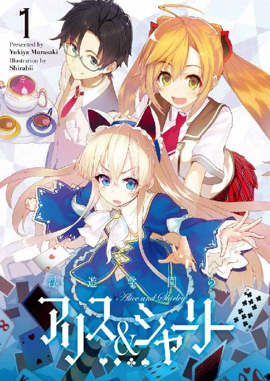
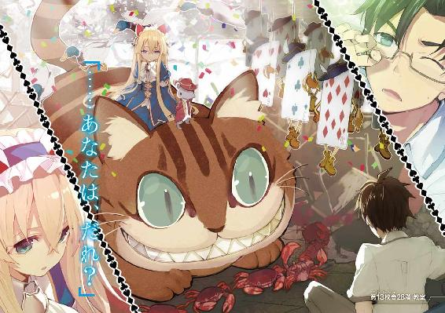
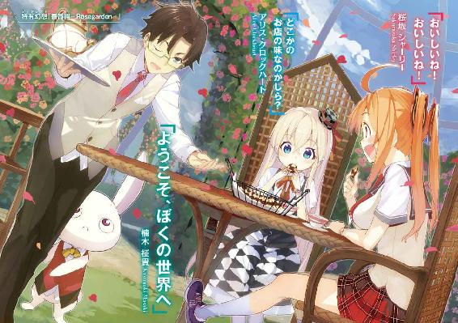
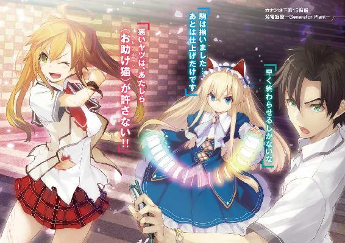
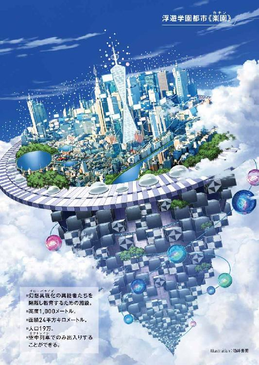
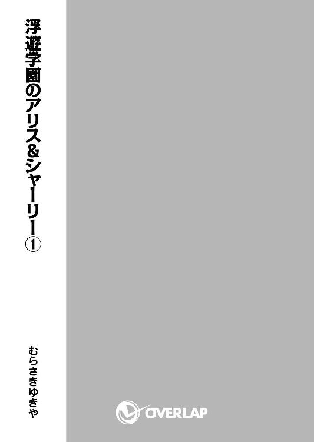
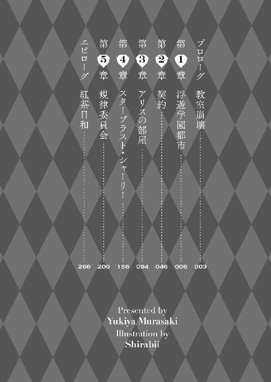
プロローグ 教室崩壊
天井が落ちてきた。
金色の陽光が教室の窓から差しこんでいる午前八時十三分。
楠木柾貴はたちこめる粉塵に口元を押さえ、うっすら目を開く。
砕けた天井の瓦礫と、上の階の教室にあった机や椅子や床材が散乱していた。
そのなかで奇妙な影が踊っている。
細長い手足をもつトランプの兵隊が、ラッパを吹き鳴らす。そのラッパときたら生きているガチョウであり、かぱりと開いた黄色いクチバシから、Ｐｕｏｏｏ～とアルファベットを吐いていた。猫より大きいくらいの、帽子をかぶったネズミとか、カモとかインコとかカニとか子ガニとかが笑ったり歌ったり。
現実ではありえない存在ばかりだった。まるで童話からこぼれてきたかのよう。
それらは教室の天井が崩れたときに落ちてきたらしい。
部屋には柾貴と、もう一人しかいなくて、幸いなことに怪我人は出なかったけれど、ならべられていた机や椅子は踏まれて潰れてぺしゃんこで、元の形がわからない物になっていた。
トランプの兵隊や帽子をかぶったネズミなど、非常識で不条理で無気味な存在たちの中に巨大な猫がいる。体長六メートルくらい。ふさふさした毛におおわれた丸い頭の天辺は、底の抜けた階間の上まで届いていた。
アーモンド形の目を細め、ニンマリ笑う大猫が、おじぎするみたいに頭を下げる。
ふたつの三角耳の間に――人影があった。
その人物の異質さは、瓦礫のなかで踊る奇妙な存在たちとは別の意味で際立っていた。
柾貴は息を呑む。
状況を忘れて見とれてしまうほど、綺麗だ、と思った。
西洋人形みたいな女の子だった。
サファイアのように青く澄んだ瞳に、金糸を束ねた髪。石膏像のごとく肌が白い。
ゆっくり動く大猫の頭に乗って、ふさふさの三角耳にしがみついていた。
女の子のほうが柾貴より背は低いけれど、ずっと高い場所にいるから見上げる形になる。
彼女が周りを見渡して――柾貴と目が合った。
不思議そうに小首をかしげられる。
「......あなたは、だれ？」
透明な水のような透き通った声だった。
「ええっと、ぼくは、楠木柾貴......今日、転校してきたんだ」
「そう。ちょっと驚かせてしまったかしら」
「すごく驚いたよ。自分がおかしくなったかと思ったくらいね――きみは、いったい？」
「......かわいそう」
質問への回答はなく、代わりに彼女は憐憫を口にした。
柾貴は戸惑って聞き返す。
「ぼくが？ どうして？」
「......そこにいると、死んでしまうもの」
「えっ!?」
かすかな風切り音を耳にして、柾貴は振り返る。
窓の外に――――
第１章 浮遊学園都市
転校初日、午前七時二十二分。
柾貴は浮遊学園都市《楽園》に降り立った。
「ふぅ、暑いなぁ......」
エアコンが効いた駅のロビーから自動ドアをくぐって出ると、途端に空気が首筋にまとわりついてくる。
空を見上げると、ギラギラと音が聞こえてきそうなほど太陽が輝いていた。
そして、雲が近い。
「おお、さすがは浮遊都市だ！」
この学園は高度千メートルに浮かんでいる巨大な街だ。総面積は二十四平方キロメートルという東京都の区をひとつ浮かべたくらいの広さがある。
唯一の玄関となるのは空中列車の駅だけ。
そのメインゲート前は、噴水のある広場になっており、デパートや飲食店や娯楽施設のビルへと歩道が伸びていた。楽しげで賑やかな場所だ。
歩道や広場などは全て二階の高さにあり、車両は下層の地表階を行き交っている。歩車が完全分離されているのは、この時代でも珍しい最先端の構造だった。
ついつい、柾貴の視線は駅前の洒落た喫茶店に向いてしまう。
――キンと冷えたアイスティーなんて最高だろうな。
いや、約束の時間はすぐだ。
柾貴は誘惑を振り切り、駅前の見物もそこそこにして、待ち合わせ場所を探した。
「えっと......三角形のモニュメント？」
見当たらない。
会う約束をした相手は、幼馴染みだった。
七年前、先にこの学園へ転校した女の子で、小学校では同じクラスだった。よく一緒に遊んだものだ。
彼女は誰よりも木登りが上手く、泳ぐのが速く、臆せず男子とケンカするような女の子だったが、もう互いに高校生である。
さぞ女性らしくなっているだろう――と考えると、柾貴は幼馴染みに会うのが楽しみのような、気恥ずかしいような複雑な心境になるのだった。最初の挨拶はどうしようか？
タタタタタ......と駆ける足音が近づいてくる。
「ん？」
「柾貴――――!!」
視界が白色でおおわれた。むぎゅっ、とやわらかいものが顔に当たる。
クッション!?
おおきくて、やわらかくて、まるっこい。
そして、ぐぐっと重みがかかってきた。
頭を押さえつけられて、柾貴はようやく自分が抱きしめられていることに気付く。
「息が......!?」
「ふにゃあ!! ほんものだよぉ。ほんものの柾貴だよぉ!!」
「く、くるし......」
「このニオイ、懐かしいなぁ」
「ふがっ、がっ......!?」
「あれ？ 柾貴、どうしたの？ なんか言ってよ？」
「死ヌ............」
「ええっ!?」
ぐったりしたところで、ようやく彼女が両腕を離してくれた。
口と鼻をおおっていたやわらかいふくらみから、顔面が解放される。
ぷはぁ......と柾貴は深く呼吸した。
「空気、美味しいなぁ」
「あ、そうでしょ。この学園は海の上にあって、しかも、排ガスの出るクルマは禁止されてるから」
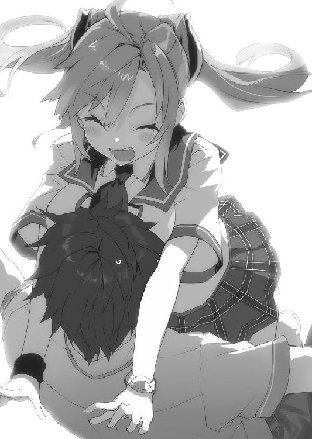
「そういう意味じゃないんだけどな。はは......思ったより変わってなくて安心したよ。ひさしぶりだね、シャーリー」
「にははっ、ひさしぶり、柾貴！ あ、でも、変わってないってことはないと思うけどな。ほら、いろいろ違うでしょ？」
見せつけるように少女は胸を張る。
幅広のネクタイと大きな襟のある半袖ブラウスと、赤いチェックのプリーツスカートという制服姿だった。
子どもの頃には短くしていた髪は腰まで伸びていて、睫毛も長く、手足はスラッとしている。
なにより、女性らしい胸のふくらみが、他を圧倒するボリューム感で存在を主張しまくっていた。
ズド～ンという感じである。
これは血筋か？
彼女は名を"桜坂シャーリー"といい、母親はアメリカ人らしい。
「......たしかに、育ったね」
「でしょ!? 三十センチも大きくなったんだから！」
「セ、センチで言われても、元を知らないけど」
「んとね、今は一五九センチになったかな。柾貴は？ あたしより高くなったねぇ」
シャーリーが手を伸ばしてきて、柾貴の頭をなでまわした。
盛大な勘違いに気付いて、思わず赤面する。
「あ、ああ、身長か！ そうか、身長の話だよね、うん」
「んに？」
「ぼくのほうは――」
おしゃべりをしながら。
柾貴は、すでに七年もこの街に住んでいるシャーリーに案内してもらって、学校へと向かう。
いや、ここは浮遊学園都市カナンだ。すでに学校には踏み入れている。
柾貴たちが向かうのは、この街にある巨大な校舎のひとつだった。
駅前から自動運転のバスに乗って、十五分――《第十三校舎前》のバス停で降りた。
シャーリーに腕を絡められ、柾貴はぐいぐい引っぱられる。
「ほら、ここだよ！」
彼女のやわらかさや体温が伝わってきて、どうにも落ち着かない。
「わ、わかった。はぐれないから。大丈夫だから」
周囲は登校する生徒たちで溢れかえっていた。みんな同じ制服姿をしている。
新顔である柾貴と、その腕を抱くように持っているシャーリーは、他の人たちから奇異な目を向けられた。
「柾貴、もうクラスは聞いてる？」
「いいや。これから職員室で教えてもらうと思う。というか、なにも聞いてないんだよ。資料を渡されたけど、ちょっと目を通したくらいじゃ、意味がわからなかったし......」
「そうなんだ。あたしのクラスは二年Ａ組だよ。四十五階にあるの」
「へぇ......って、四十五階!?」
「うん。第十三校舎は六十階まであってね。一番上の学食とか、すごく景色がいいよ」
指さされた目の前のビルを見上げる。
一階に玄関があり、二階、三階と階段状になっていて、四階より上はガラス張りの高層ビルがそびえ立っていた。
「これ、全部、教室なのか!? なんか学校とは違う会社のビルかと思った」
「あははっ。二十九階までが特別教室で、三十五階までが先生の部屋で、四十階までが一年、四十五階までが二年、五十階までが三年の教室だよ」
「は～......五十一階から上は？」
「学食！」
「そいつは、すごいなぁ」
「小学校や中学校も、こんな感じ。あたしも転校してきたときは驚いたけど、すぐ慣れるよ」
「だといいけど......ところで、シャーリー、そろそろ腕を離さない？」
「なんで？」
「いや......ちょっと恥ずかしくないか？ 周囲の視線が......」
彼女は屈託のない笑顔を浮かべている。
「にははっ、気にしすぎだよ、柾貴！」
「そ、そうかな？」
自分が意識しすぎなのだろうか、と柾貴は思う。
「ほら、行こ！」
「あ、ああ」
玄関をくぐって、駅のコンコースかというほど広い通路を抜けると、さらに広大なホールに出た。
ここが高層ビルの中心部になるらしい。
ホール中央に円形の柱というか、曲線を描く壁がある。《ELEVATOR PILLAR》と書かれた壁に、エレベーターがいくつも並んでいた。
次々と生徒が入っていく。
「たくさんあるなぁ」
「でも、けっこう待つんだよ？ とくにお昼休みとか」
「それだけ生徒も多いわけか」
「大きな柱の周りにエレベーターがついてるから、一方に行列ができてて、反対側はガラガラなんてこともあるし」
「ははは......なるほど」
「階段もあるよ？」
「ああ、そうなんだ。職員室って何階にあるんだっけ？」
「三十階！」
「いやいや、それ大変すぎるでしょ」
「んと、階段は校舎の東ブロックと西ブロックに、それぞれ二つずつあってね」
「どうして階段を使うみたいな流れになってるの!?」
「え？ ......そこに階段があるから？」
「登山じゃないんだから」
エレベーターを待っていると、背後で「なっ!?」と誰かが鋭い声をあげた。
振り返ると、男が目を見開いている。
体格のいい体育会系といった感じの男で、短く切りそろえた髪と、角張った顔が、いかつい印象を与える。その視線は、柾貴とシャーリーに向けられていた。
絞り出すように言う。
「さ、桜坂さん！ 誰だ、そいつは!?」
「ん？ 柾貴だけど」
説明する気力に欠ける返答だった。いろいろ言葉足らずなので、付け足しておく。
「ぼくは楠木柾貴。今日、転校してきたんだ」
「転校生だと？ それじゃあ、覚醒したばかりかよ。そんなやつが、桜坂さんと、う、腕を......」
わなわな、と肩を震わせる。
「あの......彼は？」
「威昌沼っていって、あたしと同じクラスの人だよ。それだけ」
「桜坂さん、それだけってことはないだろ？」
「それだけだもん」
「ふっ、相変わらずつれないな」
威昌沼は、シャーリーに対しては親しげな態度を見せるが、柾貴に向かっては強烈な敵意を放っていた。今にも殴りかかってきそうなほどに。
「――そんで？ お前は、桜坂さんのなんだってんだ？」
初対面だというのに、すっかり喧嘩腰だ。
柾貴は辟易してしまう。
「ただの幼馴染みだよ......あのさ、シャーリー、やっぱり、こういうのは誤解されると思うんだ」
やんわりと、腕をほどく。
彼女は残念そうにしつつも従ってくれた。
しかし、それくらいでは、威昌沼の怒りは収まらなかった。むしろ目を血走らせる。
「な、名前を呼び捨てに......ッ!? オイ、お前な！ ちょっと前から知り合いだからって、桜坂さんに馴れ馴れしくしたら迷惑だろうが!?」
「そういうつもりはないんだけど」
「桜坂さんも！ そんな、今さら覚醒したようなレベルの低いやつ、仲良くしてやることないって」
威昌沼の言葉に、シャーリーがムッとした顔をする。
「なにそれ？ 仲良くする相手をレベルで選ぶなんて変じゃない？」
「ぐっ!?」
「行こう、柾貴。階段でいいよね」
「仕方ない、か」
相手が誰であろうと衝突するのは苦手だ。三十階まで階段を上るのは大変そうだったが、柾貴はそちらを選ぶことにした。
ギリッ、と威昌沼が歯噛みする。
姿が見えなくなるまで、彼は柾貴のことを睨み続けていた。
「ごめんね、柾貴。なんか、変な感じになっちゃって」
階段を上りながら話す。
「気にしてない。シャーリーが悪いわけじゃないし。ちょっと普通じゃないと思うけど、彼はクラスメイトってだけなんだろう？」
「もちろん！」
相手のほうは、そう思っていない様子だったが。
シャーリーが頭をかかえる。
「一年のときに、威昌沼からパートナーにならないかって誘われたんだよねー」
「えっ!? お付き合いとか、そういう？」
ぶんぶん、とシャーリーが手を左右に振る。
「ちがうよ！ そういうんじゃなくて、あたし、学園の委員会に入ってるんだけど、そこが二人一組って決まりがあってね！」
「ああ......委員会か」
「結局、別の子と組んだからパートナーにならなかったんだけど。そんとき、はっきりと断らなかったせいか、勘違いされちゃったのかな？ なんか、特別に親しいみたいに思われてんの」
「誰であれ、仲がいいのは良いことだと思うけど」
「う～ん、仲違いする気はないけど......でも周りの人たちにまで、あいつと特別に仲がいいと思われてるのって変じゃない？ 不思議！ 不思議！」
わざと周りから誤解されるように威昌沼が振る舞っているからだろう。
「あんな言い方をされたら、仕方ないと思うよ」
「はぁ......迷惑って言ってるんだけどねぇ」
「言ってるのか」
「何度もね。はっきりとね！」
「大変なんだなぁ」
一度も異性からアプローチされたことがない柾貴には想像しかできないが、シャーリーの表情からは苦労していることが窺い知れた。
階段の踊り場で、くるりっとシャーリーが、こちらを向く。
「言っとくけど、柾貴は変な勘違いしないでよ？」
「今、説明されたから大丈夫だ。ぼくは、きみの言うことを信じるよ、当然」
「それならいいけど......あんなふうに、レベルで差別するような人と特別な仲だなんて、ありえない！」
十五階くらい上ると、だんだん呼吸が弾んでくる。
柾貴は眼鏡を持ちあげ、鼻をぬぐった。
「ふぅ......そういや、レベルがどうこうって言ってたけど......なんだい？」
「気にしなくていいよ。たんなる数字だもん」
「実は、よく知らないんだ......レベルって、なにか重要なもの？」
意外そうな顔をされた。
「柾貴、レベルのこと、知らないの？」
「なんせ急に転校が決まったからね。渡された資料に目は通したものの、さっぱりで」
「じゃあ、特有幻想とか幻想具現化のことは？」
柾貴は愕然とする。まじまじとシャーリーを見つめてしまった。
「すごいね。やっぱり、子どもの頃とは違うんだな......」
「な、なに？ 急に」
「そんな難しそうな言葉が、きみの口からスラスラと出てくるなんて意外だよ」
「え？ にははっ、そうかな？ すごい？ すごい？」
シャーリーが嬉しそうに胸を張った。
「本当にすごいと思う。それで？ その特有幻想とか、幻想具現化っていうのは、どういうものなんだい？」
彼女が固まった。うぬぬ、と顔をしかめる。
うなりながら。
「ううぅ............なんていうか......"えいやっ！ ドーン！"って感じ。にゃー」
「ありがとう、よくわかった」
「そう？」
「ああ、やっぱり、シャーリーだね！」
「にははっ」
柾貴がわかっていることは――
その才能のせいで、七年前にシャーリーがいなくなったこと。
そして、その才能のおかげで、今、シャーリーと再会できたこと。
「......ぼくの能力は、本当にささやかだから、転校までして勉強しても何かの役に立つか疑問だけど」
「覚醒したばかりだと、力が弱くてレベルが低いのが普通だから。これから変わると思うよ？」
「ああ、力の強さが、レベルなのか」
「おおざっぱに言うとね。テストの成績みたいなものって先生が言ってた」
「この学園では、それが重要なんだね？」
「クラス分けがレベル順だったりして、みんな、大事そうに言うけど......あたしは、どうでもいいと思うんだ」
「そうなのかい？」
「――だって、使える食堂は同じだもん！」
「なるほど、説得力あるね」
シャーリーはＡ組だと言っていた。
レベル順だとすると、一番高いクラスということか。
そして、威昌沼という男も、シャーリーと同じクラスらしい。あの態度からして、彼もレベルが高いのだろう。
「あんなもの気にしなくていいんだよ。レベルなんか数字だよ、数字～」
「レベルは、どうやって決められるんだい？」
「う～ん......気にしなくていいって言っておいて、あたしがレベルについて話すのって、変じゃない？ だから、必要になったときに誰かに聞いて」
「もしかして詳しく知らないとか？」
「そそそそんなことないよぉ」
シャーリーの視線が宙を泳いでいた。階段を上りながらだと危ない。
「まぁ、職員室で説明されるだろうしね」
柾貴はため息をつく。
その鼻先に――ビシッと彼女が指を向けてきた。
真剣な表情をしている。
「ひとつだけ確かなことは！ あたしが、レベルなんかで相手を差別しないってこと！」
「......わかった」
うなずきを返すと、シャーリーが笑みをこぼした。
高校生になって覚醒した柾貴は、まだレベルが低くて当然らしい。彼女は気遣ってくれているのだろう。柾貴は感謝の言葉を呑みこんだ。それを口にする関係は、すでに対等ではないから。
まだまだ階段は続いている。
話題を変えることにした。
「そういえば......シャーリーが入っているのは、どんな委員会なんだ？」
「うちの委員会？ いろんな仕事があるんだけど......学園の規則に違反する人がいないか見回ったり、違反してる人がいたら注意したり、とか」
「風紀委員か」
「そんな感じかな。ちょっと大げさな名前がついてるんだけどね！」
「どんな？」
「規律委員会っていうの」
照れくさそうに彼女は言った。
たしかに、学園の委員会にしては大仰だ。なにかしらの意味があるのかもしれないが。
「まぁ、名前はともかく......シャーリーらしいって思うよ」
「あたしらしい？」
「きみは子どもの頃から曲がったことが嫌いで、悪いやつがいたら自分より強そうな相手でも、怯まずに向かっていく性格だったからね。正義の味方というか、無鉄砲というか。とにかく、よく無茶をしたもんだ。覚えてるかい？」
「にははっ、そうだったねぇ......うん、まぁ、なかなか上手くいかないことも多いんだけどね」
「シャーリーは不器用だからな。誤解されることも多いんじゃないか？」
「ちょっとだけ」
苦笑する彼女の表情には、意外にも陰りがあった。昔は見せなかった表情だ。
なにか悩みがあるのかもしれない。
学園に来たばかりの柾貴には、あまり言えることがないけれど――
「シャーリー、きみ自身が正しいと思って行動しているなら、それが一番いいことだよ」
「ん？ あはっ、そうかもね......ありがと、柾貴！」
彼女は暗い雰囲気を振り払うと、小学生だった頃の面影が重なるような、晴々とした笑みを浮かべた。
甲高い電子音があがる。
耳を突くような鋭い音が、広くはない階段に鳴り響いた。
シャーリーが左手を持ちあげる。
彼女の手首には、銀色の腕輪があった。薔薇のレリーフが彫られ、紫色の水晶が飾られている。
右手で触れると音が止まり、同時になにもなかった空間に、半透明の板が現れた。これは幻の類ではなく、純然たる科学の産物である。
立体映像によるウィンドウに、赤色で《EMERGENCY》の文字。
「緊急......!?」
彼女の表情がこわばった。
「どうしたんだ？」
「校舎内でトラブルが起きて......どうしよう......委員会から出動要請が来てる」
彼女はウィンドウと柾貴の間で、視線を往復させる。
だいたいの事情を察することはできた。
「なにを悩んでるんだい？ ぼくのことなら気にしなくていい。子どもじゃないんだから、校舎内で迷子にはならないよ」
「う、うん」
「きみは呼ばれてるんだろう？ しかも、緊急事態だ」
「うん」
「なら、早く行かないと！」
あえて柾貴は強い口調で言った。
彼女の表情から迷いが消えて、真剣さのなかにも余裕が生まれる。
「ありがとう、柾貴。あたし、行ってくる！」
「そうしてくれ。ぼくは三十階の職員室に向かうよ」
今、二十五階だから、そう時間はかかるまい。
「案内、途中になっちゃって、ごめんね！」
「いいさ。また後で他のところも案内してくれると嬉しいよ。とくに美味しいケーキの店とか」
「うん、柾貴、ケーキ好きだもんね！ また後でね！」
シャーリーがうなずいて、駆けだした。
速い！
一瞬で階段を上ってしまうと、二十六階の廊下へと飛び出していく。
同時に腕輪を耳元に当てた。
「こちら、シャーリー、状況を教えて！」
仲間と連絡を取る声と、廊下を走る足音が、あっという間に遠のいて聞こえなくなった。
柾貴は一人になり、一抹の寂しさを覚える。
しかし、もとより中途の転校生であり、心細いのは当然だろう。
黙々と階段を上っていく。
二十八階に着いたときだった。
大声が響く。
「おい、見たか！ ハァ......ハァ......見たかよ！ あれが俺の力だ！ どうだ、まだ......まだ俺はできるだろう!? 使えるだろ!! だから......だから......もっと、アレを！」
切迫した金切り声だった。
ぼそぼそと、もう一人の声もしたが、なにを言ったのかまではわからない。
「......もう......やはり............」
「んだと!? 話が違うだろうが!! 渡せ！ そいつを渡せ！」
どうやら、揉め事のようだ。
怒鳴り声だった。
廊下のほうから聞こえてきている。
転校初日から面倒に関わりたくはない――けれども、トラブルが起きているかもしれないのに様子を見もしないのは、ちょっと情けないと思う。
暴力沙汰なら放っておけないし、問題なかったとしても、わずかな回り道でしかない。まだ時間には余裕があるはずだ。
柾貴は階段スペースから、廊下へと出てみる。
無音の廊下に、自分の足音が響いた。
静かなのは、今がＨＲ前の時間で、三十階より下が特別教室ばかりのフロアだからだろう。
ドアが開いたままの教室から、何者かが飛び出してきた。
針金のように痩せた男子だ。
一人だけ。
――誰かと話していたように聞こえたけど、もう一人は教室の中か？
その男は荒い呼吸を繰り返していた。目は血走り、顔色は蒼白になっている。
「テ、テメエ......聞いたのか!? 今の話を！ オイ！ なんで、そんなとこに、いやがるんだよ!?」
「いや......階段で上ってきたら、声が......」
「クソッ！ クソッ！ ああ......わかってる！ すぐに始末してやる！ だから、アレを！ いいな、約束だぞ!?」
教室の中に声をかけていた。やはり誰かいるのか。
男が柾貴のことを睨みつけてくる。
「クソがァ！」
「......あの......なにかあったんですか？」
ただならぬ雰囲気を察して、柾貴は離れたところから声をかけた。
相手との距離は十歩ぶんほど。
「上で、一人......斬った」
「え？」
「そして、今から......テメエも......」
「な、なにを言ってる？」
「......すべて......斬る......斬れるんだ！ 俺は......なんでも......斬れる!!」
男が走って突っこんでくる。
「どういう......？」
「斬る！ 斬れる！ 俺は......うおおおおっ！ 斬り裂け！ 《絶叫剣》!!」
ひきつったような男の叫び声と同時に、ヒュン！ と風が鳴った。
白い残光だけが円を描く。
範囲は一メートルばかりだろうか。
彼の周囲にある窓や壁やドアが、砕けて崩れ落ちる。
まるで最初から別の物体であったかのように、鋭利な断面を覗かせて、コンクリートの壁や金属のドアが床に転がった。
超常の現象。
「な、なんだよ、それ......!?」
柾貴は背後へと飛び退いていた。
危ないところだった。
わざわざ間合いを詰めてくるからには、距離の限られた何かを仕掛けてくるのだろう、ナイフでも持っているのか？ と考えて遠くに離れたのだが――
まさか見えない刃物のようなものを振って、周囲を切断するなんて！ 扉や壁まで破壊するとは、予想外だった。
人間業ではない。
これが特有幻想というものに関係していることは、いくら知識のない柾貴でも察しがついた。
相手は狂気に満ちており、その行動は常軌を逸している。
「テメエ......なに避けてんだ、アァッ!?」
――こいつ、やばい！
暢気にしてたら、殺されるかもしれない。
理屈はわからないが、叫んだ瞬間に見えない刃物が振られる。その鋭利さといったら、鉄もコンクリートもおかまいなしだ。
針金のように細身の男が、明らかに加害者にもかかわらず、まるで被害者みたいな悲鳴をあげる。
「うわぁぁあああ!! 俺は！ まだ使える！ 役に立てる！ こんなにも......こんなにも......強い！ 強いんだ！ うおおおお!!」
「冗談じゃない！」
柾貴は逃げだした。
針金男が追いかけてくる。
廊下の行き止まりが見えてきた。
追い詰められる。
一番奥の壁に手を突き、急角度で曲がった。柾貴は教室のドアに手をかける。
開いた！
幸運にも鍵はかかっていなかった。
飛びこむ。
部屋は、ごく普通の教室だった。机と椅子がならんでいて、黒板の代わりに大型モニターがある。近代的な設備を持った一般的な教室だ。
窓の外には、二十八階の景色が見えていた。
逃げ場、なし。
「はぁ......はぁ......はぁ......」
「ふぅーっ、ふぅっ、ふぅっ......ふぅーっ......」
柾貴よりもさらに呼吸を荒くして、針金男が教室の戸口に現れた。
理不尽な相手に、柾貴は言葉を投げつける。
「な、なんで、こんなことするんだ!?」
「ふぅーっ......テメエが、俺たちの話を聞いたからだ！」
「聞こえたけど、意味はわからなかった......本当に」
「知るか！ テメエを殺らなきゃ......お、俺がヤバイんだ！ 俺は......見せてやるんだ。まだ斬れる！ まだ使えるってとこを！」
「......くっ......だめか」
話が通じない。
彼の言動から推測できるのは、誰かしら動機になっている人物がいるらしい、ということだけ。おそらく、あの教室にいたのだろう。
針金男は理性を失っていても、判断力は健在のようだった。ゆっくりと角へ追いこむように近づいてくる。
「斬る......斬る......斬る......俺は、斬れる......こいつも、同じだ......一人も、二人も......同じ......」
「ううぅ......」
柾貴も特有幻想を持っているが、戦いに使えるものではなかった。
――どうする？
相手が間合いを詰めてきて、あの不可思議な力の範囲内に入って、叫ばれた瞬間、壁や窓や机や椅子ごと柾貴も切断されてしまうだろう。
廊下から聞こえる足音はなく、助けが来ることはなさそうだ。
殺される？
身体が震えた。
ぼくは殺されるのか？
天井が崩落した。
轟音をたてて、頭上から照明パネルを兼ねた天井部材が落ちてくる。
迫ってきていた針金男が教室の外へ飛び退いたのが見えた。細身な外見に違わぬ敏捷さだった。
柾貴は身じろぎもできなかったが、教室の窓際にいたおかげで巻きこまれずに済んだ。
幸運なのか。
不運なのか。
その後、上の階から落ちてきた奇妙な存在たちを目にすることになる。
トランプの兵隊と、帽子をかぶったネズミと、カモとインコとカニと子ガニと、巨大な猫と。
ふさふさの三角耳にしがみついた女の子。
透き通った声で、彼女は言う。
「......あなたは、だれ？」
柾貴は彼女の姿に見とれていた。金色の髪もサファイアの瞳も美しかった。
「ええっと、ぼくは、楠木柾貴......今日、転校してきたんだ」
「そう。ちょっと驚かせてしまったかしら」
「すごく驚いたよ。自分がおかしくなったかと思ったくらいね――きみは、いったい？」
「......かわいそう」
質問の返事ではなく、憐憫が与えられた。
「ぼくが？ どうして？」
「......そこにいると、死んでしまうもの」
「えっ!?」
かすかな風切り音を耳にして、柾貴は振り返る。
窓の外には――
広げた翼が教室よりも大きい鷹の上半身と、ライオンの下半身をもつ生物が！
童話やファンタジーに登場する伝説の怪物。無気味な半獣半鳥の空想生物。その名は、グリフォン。
巨大な黒い影が、突っ込んでくる!?
「うわぁあああああ!!」
柾貴は追われていたときでさえ発しなかった悲鳴をあげて、飛びこむように床に伏せた。
窓ガラスが枠ごと砕ける音。
壁も割れた。
校舎が揺れる。
背中に、バラバラとガラス片が落ちてくる。
破片が人体に刺さるような古いガラスは使われていなかったが、大きな破片は、けっこう痛かった。
ガラス片の雨と校舎の揺れが止まる。
顔をあげると教室の天井から床までいっぱいに巨大な鷹の頭があった。翼を広げた上半身と、ライオンの下半身は窓の外にある。大猫より、さらに大きい。
本当にグリフォンだ。
現実に、こんな生物はいやしない。
空想の存在のはず。
トランプの兵隊や帽子をかぶったネズミたちと同じはずなのに。
野太くしゃがれた声で、グリフォンがうめく。
「Ｏｈ！ 挟まった！ しまった、填った、まったく困った、やっちまった！ けれども、こんなビルなど溜まった息で、吹いたらすぐに真っ平ら！」
ゴフゥ、と息を吐こうとする幻想の巨大生物。
そいつを制したのは、大猫に乗っている女の子だった。
「......お待ちなさい」
「"待った"と言ったか？」
女の子が追い払うように手を振る。
「もう相手がいないから......帰っていいです」
「Ｇｕｒｒｒｒｒｒｒｒ!?」
獰猛な瞳をギラつかせ、グリフォンがうなった。
女の子と睨み合う。
てっきり、彼女は命令を聞かせられるのかと思ったが、予想外に幻想生物は反抗的だった。
大丈夫なのだろうか。
柾貴は固唾を呑んで見守る。
フンッ！ とグリフォンが鼻息を荒げた。それだけで、トランプの兵隊が何枚か吹き飛ばされる。
「迫ったピンチが消えててまったり？ 留まったって出番なし？」
「ええ」
「それならオレ様、まった今度！」
入ってきたときと同じくらい派手に、巨大な鷹の頭が、校舎の外へと出て行った。
女の子が眉をひそめる。
「......最後のは苦しかったですね」
グリフォンの"まった今度"にダメ出しだった。
「そういう問題なのかい？」
柾貴は身体のうえに落ちていたガラス片をはたきながら、起きあがる。
壁には巨大な穴が開いており、今見たものが夢や幻でなかったことを示していた。
いや、この瞬間も夢の続きなのかもしれないけれども......
「......生きててよかったですね」
女の子がつぶやいた。
心のこもっていない口調だったが、内容には全面的に同意できる。
「本当にね......もう命の危険がないなら教えて欲しいんだけど......きみは？」
「わたしのこと、知らないんですか？」
「ぼくは転校してきたばかりだから」
「そうですか......恐ろしくはないんですか？ この猫もトランプの兵隊たちも、さっきのグリフォンも、わたしの特有幻想ですよ」
「びっくりしたし、グリフォンが突っこんできたときには恐かったよ。でも、いくら強くても力は力だ。使う人によって恐くも頼もしくもなる。きみは、ぼくのことを助けてくれたからね」
女の子が考えこむような仕草をした。
相変わらず無表情のまま。
「......天井を崩したとき、あなたのことは知りませんでした......助けられたのは、ささやかな偶然です」
「あ、ああ、そうなのか。だとしても、グリフォンが来るって教えてくれたじゃないか」
「ええ、そうですね」
柾貴としては、それでも充分に感謝だった。ほんの少し前は絶望的な状況だったし。
女の子が小首をかしげる。
「......それだけで、信用を？」
「充分だよ」
「......信用のバーゲンセール中ですか？」
「いやいやいや！ ちゃんと考えて判断してるよ!?」
「閉店セール......」
「ぼく、閉店しちゃうの!? 信用の安売りじゃないし、末永く営業予定だから！」
「そう思いたいだけでは......」
「な、なにか、信用されたくない理由でもあるのかい？」
いいえ、と小さく彼女は返事をした。
それから、ようやく質問に答えてくれる。
「......わたしたちは、規律委員会のチーム《お助け猫》です」
クールな印象の彼女の口から、意外と可愛いチーム名が告げられた。
それと、規律委員会と聞いて、シャーリーの言葉を思い出す。
"規則に違反する人がいないか見回ったり、違反してる人がいたら注意したり"
「もしかして、さっき、ぼくを追いかけてきたやつが違反者なのか？」
「ええ......そろそろ、捕まるでしょう」
「え？ 逃げたんじゃ？」
「素早い相手なので......追いこみました。苦労しました......レベル４のはずなのに」
最後のほうは独り言のようにつぶやいて、彼女は窓の外へと視線を投げる。
柾貴も追いかけて目を向けた。
不意に、閃光が走る。
目が眩む。
校舎の別の場所から伸びた光が、学園都市のビル群の合間を抜けて、地平線の彼方へと飛んでいった。
まるで、校舎から発せられた電光だ。あるいは、レーザー砲とか、そういう類の兵器だろうか。
ほぼ同時に地響きが伝わってきた。
「うわ、わわっ!?」
柾貴は動揺したが、女の子には予想済みのことだったらしい。
「............」
やがて、閃光と地響きが消えた。
女の子は金髪をかきあげて、左手を耳元へ近づける。彼女の手首にも、銀色の腕輪が填っていた。薔薇のレリーフと紫色の水晶が飾られている。
「――終わりましたか？ そう......貴女にしてはスマートです。では合流します」
柾貴は戸惑っていた。
自分を追いかけていた針金男は、この金髪の女の子から逃げていって、離れた場所で何かがあり、他の誰かに捕まったらしい。
気がつけば、トランプの兵隊も帽子ネズミも消えていた。
残っているのは、瓦礫と壁の穴。廃墟のようになった教室。
それと、女の子だけ。
彼女は歪んだ戸口へと向かって歩いていく。
「ま、待って！」
「......苦情ですか？」
「そうじゃなくて......組織とかチームの名前じゃなくて......きみは、誰なの？」
わずかに思案したあと。
薄い色の唇が開く。
「......アリス・クロックハートです。さようなら」
女の子は廊下へと姿を消した。
柾貴は立ちあがろうとする。しかし、全力疾走の疲労と、連続した驚愕のせいか、膝に力が入らなかった。
浮遊学園都市《楽園》。
ある種の才能に目覚めた者たちが集められるこの街を楠木柾貴が訪れて、最初に遭遇した事件だった。
幕間 intermission
外から風の吹いてくる教室で、柾貴は呆然と立ち尽くしていた。
廊下から、いくつもの足音が聞こえてくる。
濃緑のごついヘルメットをかぶり、制服のうえに防弾チョッキみたいなプロテクターを着た人たちが、たくさん教室に入ってきた。
先頭は髪を短く切りそろえた勇ましい雰囲気の子で、いかつい格好のせいもあって最初は男かと思ったけど、スカートを穿いている。
彼女は柾貴を見つけて目を丸くした。
「えっ、誰ッ!?」
「あ......ぼくは、転校生で......」
「そういうこと......環端末も渡してないなんて......」
「なに？」
「あとで先生から聞いて。今はケガの手当てが先でしょ」
「大丈夫だと思うけど......」
「そんなわけないじゃない！ 血が出てるもの！」
「あ、本当だ......」
ちょっとした擦り傷くらいだろうと思っていたが、膝のあたりに血が滲んでいた。ズボンが赤黒く染まっている。
気付いたら、ズキズキと痛くなってきた。
「そこに座って。すぐに治療できるから。他に痛いところは？ 頭は打ってない？」
言われるがままに床にしゃがんだら、彼女も傍らにかがんで顔を寄せてきた。
眉が太くて意志の強そうな顔つきの少女だ。
柾貴は自分の身体を確かめる。
「えっと......あとは、肩を打ったかな？ 頭は平気だよ」
「そう、肩ね。名前とクラスは？」
「楠木柾貴。二年だけど、クラスはまだ聞いてない。職員室に向かってたんだ」
「ついてないわね、初日からヘルキャットに遭遇するなんて」
「ヘル......？」
「この教室をめちゃくちゃにした人に、会ったでしょ」
「ああ、助けてもらった」
「そんなの偶然よ！ 天井を落とすなんて、冗談じゃないわ！ 壁も壊しちゃうし。いくら使ってない教室だからって、学校をこんなめちゃくちゃに......許せない」
本当に悔しそうに彼女は唇を噛んだ。
「きみは......この学校が......好きなんだな」
「え？ うん、もちろん。だから、私はルールを破る人が嫌いだし、この学校を守るために規律委員会に入ったの」
「ああ、きみも規律委員会なのか」
「そうよ。支援隊のほうだけどね......あ、えっと、支援隊ってのは特有幻想が逮捕任務に向いてない人や、レベルの足りてない人が、後始末とか見回りなんかで前衛メンバーをバックアップしてるの」
「なるほど。そういう仕事も必要だよね」
「でしょ!?」
彼女は嬉しそうにうなずいた。
周りを見れば、状況を撮影したり、瓦礫を片付けたりしている。
全部で二十人くらいだろうか。
「私は......レベルが足りないんだけどね......。あっ、そのぶん、応急救護はしっかり勉強してるから、安心して！」
「わかった」
まだ特有幻想なんてものに慣れていない柾貴としては、レベルのことよりも、この少女の真面目そうな言動のほうを頼れるものと感じた。
「そういえば、名乗ってなかったわね――私は、二年ＺＥ組の氷梨」
「氷梨さん、か」
「うん。じゃあ、楠木くんの手当てをするから......服を脱いで、傷を見せて」
「え......!?」
「なに？」
「こ、ここで脱ぐの？ きみは女の子だし......」
「馬鹿ね。怪我の治療で恥ずかしがってどうするの？」
「うーん」
仕方がないので、ベルトに手をかける。
ボッと氷梨が顔を赤くした。
「ちがッ！ 膝のほうは、ズボンをまくりあげるだけでいいの！ 脱いでって言ったのは、肩のほうで......シャツを......やだ！ もう！」
「そうか、す、すまない」
「う、ううん......わ、私の説明が足りなかったわね」
お互いに赤面してしまう。
柾貴はシャツのほうに手をかけた。
第２章 契約
傷は規律委員支援隊の氷梨に手当てしてもらった。
消毒して治療テープを貼っただけだが、もう痛みはないし、数日で痕も残らず消えるとのことだ。
運がよかった、と思う。
柾貴は予定を大幅に遅れて、三十階の職員室に辿り着いた。
もう一時間目が始まっているだろうか。
「失礼します」
ノックしてから、ドアを開けた。
先生たちの机がならんでいる大部屋を想像していたが、ぜんぜん違っていた。
小さな受付スペースがあり、壁にモニターがある。
コンピュータの『どちらさまでしょうか？』という音声に、柾貴は名前を告げた。
ややあって、奥から先生が出てくる。
灰色の髪の優しそうな男性だ。藍色のスーツのうえに白衣を羽織っており、丸眼鏡をかけている。おだやかな口調で話しかけてきた。
「ふむ、君が楠木柾貴くんか」
「はい」
「私は梁谷玄という――君のクラスの担任だ」
「よろしくお願いします」
「こちらこそ、お手柔らかに頼むよ。報告を聞いたが、どうやら、ずいぶん災難だったようだな」
「......驚きました」
控えめな表現をしておいた。
梁谷先生が苦笑する。
「いきなりヘルキャットと遭遇するとは、いやぁ、まったくついてない」
「ヘルプキャット......ですか？」
聞き間違いかと思った。
先生は笑顔のまま眉をひそめる。
「ああ......いや、彼女たちは規律委員のなかでも一番の実績を誇るんだが、なんせ被害も一番多くてな。ヘルプキャットならぬ、ヘルキャットだなんて渾名があるくらいで」
「なるほど、《お助け猫》じゃなく、《地獄の猫》ですか」
「はは......ヘルキャットってのは《性悪女》ってスラングでもあるが......おっと、教師が初日から生徒の悪口を言ってちゃ印象が悪いな。忘れてくれたまえ」
随分な言われようだった。
それだけ周囲に迷惑をかけているのかもしれない。
支援隊の氷梨も、怒っていたようだ。
たしかに、殺人未遂の男が相手とはいえ、教室の天井を崩したり、壁に大穴を開けたりというのは過剰だったかもしれない。
しかし、そのおかげで助けてもらった柾貴としては、複雑な心境だった。
「規律委員会というのは警察と協力して、この学園の治安維持を担っているんだが、まぁ、ちょっとやり過ぎるメンバーもいてな」
「そうなんですね」
柾貴は曖昧にうなずいた。
「第十三校舎までは、すぐわかったかね？」
「カナンに友人がいるので、案内してもらいました」
「ほほう、それはいい」
柾貴はシャーリーのことを考える。
緊急事態と言っていたが、無事に解決できただろうか？
「楠木くん、友だちがいるのはとてもいいことだ。支え合ってこそ、人は高みに昇ることができる......といっても、君には必要ないかもしれないがな」
「え？」
梁谷先生が視線を手元に落とす。ウィンドウが開いて時刻を表示した。八時三十五分を告げる。
「授業中に入ることになってしまうな。まぁ、歩きながら話そうか」
「あ、はい」
「伝えていなかったと思うが......君のクラスは、二年Ａ組だ」
「え？ Ａ組なんですか？」
「うちはレベル順でクラス分けするからな。君のレベルを考えたら、当然のことだよ」
「もしかして、Ａ組がいくつもあるとか？」
「いいや。どうしてだい？ 二年は三十番目のＺＥ組まである。転校前に説明があったと思うが......君は現時点で学内最高評価の、レベル７幻想具現者だ」
ぽかん、としてしまう。
柾貴は初耳だった。
いや、家に黒服の職員が来たときに、レベルについても説明されたのかもしれない。
けれども、急に知らない世界の話をされて、その世界での評価を教えられたとしても、すぐに理解できるわけがない。柾貴が鈍いだけかもしれないが。
「......ぼくが、最高評価？」
「うむ」
「そんな。冗談ですよね？ だって、ぼくの持ってるのは、あれですよ......なにかの間違いじゃありませんか？ さっきだって、すごいのを見ましたし......」
鉄扉を切断してしまう男や、グリフォンを呼ぶ女の子。
それに、校舎から飛んでいった光もあった。あれも誰かの特有幻想なのだろう。
身震いするほどの超常現象だった。
柾貴の使える力は、ああいうのとは違う。
梁谷先生が真剣な顔をして。
「まだ詳しく知らないから、そう思うのかもしれないが......」
「本当なんですか？」
「あとで検査結果を見てみるかね？ 間違いでも冗談でもない。君は学園でも六人しかいない、レベル７だ」
柾貴は言葉を失ってしまった。
梁谷先生がなにかを言いかけた、そのとき――
「......今の話、ほんと？」
そんな声が聞こえた。
忘れるはずもない、透き通るような綺麗な声だった。
廊下の先から。
柾貴は自分でも気付かないうちに早足になって、廊下の左側にある階段スペースを覗きこんだ。
階段の上に人影がある。
窓を背にして逆光になった景色のなかに。
あのときの、女の子――アリス・クロックハートがいた。
湖水のような瞳と、金を溶かした色の髪と、フリルのあしらわれた青色のドレス。
背丈の小さな彼女に、また見下ろされる形となった。
柾貴は空唾を呑む。
「............きみは、いつも高いところにいるね」
「あなたと会ったことが、ありますか？」
「えっ、覚えてない？」
アリスは無表情のまま小さくうなずいた。
柾貴は肩を落とす。自分のほうは一生忘れられないと思うくらい強烈な体験だったのだが。
「まぁ、ぼくって特徴ないからな......天井を壊したときに下の教室にいたんだよ。きみはグリフォンが突っこんでくるのを教えてくれた」
「......あ......本部からの報告になかった人ですか」
梁谷先生が話に入ってくる。
「いやぁ、すまなかったね。位置情報がモニターできてなかったんだ」
位置情報？ 柾貴は首をかしげる。
梁谷先生が銀色の腕輪を取り出した。シャーリーや、アリスがつけているのと同じような形の物だ。薔薇のレリーフは入っておらず、無骨な無地だったが。
「環端末といって、カナンの生徒職員は全員がつけているんだ。学園外でいう携帯電話みたいなものだな。緊急時には規律委員会や教師に居場所を知らせてくれる。心拍数や脳波から健康状態までわかるんだ」
「なるほど。これがあれば、天井の下敷きにならずに済むわけですね」
「ははは......そういうことだ」
梁谷先生が苦笑した。
アリスは小首をかしげる。
「......それは、時と場合によるかしら？」
「いやいやいや、誰か居るとわかってて天井を落とすのはやめようよ！」
「............」
不安になる沈黙だった。
アリスが先ほどの質問に戻る。
「......あなた、本当にレベル７なのですか？」
「今、そう聞いたところだよ。ぼくは評価されるような力は持ってないと思うけどね」
「......力の存在は......本人の自覚や希望とは関係ありません」
問いかけるような視線をアリスが向ける。
梁谷先生が請け合った。
「私は生徒の成績で冗談を言う教師ではない。楠木くんは間違いなくレベル７だ。しかし、その能力は、クロックハートくんたちが持っているようなタイプとは違っているので、評価が高いからといって実用的かというと――」
「それは、わたしが判断します」
「え？」
声をあげたのは柾貴だった。
理解の追いつかない当事者を置き去りにして、アリスと梁谷先生の間で話が進んでいく。
「おいおい、楠木くんは学園に来たばかりなんだぞ？」
「......レベル７なら、授業など役に立ちません......空を飛べない人間に、飛び方を教わる鳥がいますか？」
「た、たしかに、得られるものは少ないかもしれないが、授業は能力の使い方だけを教えているわけではない。それぞれに大切な役割があるんだ」
「その大切な授業を......途中で邪魔することもないでしょう。もうすぐ休み時間ですし」
「むっ......」
「それとも、わたしの特有幻想に棲む六六六の妖精たちに、なにか教えてくれるのかしら？ 素敵です」
「いや、はは......そいつは無理だな」
「残念です」
皮肉めいたアリスの言葉に、梁谷先生が黙りこむ。
階段の上から、彼女が見下ろしてくる。柾貴のほうへと視線を移して。
「......あなた、転校してきたばかりだそうですね」
「うん」
「わたしが学園を案内してあげます」
「えっ？ でも、今から教室に行くところなんだけど......」
梁谷先生が手を振った。白旗があったら振っていたかもしれない。そんな顔をしていた。
「楠木くん、べつにかまわないぞ。クロックハートくんの言うとおり、今から行くと授業の途中になるわけだし。クラスでの挨拶は案内してもらった後にしよう」
「いいんですか？」
「まぁ、なんというか............クロックハートくんの特有幻想《妖精進撃》は評価規格外でな。どういう意味だか、わかるか？」
「いえ......？」
急に専門用語を出されて、柾貴は首を左右に振った。
先生が声をひそめる。まるで、魔女の話をするかのように。
「......誰でもわかるように言うとな......"暴れたら手がつけられないから逆らうな"ということだ」
「ええっ!?」
「学園の平和のために、彼女の機嫌を損ねないようにな」
「学校なのに、そんなことでいいんですか？」
まるでガキ大将と取り巻きの子どもだ。社会とは、もっと法律と規則に守られているものではないだろうか。
「いいかね、楠木くん。学校というのは集団生活に慣れるための場所だ。大切なのは協調性なのだよ」
「みんなと仲良くってことですよね？」
「いいや。協調性というのは"みんなと同じように、強いヤツには逆らうな"ということだな」
「そんなっ!?」
「まだ君は若いんだから、長生きしたいだろう？ 私は長生きしたい」
「そ、そりゃ、命は大切ですけど......」
ほんの少し話しただけだが、アリス・クロックハートが、それほど暴力的で非常識な子とは思えなかった。
しかし、先ほども教室ひとつ廃墟にしていた。柾貴だって一歩間違えれば死んでいたかもしれない。周りが怯えるのも理解できる。
ため息まじりにうなずいた。
「まぁ、わかりました」
梁谷先生が銀色に光る環端末を渡してくる。
「これを付けておくように。それでは後ほど、二年Ａ組で待っているからな。私は楠木くんの無事を祈っているぞ」
「祈......」
かえって不吉だ。戦地に赴く兵士に告げる"Good Luck!"と同じに聞こえた。
逃げるように先生が職員室へ戻っていく。
アリスと二人きりになった。
「......もう、いいかしら」
階段のうえから、ゆっくりと彼女が降りてくる。
やっぱり背は低い。柾貴の胸元くらいまでしかなかった。
アリスは"下から見下ろす"という器用な目つきで、尋ねてくる。
「......あなた、名前は？」
「ぼくは楠木柾貴」
彼女に名乗るのは二回目だった。
「......そういえば、聞いたかもしれないわね」
「ぼくは、クロックハートさんって呼べばいいかな？」
「......ご自由に。楠木くん、わたしが学園を案内してあげましょう」
「ありがとう。よろしく頼む」
経緯はともかく面倒を見てくれるわけだから、感謝する気持ちに偽りはなかった。
アリスが相変わらずの無表情でつぶやく。
「......変な人です」
「えっ!?」
なにか間違えたのだろうか？ と戸惑う柾貴だった。
エレベーターピラー前で少し待ち、乗りこむ。
下へと向かう。
スーッと音もなく身体が落ちていく浮遊感に包まれた。
「そういえば、クロックハートさんは、どうして、さっき階段にいたの？」
「......階段にいたら、おかしいですか？」
「いや。ぼくの知り合いにも、三十階まで階段を使いたがるようなのがいるから、おかしくはないと思うけど」
「その人は、おかしいと思います」
「うっ、まぁ、そうかもな」
アリスが視線を逸らす。
独白のように。
「......独りになれますから」
つぶやいた。
表情が変わらないので、いまいち何を考えているのかわかりにくい。
「悩み事があるのかな？」
彼女に意外そうな顔をされる。
「......あなたには、悩み事がないんですか？ そんな人もいるんですね」
「あ、いや、そういうわけじゃないけど」
言われて考えてみると、柾貴には独りで思い悩むような問題は、今のところなかった。
戸惑うことばかりだけれど、自分ではどうにもならないことが大半だから、むしろ悩む余地がない。
「まぁ、会ったばかりのぼくに相談できるようなことなら、独りで悩んだりしないか。聞こうとして悪かった」
「............」
柾貴は今のうちに先生から渡された腕輪をつけておくことにした。開けて閉じるだけ。簡単だ。ウィンドウが現れ、『Welcome to Ring-gear!』と表示された。
のっぺりした銀色の一部に、空洞のくぼみがある。
「この穴は、なにに使うんだろう？」
「......いずれ、わかります」
「はは、みんな同じようなことを言うなぁ」
「言葉では伝わりませんから。実感のない知識なんて、価値はないんです」
「そうかもしれないね」
軽い電子音が鳴る。エレベーターが一階に到着した。
外に出る。
まだ授業中とあって、広い通路に誰もいない。無気味なくらいだった。
「......学園の案内でしたね」
「ああ」
「ここが、第十三校舎の玄関です」
「そうだね」
「そして、この先に喫茶店があります。ティータイムにしましょう」
「えっ!?」
いきなり外に出てしまった。
やっぱり、蒸し暑い。
アリスが左手を振ると、立体映像による半透明の白い日傘が現れた。彼女の頭上でいくらか陽光を遮る。
「わたしの祖国では、よく紅茶を飲みます」
まさか校舎内の案内が玄関だけとは思わなかった。ここは街全体が学園だから校舎の外でも学園の案内ではあるのだが......釈然としない。
しかし、どういった順番で案内するのか、なにかしら考えがあるのかもしれない。
「まかせるよ」
なにより、この学園都市の喫茶店というものに柾貴は興味があった。駅を出てから何店か見かけていたが、入る機会はなかったから。
校舎を出て、マンションのならぶ道路を歩くこと数分――アリスが行きつけにしている喫茶店は、街路樹に隠れるようにして建っていた。
英国のカフェを模した造りになっており、暗い緑色の壁と、茶色い屋根。玄関の横には、ユニオンジャックが掲げられている。
大きさは周りの家と変わらない程度だった。
木製のドアを開く。
カウンターでティーカップを磨いているマスターが微笑んで会釈した。アリスは目配せしただけで、まるで自分の家のように奥の席へと向かう。
窓際ではなく、すこし暗い一番奥の席。
彼女のお気に入りなのだろうか。
「......そちらへ」
うながされた椅子に腰掛ける。その向かい側へ、アリスが腰をおろしていた。
本物の木製の椅子なんて珍しい。テーブルも同じような造りだ。
「ふぅ......なんだか落ち着くね」
「そうですか？」
「使い慣れているのはプラスチックの机や椅子のはずだけど、やっぱり紅茶を飲むなら、木製のほうがいい。暖かみがあるよ」
柾貴の言葉に、わずかにアリスが表情を変えた。
ずっと遠くを見ているふうだった瞳が、ようやく目の前にいる自分を見てくれたような気がする。
「......この学園の最たる欠点です......学生相手だからと安っぽい店がほとんどで、ティーカップまでプラスチックのこともあるのです」
「それは、ちょっと味気ないかな」
「まったくです。ティーカップは陶器でなくてはいけません」
「うん、ほどよい重さというのがあるよね。プラスチックは軽すぎるし、たいてい形が悪い。カップの縁は薄いほうが美味しいと思うんだ」
はっきりとアリスがうなずく。
これほど明確に意思表示を見せるのは初めてかもしれない。
「分厚いオモチャのようなカップが出てくるとがっかりします。紅茶の専門店と称しておいてそれだと呆れてしまって声も出ません」
「ポットにティーバッグがつっこんであるのもね。どんな理由があれ、情緒も味のうちだろう」
「ええ、しらけます」
「だよね」
柾貴が肩をすくめると、アリスは唇に指を当てた。
もしかしたら、笑ったのかもしれない。
「......意外です」
「なにが？」
「楠木くんは、紅茶にこだわりのある方だったんですね」
「ははは、顔に似合わないのは自覚してるけどね。喫茶店やレストランが好きなんだ。雰囲気がいいと落ち着くし、美味しいと嬉しいし、いろんな店を巡るのは楽しいよ」
「本当です」
「うん」
「......顔に似合いません」
「そっちかい。でも、こう見えても料理だってするんだぞ」
「......なにが得意なんですか？」
「焼きプリンは自信がある」
「あら......なかなか本格的です。そういうご家庭なのかしら？」
「いや、そういうのは関係なくて――」
趣味を持った理由を探すのは、難しい。キッカケというのは、たいてい何気ない小さなことだからだ。
「――子どもの頃に、プリンを作ったんだ。粉をレシピ通りにお湯と混ぜてね。固すぎたし、甘くなりすぎたけど、友だちが"美味しい"って食べてくれた。それ以来かな、他のレシピを試してみたり、あの店の味はどうだろう？ この店の味はどうだろう？ そのうち雰囲気や、食器まで気になりだして」
「......なるほど」
「食べることは生きることだと思う、って言ったら大げさだけど」
柾貴は冗談めかして笑った。
ゆっくりアリスが首を横に振る。
「大げさではありません......ティータイムは人生の彩りであり、人生そのものです」
「とすると、彩りのない人生は死んでいるのと変わらないってことかな」
「あら......今度はポエムですか？」
「え？ いや、文学はぜんぜんだよ。文字を読んでると頭が痛くなる。そんなに深くは考えてなくて、つまり、メシは美味いほうがいい」
アリスが無言になる。
妙なことは口にしていないつもりなので、柾貴は首をひねった。
「どうかした？」
「......楠木くんは、読めないですね」
「文字が？ 全くダメってわけじゃないけど？」
「空気、でしょうか......」
「ははは、変なこと言うね、クロックハートさんは。空気なんて見えないものを読めるわけないじゃないか」
「......なぜかしら。無性に腹立たしいです」
彼女の口がヘの字になったあたりでタイミングよくティーセットが運ばれてきた。
注文もしていないのに運ばれてきたということは、いつもアリスは、これを頼んでいるのだろうか。
品のいい緑色の模様が刻まれたソーサーと、ティーカップ。唇に触れる縁には金があしらわれている。
香りも上等だ。
存分に期待をこめて口をつける。その気持ちを裏切ることのない味わいが、深く胸に染みわたった。
「おお......これは......すごいな......」
「......気に入りましたか？」
「もちろん！ 味もすごいけど、器もいい」
「ウェッジウッドのティーカップです......趣味に合ったようですね」
「こんな綺麗なのを使わせてもらうのは、ひさしぶりだよ」
「よかったら買っていくといいです。茶葉も器も」
「これも売ってるのかい？」
「値段が物の善し悪しを決めるとは思いませんけれど......ペアで六万ＪＤほどかしら」
さらり、とすごい値段が飛び出してきた。
学園都市の相場は知らないが、日雇いバイトの平均報酬は一万ＪＤくらいだ。
あやうく手にしていたティーカップを落としそうになる。
「なっ、ぼくの当面の生活費より高い!?」
「生活費なんて大げさに言います......楠木くんが、今、飲んでる紅茶でも四千ＪＤです」
「えっ!?」
柾貴は硬直した。
聞くのではなかった。
たいへん美味しい紅茶だが、不純な気持ちが出てきてしまう。
泣きそうだ。
アリスが声のトーンを落とした。
「......まさか......本当に、そんなに持ち合わせが少ないんですか？」
黙ってうなずく。
彼女が無言でティーカップを傾けた。
ふぅ、と息をつく。
そして、初めて、はっきりとわかる嬉しそうな笑顔を浮かべて。
「うふふ......いつにも増して紅茶が美味しいです」
結局、支払いはアリスが出してくれた。
さすがに、自分のぶんくらいは出すつもりだったのだが。
「......今日は、転校祝いということにしてあげます。どうせ他に使い道もありませんから」
ケーキも出てきて、ちょうど一万ＪＤのお支払いだった。すごく美味しかったけど......
柾貴が料理を趣味とする、もうひとつの理由が、これだ。
美味しい食事は高価。自分で作れば材料費だけで済む。
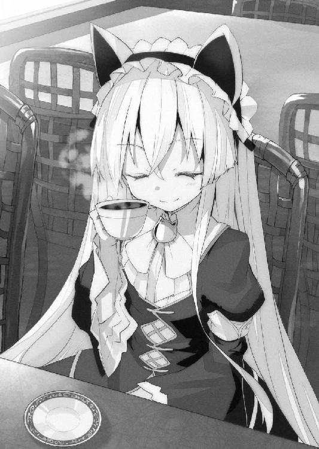
はっきり言って、柾貴は貧乏だった。
喫茶店のあと――
他のも出してあげるから、と言われてアリスに方々連れ回された。一度出してもらうと、その後が断りにくくなるものだ。
あっさりと昼休みまでが過ぎ去って、どんどん太陽が西に傾いていくのだった。
気がつけば、空の上にいた。
いや、もともと浮遊学園都市も空の上なのだが、この都市の娯楽施設のひとつにゴンドラ型の浮遊機に乗って空を周遊するというアトラクションがある。《軌道観覧車》という名称がつけられていた。
「うわっ、う、浮いてる!?」
「......カナンだって浮いてます」
「そ、そうだけどさ」
ゴンドラは全面ガラス張りで、まるでソファーだけが空中に浮いているかのようだった。
立体映像を使って、似たような体験をさせるアトラクションは学園外にもあったが、やはり本当に飛んでいると、気持ちの盛り上がり方が違う。
たいして揺れないので柾貴もアリスも立ってガラス窓から浮遊都市を眺めていた。
「......これがカナンです」
「おおっ！」
空中列車から見たときは上空から進入するせいで、雲海に浮かぶ島という感じに見えた。
しかし、このゴンドラは真横から眺めるため、まさに浮いている都市だとわかる。
傾いた陽光に照らされた浮遊学園都市――
巨大ビルの立ちならぶ街。
その土台は漏斗のような円錐状になっている。表面はブロックを組み合わせたような、四角形の積み重ねとなっていた。
街のあちこちに立体映像の広告や案内表示が連なる。
ゆるやかな曲線を描く白糸に見えるのは透明なガラスチューブで、その中を列車が走り、主要な施設の上層階を繋いでいた。
浮遊都市の周囲には淡く光る球体が衛星のように飛んでいる。これらは集光装置、監視装置、防衛装置などの機能を備えていた。
アリスが指さす。
「......カナン全体が大きいので、小さく見えるかもしれませんが、基部ブロックの一辺は百メートル以上あります」
「そんなに!?」
「......あれら、ひとつひとつに、カナンの環境を維持するための機能があって、故障時には内側に引きこんで都市地下にある工場で修理したり、交換したりできるようになっています」
「へ～、なるほどね！」
「これが、学校で教える常識......」
「え？」
「......環境維持装置のなかに、高性能な爆弾が紛れています。幻想具現者たちが反乱を起こしたときは、その爆弾がカナンを蒸発させる仕組みです」
「な、なんだって!? 本当に!?」
「......どうでしょうか？ 爆弾の存在を確かめた人はいません」
作り話、と断じることができるほど、柾貴は楽観的ではなかった。
背筋が冷たくなる。
アリスが抑揚のない声で言う。
「......楠木くんなら確かめられるかもしれません。なんせ、レベル７なのですから。管理者たちの手に余るほどの計測不能な力......それこそが、すなわち......」
「いや。ぼくは、そういうんじゃない」
「そうですね。藪をつついて蛇を出すこともないでしょう......レベル７であれば、カナンで贅沢な暮らしができますから」
「毎日、あの品のいい喫茶店でティータイムができるような？」
「はい」
柾貴は気が重たくなる。
「ぼくには、ちょっと向いてないかな。急に大きな力があるなんて言われても、なんだか自分のものって感じがしないし。そういうのと関係ないバイトをしようと思ってるんだ」
「......カナンから生活費は支給されますが？」
「いやぁ、喫茶店とかレストランとかに行くと、けっこう取られるじゃないか」
「なるほど」
「それに部屋もね。支給された部屋を立体映像で見たけど、厨房が狭いんだよ。小さな電子コンロがひとつだけ。あれじゃ、料理はできない」
「引っ越したいわけですか」
「最新のシステムキッチンなんて贅沢は言わないから、せめてコンロふたつと、まな板を使える場所と、旧型でいいからオーブンレンジが欲しいんだ」
――あと、冷蔵庫もそれなりのが必要か。
ベランダでハーブの栽培もしたい。
しかし、家賃が東京都心くらいするカナンじゃ、いくら取られるやら。１Ｒの物件でも月々十万ＪＤだとか。
高校二年になっての転校だから授業についていけるかもわからないし、長時間のバイトは難しいだろうな――
ぶつぶつと柾貴は想いをこぼした。
横で見つめていたアリスが、ついっと左手を伸ばしてくる。
ぎゅっ、と制服の右手の袖をつままれた。
「......変な人です」
「あ、ごめん。料理のこと考えると、つい」
「......レベル７の男性なんて、もっと暴力的で横柄で身勝手な人だと思ってました。自分を世界の王とでも勘違いしているような粗忽者かと」
「ぼくは自分の評価に実感がないし。たとえ実感したとしても、そんな勘違いはしないと思うよ。レベルなんてテストの成績みたいなものなんだろう？」
「......どこの愚か者ですか......そのような世迷い言を教えたのは」
「違うのかい？」
「このカナンでは、レベルが全てです......特有幻想が、その人間の価値に等しいのです」
シャーリーの言葉とは真逆だった。
力が人間の価値を決める。
そういう面が、この社会にあるのは事実かもしれないが。
「ま、待った。レベル７の人が、世界の王みたいに勘違いしてるのは嫌なんでしょ？」
「ええ、大嫌いです」
「それなのに、特有幻想が全てっていうのは、おかしくないか？」
「なんの齟齬もありません」
「どういうこと？」
柾貴の袖をつまんだまま、アリスが冷たい目をして言い放つ。
「......この世界の王は、わたしですから。頂の見えぬ無知蒙昧な者どもは、強い力を全てレベル７として扱いますが、だからといって、わたしと並び立てると勘違いした道化などは疎ましく目障りです」
もしかしたら、この女の子が一番、歪んでいるのではなかろうか――と柾貴は思った。
シャーリーが言っていたことが、ようやく理解できた気がする。レベルなんかで自分と周りに上下をつけるなんて馬鹿馬鹿しい。
ため息がこぼれた。
「きみは、どこか放っておけないところがあるな。とても賢いのに、すごく性格が曲がってる」
「......なんですって？」
それまで、柾貴の右手の袖をつまんでいた彼女の左手が、離れる。
目の前からいなくなってしまいそうな気がした。彼女の超常の力をもってしても、消えるなんてことができるのかはわからないが。
「聞いてほしい」
柾貴は右手でもって、離れていく彼女の左手を、つかんでいた。
痛くしないように。
強くは握ってないつもりだが。
「やッ!?」
アリスが、ビクッと肩を震わせた。
そして、睨まれる。
「......死にたいのですか？」
「きみのことを"放っておけない"と思ったときから、それくらいの脅しは覚悟してるよ。とにかく、話を聞いて欲しい。きみは性格が曲がってるが、判断できる賢さも持ってるはずだ」
「............話してみるといいです」
ぐいぐい、と左手を引っこめようとしていたが、離した瞬間にいなくなってしまいそうに思えて、柾貴は緩めなかった。
「きみの能力はすごいと思う。命を助けてくれたことには感謝もしている。でも、きみのことを王だとは思わない。ぼくがレベル７だからじゃないよ。その評価はなにかの間違いだろうからね」
「......意味がわからないです。わたしを上だと認めない。自分が上だとも思わない？」
「ああ、上も下もない」
「......あなたは、この学園でのレベルの価値を理解してないから、そういうことを言うのです」
「ぼくは、レベルで差別しない。この後、なにを知ろうとも。きみのように独りきりになりたくないからね」
「......ッ!?」
アリスが狼狽した表情を見せる。
視線が窓の外へ。
「......な、なにを言っているのですか？ わたしには大勢の仲間がいます」
「怖がらせて従わせてる相手は仲間とは言わないよ？」
「ううぅ......」
ようやく、彼女の心が見えた、と感じる。
悔しそうに歯噛みする様子は年相応か、むしろ幼く見えた。
目尻に涙すら浮かべて睨んできた。
「......生意気です......わたしに意見するなんて」
「ぼくも特有幻想を使って従わせるかい？ きみは大きなものを二つ失うことになるぞ」
「ふんっ......ゴンドラを壊したら一蓮托生だと思っているのですか？ 愚劣です。わたしの六六六の妖精のなかには飛行能力を持つものが、九八もいるのです」
なるほど、彼女が能力を発動してゴンドラを吹き飛ばした場合、柾貴は高度千メートルを落下。彼女は妖精とやらに乗って帰還できるというわけだ。
恐ろしい話だが、それくらいは予想の内だった。
柾貴は首を横に振る。
「そうじゃない。きみが失うのは......ぼくという友人だ」
「......え？」
ぽかん、とされた。
そういう反応を期待して言った言葉ではあるが。
「友人だよ。きみがどんな大きな力を持っていようと、この世界の王だとか妙なことを言い出そうと、ぼくたちは一緒にお茶した仲だ。その記憶は消えない。少なくとも、ぼくは、きみを友人だと思ってる。きみがどう感じてるかは知らないけどね」
アリスは冷ややかな表情をしていた。
声まで氷のよう。
「......楠木柾貴は無礼者です......おごってあげるんじゃなかったです」
「今それを持ち出す!? ま、まぁ、いつか、お返しする......よ？」
「......それで？ あなたという無礼者の自称友人の他に、もうひとつ失うものとはなんですか？」
自称友人とは、事実だが嫌な響きだった。
気を取り直して柾貴は余裕を見せる。これには自信があった。
「ふっふっふっ......ぼくの作るクレームブリュレだよ。食べないと絶対に後悔する」
「............」
胡散臭そうな目で見られた。
けっこうショックだ。
「あーいや、本当に美味しいから。本当、本当」
「......焼きプリンで、命乞いですか」
「ええっ!? いつの間に、命乞いになったんだい!? もしかして、今、処刑寸前なの？」
「当然です」
アリスが視線を投げかける。
窓の外に《軌道観覧車》の乗り降り場が見えてきた。あと少しで、このアトラクションは終わりとなる。
二人して近づいてくるゲートを眺めていた。アリスが思案している様子だったので柾貴は待ち続ける。
ようやく、彼女は口を開いた。
「......柾貴くんが......わたしを友人だと思うのなら..................」
急に下の名前で呼ばれて、ドキッとした。
最初に会ったときにも、見とれるほど綺麗だと思った女の子だ。こんなに間近で、先程までの冷たい表情ではなく、どこか熱を帯びた視線を向けられたら、頬が熱くなっても仕方ない。
しかも、勢いとはいえ、柾貴のほうから、彼女の手を掴んでしまっている。
「お、思うなら......？」
彼女は思案して、ため息をついた。
「............なんでもないです。わたしを変な目で見ないでください。気持ち悪いです」
「えっ!? べつに変な目で見てないって」
「......いつまで手を握っているんですか？」
「あ、ごめん」
柾貴はあわてて、彼女の左手を放した。
すっかり馴染んでいた感触に、未練がないわけではなかったが。
アリスは自由になった手を見つめる。
相変わらず、感情の読めない顔で。
「......わたしに告白をした分をわきまえぬ愚か者たちには、例外なく《妖精進撃》を発動させてきた、と警告しておきます」
「せめて、普通に断ろうよ」
「......だから......手を握った人なんて、初めてです」
ぼそぼそ、と彼女が珍しく聞き取れないほど小さな声でつぶやいた。
「え？ なに？」
「......こちらのことです......あなたは、変な人です。わたしのことを友人だと言ったのは、柾貴くんで三人目です」
「えっ、そうなのかい？」
「意外そうですね」
「うん。ぼくが初めてかと思った」
「............二人目も同じことを言いました。失礼です。万死に値します」
「ははは」
あまり表情の変わらない彼女の心の動きが、ようやく掴めるようになってきた。
相手も緊張が解けてきたせいか。
「......柾貴くんは、バイトを探しているそうですね？」
不意に話が変わった。
もしかしたら、彼女のなかでは繋がっているのかもしれないが。
柾貴はうなずく。
「まず授業についていくのが先だけどね。大丈夫そうなら」
「......世俗にまみれた話は、あまり趣味ではないのですけれども............わたしは、とてもいい仕事を知っています......授業に差し障りなく、内申評価は高くなり、破格の報酬が得られるでしょう」
願ってもない話だった。探している条件に、すごく近い。
「それ、なにか必要な資格とかあるんじゃないのか？」
「わたしの紹介が必要です」
「なるほど」
「......空席は一名のみ」
「ッ!?」
そう聞くと、判断力が鈍るものだ。
報酬が高いならば大変な労働であろうと思うが、それくらいはかまわない。
さらに、アリスの言葉が背中を押す。
「......気に入らなければ、その日のうちに辞めることもできます」
「受けておいて、すぐに放り出す気はないけど......まさか、なにか不正なことをするんじゃないだろうね？」
「不正は行いません。むしろ、大勢に感謝されるお仕事ですから」
「それはいいな。ぜひ紹介してもらえないか？」
アリスがうなずいた。
「......左手を」
差し出されたアリスの左手に、合わせるように柾貴は左手を伸ばした。
そっと手が触れられる。
やわらかい。
ひんやりとした冷たい手の感触。
そのまま、進まない。
彼女は躊躇するような迷っているような様子だった。視線は遠くを見つめている。
「んぅ......」
「なにか、問題があったかい？」
「問題なんて、ありません。ありえません。平気です。絶対に」
「そうかい？」
「......これは......お仕事をするための、契約です。ささやかな決まり事です。わたしの言葉を真似て、言ってください」
「わかった」
アリスが流暢に異国の言葉をそらんじる。
「From now on, a contract will be begun. I signed a contract with you. We will share the results...」
彼女の母国の言葉だった。
柾貴は拙いながらも、音を追いかけていく。
ゴンドラの中で風が巻いた。
彼女の金色の髪が、ふわりと浮き上がる。スカートまでが持ち上がってきた。目の前に立つ柾貴の足に、ばさばさと当たる。
二人の左手を中心に、まばゆい輝きが広がった。
立体映像なのか。
そうは思えないほど神秘的な輝き。
光の円が幾重にも現れ、大きく広がっていく。環の線と線の間には、異国の文字が浮かびあがった。
ゴンドラの外にまで広がっていく。
環端末は純然たる科学の産物のはずなのに――これは、まるで魔法陣だ。
「We share responsibility. We swear, and that help each other, each believing that...」
アリスの言葉を柾貴はなぞる。
魔法陣が、ひときわ輝きを増した。
「We are "Help cat"...」
キィィィン......と耳の奥に刺さるような高い音があがる。
やがて、光も音もなくなった。
アリスが左腕の環端末に視線を落とす。
「......青ですね」
彼女の腕輪に填っている水晶が、綺麗な青色になっていた。
「それ、朝は紫色じゃなかった？」
「ええ......よく覚えていますね......今、契約したから、変わりました」
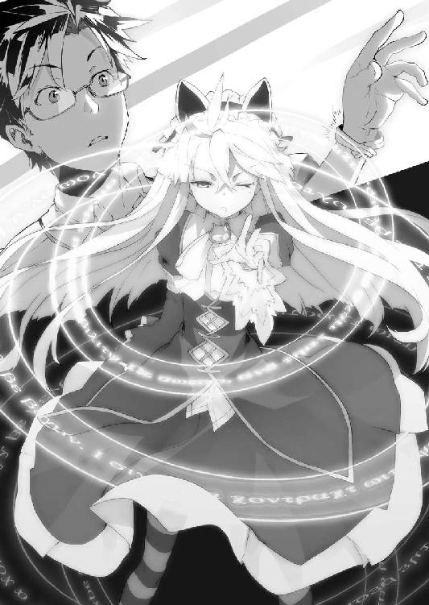
「契約？」
柾貴は自分の環端末を確かめる。
無骨な銀色の腕輪のくぼみに、アリスのと同じ青色の水晶が填っていた。
「これって、なんだい？」
「......規律委員会のパートナー契約の証です」
「えっ!? もしかして、さっき言ってた仕事って......」
「......緊急招集では授業が免除され、希望すれば補講を受けることができ、内申では高く評価され、所属するだけでも高額の報酬が支払われます。特有幻想を悪用する違反者がいないか見回り、発見すれば逮捕するのが仕事ですから、大勢に感謝されます......柾貴くんの希望どおりです」
「ちょっ!? 待ってよ、クロックハートさん。ぼくは特有幻想を使わない仕事がいいって言ったんだけど!?」
アリスが黒い笑みを浮かべた。
「......使わなくてもかまいません。必要なのは、規則違反者を逮捕することであって、どういう手段を取るかは自由ですから」
「あ、ぐっ」
してやったり、という笑みも、すこしの間だけだった。
すぐに表情が失われる。
「......気に入らなければ、この場で破棄もできます......"パートナー解消"と宣言するだけです」
なんでもないことのように言うが、ここで拒絶したら、彼女は傷つくように思えた。
柾貴は少し考えてから。
「どういうつもりで誘ってくれたのかは、わからないけど......クロックハートさんの言うとおり。規律委員会の仕事は、ぼくの希望に近いみたいだ。ぼくの特有幻想は役に立たないと思うけど、やれるだけやってみるよ」
「そう......そうですか......パートナーにしたからには仕事を教えます。でも明日から」
「ん？ 今日は？」
「......疲れたので帰ります。シャワーを浴びたいので......」
彼女の張り詰めていた雰囲気が消えていた。
安堵したのだろうか。
それだけではない感じがする。
疲れている？
むしろ、落ちこんでいるのか？
表情に出さない子だから、わかりにくい。
天井のスピーカーから、到着を予告するアナウンスが流れてきた。《軌道観覧車》のゴンドラが、チューブ状の乗り降り場へと入っていく。
ゆっくりと停止した。
すぐにドアが開く。
次も来るから、そうぐずぐずしてはいられない。
元気のいい案内役の女性にうながされ、柾貴とアリスはゴンドラを降りた。
アリスが娯楽施設の外へと向かう。背中を向けたまま。
「......これで、さようなら、ですね」
「え？」
もう帰るという意味かと思ったが、そうではなかった。
彼女は静かな声で言う。
「......二人目の友人の話です。あちらから離れていってしまい......さっき、わたしが別のパートナーと契約しましたから」
「別の？ それって、ぼくのこと？」
「はい」
なにか、重大なことに巻きこまれた気がする。
柾貴が契約したことで、彼女と友達の関係が終わってしまったということか。
それは聞き捨てならない。
「離れていったって、どういうことだい？」
「......わたしは、悪くありません」
「いや、きみが悪いとは言ってないけど」
性格に難があるのは、よくわかったけれども、事情を聞かずに決めつけるのはよくない。
「......今朝の事件で、被害が拡大したのは、わたしが悪いと言うものだから」
「そんな！ あれで悪いのは、ぼくを襲った男だろ!?」
「......腹立たしいので、ちょっと規律委員会本部で特有幻想を具現化させたら、本気で怒り出して」
「そ、それは......」
「あちらから離れていったので......わたしは悪くありません」
もうすこし具体的な経緯がわからないと判断できないが、今の話を聞いたかぎりだと、だいぶ彼女にも問題がありそうだ。
「もうすこし詳しく教えてくれないか？」
「......お断りです。思い出すのも忌々しいです」
とりつく島もない、という感じだった。
人当たりがいいとはお世辞にも言えない。
こんな性格の少女と友達になる人物に――柾貴は一人だけ心当たりがあった。
確かめておかなければならない。
「じゃあ、その二人目の友人の名前を教えてくれないか？」
「どうしてです？」
「ダメならいい」
すこし考えてから、アリスは振り向かないまま、名前を口にした。
「......桜坂シャーリーです」
幕間 intermission
薄暗い小さな部屋だった。
照明は天井が、ぼんやりと光っているだけ。窓はない。
机も椅子もなく、中央にベッドがあった。
そこにベルトで拘束された男が一人。手足も胴体も細くて針金のような男が、寝かされていた。手首には手枷のような分厚い金属の板が填められている。
部屋に一条の光が差しこむ。
ドアが開いて、白衣を羽織った男が入ってきた。
「やあ......」
「ふぅー......ふぅー......ふぅー......」
「元気かね？ いや、元気には見えないが......生きているだけでも君は幸運だな。いや、不運だろうか」
針金男は首だけを起こして、血走った目を向ける。
来訪者は、ぶつぶつと独り言のようにしゃべっていた。
「ああ、安心したまえ。監視カメラも録音装置も切ってある」
来訪者の口元が歪んだ。
針金男はなにか言おうとして口を開いたが、荒い呼吸と言葉にならぬ声だけが漏れた。
「ふぅー......うぁ......ああぁ......」
「しゃべれないのか？」
「うあ......」
来訪者が近づいていくと、針金男が怯えたような表情を見せた。もう、叫びながら柾貴を追い回していたときの面影はない。
「調整の結果は良好のようだな」
「ううぅ......」
「私のことを覚えていないかね？ まぁ、それも効果のうちだから当然だが」
拘束された針金男の横に立った。
「あ......ぐ......」
来訪者が針金男の耳元に唇を寄せ――
「それでも!! レベル７には遠く及ばなかった!!」
叫んだ。
耳元で怒鳴られた針金男が表情を歪める。
「うぎっ!?」
「また失敗か......悲しい事実だな。絶望にうちひしがれ、心が折れそうになる」
「ううぅ......」
「しかし、君の献身を無駄にはしない。私には大いなる目的があるのだ。君の尊い犠牲が、学園の未来を救うまで、諦めはしないと約束しよう。研究は最終段階を迎えつつある」
来訪者は白衣のポケットから太い注射器を取り出した。針金男の手に押し当てる。
小さな駆動音。
針が自動的に血管を探し出し、痛みどころか感触すら与えずシリンダーと連結させ、事前のプログラムどおりに作動する。
やがて、注射器を外して、来訪者はベッドを離れた。
「ゆっくり休みたまえ......おやすみ、子羊よ」
第３章 アリスの部屋
柾貴は一人で第十三校舎に戻った。
環端末のナビゲーションのおかげで短時間で戻れたものの、もう本日最後の授業の時間になっている。
すっかり遅くなってしまった、と足早に教室へ向かう。
ようやく二年Ａ組に辿り着いた。
本来は朝の八時には、ここで挨拶をしているはずだったのに、もう何時間も過ぎている。
長かった。
柾貴は今朝からのことを思い出し、ため息をついた。
早朝、駅までシャーリーに迎えに来てもらい、校舎を訪れた。エレベーター前で威昌沼という男に絡まれて、仕方なく階段を上ることに。
途中で、緊急事態の知らせがあって、シャーリーと別れた。
その後が問題だった。柾貴は針金男に襲われてしまう。あれはヤバかった。
追い詰められたところで、アリスの特有幻想たちが降ってきて、逮捕劇に巻きこまれた形だが、結果として助けられた。
規律委員支援隊の氷梨に手当てしてもらって、先生に挨拶し、教室へ向かったが......
再会したアリスによって、校舎の外へと連れ出されてしまった。もう予定もなにもあったもんじゃない。
思い返してみても、おかしい。教室から離れてる。
しかし、素晴らしい紅茶を味わえたのは幸運だった。あれはとても美味しかった。
それはともかく、まさか教室で挨拶をする前に委員会に入ることになるとは！ 環端末で確かめたら、まだ《予備登録》という状態だったが。
アリスは早引きして帰ってしまった。そのような経緯で、柾貴はようやく教室へと辿り着いた、と――
柾貴はドアの前で深呼吸した。
中の声は、廊下に聞こえてこない。ずいぶん静かだ。
きっと授業中なのだろう、とドアをノックして、ゆっくり開いた。
誰もいない。
「あれ？」
教室にある大型モニターには『体育：12Ｂ体育館』と表示が出ていた。
「ぐっ......なんだか、運の悪い日だなぁ......ぼくは転入の挨拶をしたいだけなのに......」
体操着など持ってきていないので、着替えることもなく体育館へと向かう。六十階もある校舎だが、環端末のおかげで迷うことはなかった。
第十三校舎、十二階層、12Ｂ体育館――
大きな鉄扉を押し開いた。
甲高い掛け声と、バスケットボールが床を叩くリズミカルな音が聞こえる。
ダムダムダム......
「てやぁぁぁああああ!!」
オレンジ色のボールを片手で支えて、タンッと跳んだのは、体操服姿のシャーリーだった。頭の後ろでふたつに結った明るい色の髪が、残光のように尾を引く。
まるで周りがスローモーションであるかのように、一人だけ別次元の速さと高さで、手にしたバスケットボールをリングに叩きこんだ。
いわゆる、スラムダンク。
「おお......」
柾貴は驚きと同時に、懐かしさを覚える。
七年前にも同じような姿を見ていた。あのときは、彼女の髪は短くて、リングは子ども用の高さだったけれども。
よく一対一で勝負したものだ。
「ん？」
ゴールを決めたシャーリーがコートのなかから走ってくる。
「柾貴～～～!!」
「えっ......待った......それは、ちょっと......」
スプリント競技かと思うような速さでつっこんできて、アメフトばりのタックルが来た。
後ろは鉄の扉なので、さすがに避けるわけにもいかずに。
受け止める。
予想外に軽くてやわらかい感触だった。
「柾貴！」
「や、やあ......」
「もぉ、どこ行ってたの!? 先生に聞いても"知らない"としか言わないし。あれから、なにかあったの!?」
返事をする前に、抱きついてきた彼女を押し返す。
体操服姿だと、制服以上に密着感があって、とんでもなかった。
「シャーリー......もう高校生なんだから、よくよく考えてくれ......」
「あ、ごめんね」
「周りの目ってものが......」
女子たちが、「あれ誰なの!?」「まさかカレシ!?」と色めき立っている。男子たちは驚いてる様子だった。初日の挨拶前からとても気まずい。
シャーリーが体を離して、ペロリと舌を出す。
「にははっ、そうだね！ 汗かいてるもんね」
「いや、違う。そういうことじゃない」
「あれ？」
女子高生にもなったというのに、この七年でデリカシーのほうは成長しなかったらしい。
シャーリーがコートを指さす。
「柾貴、ひさしぶりに勝負しようよ！ すっごい楽しみにしてたの。再会できたら、やりたいと思ってることが、いっぱいあるんだよ!?」
「ああ、ぼくも楽しみなんだけど......」
つかつか、と女の子が近づいてくる。周りは白シャツに短パンなのに、なぜか一人だけ赤色のジャージを着ていた。幅広のヘアバンドで髪を後ろに流し、おでこが出ている。背丈からしても、顔つきからしても子どもに見えた。
――小学生だろうか？
しかし、ここは高校のはず。飛び級か？ あるいは、幼い容姿なだけで高校生かもしれない。
「こら！ 桜坂、試合中だぞ！」
「あ、すみません」
「そして、お前ッ!!」
小学生にしか見えないけど、妙に偉そうな女の子が指さしたのは、柾貴だった。
「どこのクラスの者だ!?」
「ぼくは、今日、転校してきた――」
「ああ、楠木柾貴か！ 転校早々、アタシの授業に遅れてくるとは、いい度胸だ！」
「ええっ!? まさか......先生なんですか!?」
「......ほほう？ どうして、そんなに意外そうな顔をする？」
女の子――ではなく、どうやら、体育教師の目つきが剣呑なものになった。
しかし、根が正直な柾貴は、つい余計なことを口走ってしまう。
「てっきり小学生かと」
「よし、わかった。まずクラスの連中に転入の挨拶をしろ。それからスクワット百回だ！」
「そんな......」
とはいえ、遅刻したのは事実だから百回くらいなら、と諦める。
三十人ほどのクラスメイトたちが集合した。
こんな形で挨拶するとは予想外だ。
「楠木柾貴です。よろしくお願いします......えっと、シャ......桜坂さんとは、幼馴染みです」
女子から「それだけの関係なんですか!?」なんて突っこみを受けたが......小さい先生が大きな声をあげ、質問タイムを容赦なく打ち切る。
「よーし、授業再開！ おら、次のチームはコートに入れ！ 楠木、体操服はどうした？」
「体育があると知らなかったので......」
「聞いてなかったのか？」
「はい」
「チッ、アタシの授業があることを伝えてないとか、ナメやがって。あとで梁谷のヤツ、シメちゃる！ そこで見学してろ！」
「あ、はい」
どうやら、スクワット百回はなしになったようだ。言葉遣いは厳しいけれど、もしかしたら優しい先生なのかもしれない。梁谷先生には同情を禁じ得ないが......
言われたとおり、体育館の隅で見学する。
試合に出てない女子たちが興味津々という顔で寄ってきた。
「ねえ、楠木くん」
「ん？」
「本当に桜坂さんと、なんともない関係？」
「......まぁ、ぼくも驚いたけど......中身が子どもなだけじゃないかな？」
女の子たちが、ひそひそ声で話す。
「たしかにちょっと子どもっぽいとこあるかも？」「マズイって聞こえちゃうよ」「でも、いくら幼馴染みでも、アレはないんじゃ？」「そうだよね、怪しいよね～？」
キャアキャアとやってるところに、強面な連中が来た。
男子生徒が三名ほど。
「よお、転校生」
「きみたちは......？」
「ちょっと話があるから来いよ。女子とは話せて、俺らとは話せないとか言わないよな」
威圧感のある彼らに、周りにいた女の子たちが距離を置く。
嫌な雰囲気だ。
「行くのはいいけど......さすがに、遅れてきて無断でいなくなるってのは......」
「気にすんなよ、もう終わるだろ」
言ってるうちに終業のチャイムが鳴った。
先生の「はーい、終了ぉ!!」という声が聞こえてくる。
断る理由はなくなったようだ。シャーリーに話があったのだが......後にしてくれ、と言って通じる手合いではないだろう。
仕方なく、柾貴は彼らに付いていくことにした。
こんなときは、校舎裏というのが定番だろうが、この校舎は六十階建てだ。ぞろぞろとエレベーターに乗るのは間が抜けている。
結局、連れてこられたのは、十二階から少し上った階段の踊り場だった。
賑わっているエレベーター前と違って、こちらは閑散としている。どこにでも人目の届かない場所というのはあるものだ。
階段の途中で待っていたのは、威昌沼だった。
憮然とした顔で見下ろしてくる。
「お前がＡ組とはな......」
「ぼくも、何かの間違いじゃないかと思うんだけどね」
周りを男子四人に囲まれる形となった。
威昌沼が左腕を上げる。蛇のレリーフの入った腕輪をしていた。水晶は填っていない。
ウィンドウが表示された。
なんでもないジャンケンゲームを立ち上げ、数回、勝ったり負けたりする。
どういう意味があるのか？
やがて、ザーーーっとノイズのような音が静かに流れ出す。
威昌沼が獣のような笑みを浮かべた。
「くく......これで、録画も録音も効かねえからよ」
「どういうことだい？」
「環端末には、生徒の動向を記録する機能があるんだ。もう無効にしたけどな」
「それって......もしかして規則違反だったりしないのかな？」
「黙れよ。下らない規則のことより自分の心配してろ」
「なにを心配すればいいんだか......」
「余裕ぶりやがって。この場で俺らにボコられるか、これから俺らの言うこと聞くか。選べよ」
「どちらも嬉しくないかな」
柾貴を取り囲んでいる男たちが、拳を握る。
「おい、転校生。言葉だけの脅しじゃねえぞ？ 俺の言うことを素直に聞いとけ。今なら、腹に一発で済ませてやるからよ」
「断る」
「おい、お前、状況がわかってんのか？ 通報もブロックしてんだ。助けなんか来ねえぞ!? 今なら一発だけで済ませてやるって言ってんだよ！」
威昌沼が恫喝の声をあげた。
柾貴はため息をつく。
「そういう脅しは、一度、屈したら、どこまでも酷いことを要求される。しかも、その様子だと、ぼくが初めてというわけでもなさそうだ......ここは、引けないね」
「そうかよ。んじゃ、明日から学校じゃなく、病院に通いやがれ!!」
威昌沼が叫ぶ。
背後にいた男が両手を伸ばしてきて、柾貴は羽交い締めにされた。
「むっ......ケンカも一人でやれないのか？」
「ハッ！ こいつは制裁だ。桜坂に馴れ馴れしくした罰だ！」
威昌沼が拳を伸ばしてくる。
どう考えても、一方的に殴られてやる理由はなかった。
上半身を羽交い締めにされていても、足の自由は奪われていない。なんとも中途半端なことだ。腕より足のほうが長いというのに。
向かってきた威昌沼に、右足の蹴りを放った。腰の入った蹴りでなくとも、膝を突き出してから、膝下をスイングすることで威力のある蹴りになる。
相手の脇腹に、爪先が届いた。
めりこむ。
「ガッ!?」
威昌沼がもんどりうって崩れた。
戻す右足のカカトで、羽交い締めにしている男の爪先を踏みつけた。足の甲だと、さして痛くないが、足の指は人体の弱点のひとつだ。
背後から、「ギャッ!?」と悲鳴があがる。
相手の力が緩んだ瞬間に、上体を大きく振って、羽交い締めから逃れた。
今さらになって、左右の男たちが拳を構える。べつに恨みはないが、やるというのなら躊躇わない。
右の男の鼻にパンチを浴びせ、反転して、左の男の膝裏にローキックを当てた。
うめき声をあげ、ひるむ。
彼らは後ずさりして距離を取った。
柾貴は右手に残った感触を払うように、手首を振る。
「もう少しケンカ慣れしてるのかと思ったけど」
「な、なん......ッ!? なんだ、お前は!?」
「ぼくはケンカなんて嫌いなんだけど、シャーリーと一緒にいると荒事が多いんだよ。彼女は、横暴なヤツがいると相手の強さに関係なく突っこんでいくからさ......。あと、なぜか目の敵にされることが多くてね」
おかげで、こうした事態への対処方法が自然と身についていた。
そして、シャーリーがいなくなったあとも修練は積んだ。彼女の"また会えるよ"という言葉を信じていたから。
「再会したら必要になるかもしれない、とは思っていたけど......こんなに早く使うことになるとは」
うずくまっていた威昌沼が、脇腹を押さえて立ちあがる。
「ふ、ふざけ......やがって！ ナメてんじゃねえぞ!!」
「まだやるのか？」
柾貴の経験からすると、彼らは威勢がいいだけで、格闘技の訓練を受けてもいないし、ケンカの場数も踏んでいない。強い理由が見当たらなかった。
威昌沼が右手を広げて突き出す。
「ブッ殺すッ!!」
周りの男たちが顔色を変えた。
「ちょっ!? ヤバイッスよ、威昌沼サン!?」「ソレやっちゃったら、いくらノイズアプリでも証拠が残っちまうし！」「使ったら、本当に殺しちまうよ......ッ!!」
怯えた声をあげつつ、じわじわと距離を取る。臆する連中に対して、威昌沼が怒鳴りつける。
「うるせえ！ こんだけバカにされて、黙ってられるか！」
柾貴は顔をしかめる。
こういう手合いに理屈が通じないのは、わかっているが......
「殴られそうになって反撃したら、バカにしたことになるのか。身勝手な話だな」
「その態度がムカつくんだよ！ お前の特有幻想がどんなもんか知らねえけど、使ってみせろ！ 覚醒したばかりのやつが、俺に勝てるわけねえけどな！」
「む......」
これは、よくない。
彼はＡ組にいる。
もしも、アリスに近い能力を持っているとしたら、ただでは済まないだろう。
柾貴の特有幻想は戦いに使えるようなものではない。
血走った目で、威昌沼が絶叫する。
「死ィィィねッ!!」
掌からバスケットボールくらいの大きさの火球が現れた。
飛んでくる。
柾貴の顔面に迫った。
「あぶなあああぁぁぁいッ!!」
階段を駆け上がってきた人物が、横合いから飛び出してきて、その右拳を――火球に叩きつけた！
白い光に包まれた拳が、真っ赤に燃える火の玉を砕き散らす。
同時に、その拳から白い閃光が迸った。まばゆい光の矢となって、階段の壁を貫く。
轟音。
派手にコンクリートの破片が飛び散った。衝撃波が広がり、廊下のほうでガラスが割れる音があがる。
威昌沼の取り巻きの三人が悲鳴をあげ、這うように逃げていく。
外壁に穴が開いていた。
火球を砕いた右拳からは、うっすらと煙があがっている。
唐突に現れた人物が明るい髪をかきあげた。凜とした瞳で威昌沼を睨みつける。
背が高いわけでもないのに、その堂々と立つ姿は大きなものに見えた。
形のよい唇を開き、鋭い声をあげる。
「あんた、なにやってんの!?」
「あ、ぐ......さ、桜坂......さん......」
威昌沼がうめいた。
来てくれたのは、シャーリーだった。
火球の直撃をまぬがれて、柾貴は冷や汗をぬぐう。
「助かったよ」
「だいじょうぶなの、柾貴!?」
「ああ、おかげさまで、かすり傷ひとつない」
朝の騒動で肩や脚には治療テープが貼ってあるが、この場では無傷だった。
よかった、とシャーリーが安堵する。
いくらか怒気を鎮めて。
「んで？ どういうことなの、威昌沼？ ちゃんと説明してもらうからね！」
「いや......これは......そいつが、俺たちのことをバカにするから......」
「そんなこと柾貴はしないと思うけど。まぁ、悪く言われたんだとして。だから、本気で死なせるつもりだったわけ？」
ジロリと睨んだ。
威昌沼が乾いた笑い声をあげる。
「は、はは......そいつだってＡ組なんだから、あれくらいで死ぬわけないだろ？ なあ、そうだよな？ だろ!?」
先程までとは真逆の、懇願するような様子だった。
正直、シャーリーが来てくれなかったら、どうなっていたかわからないけれど......
「ぼくは特有幻想のことは、よくわからない。そう言うなら、そうなのかもしれない」
知識がないのは事実だった。
もしかしたら、あの火球は幻影のようなもので無害だったのかもしれない。二発目を撃ってもらって確かめる気にはならないが。
シャーリーがうなずく。
「じゃあ、今回だけは見逃しとくわ。だけど、次に同じようなことしたら、絶対に容赦しないから！ あんたが特有幻想を使うっていうなら、あたしが相手になってあげる！」
「かんべんしてくれよ、桜坂さん......レベル６の俺が、レベル７の君にかなうわけないじゃないか」
フキーッ!! とシャーリーが牙をむく。
「だから、あんたはダメだっての！ レベルが上とか下とかじゃないの！ 行いが正しいか間違ってるかって話なの！」
「ひっ!?」
彼女の迫力に押されて、威昌沼が後ずさる。すっかり顔が青ざめていた。
「次に、こんなことがあったら、規律委員として逮捕させてもらうから――ん？」
突き出した左手の環端末を見て、シャーリーが首をかしげた。
なにか気になることがあったのか。
シャーリーの言葉に、威昌沼が首をがくがくと縦に振る。
「わ、わかってる......ちょっと冗談が過ぎたよ。こんな悪ふざけは、もうしない......それじゃあ、また教室でな、桜坂さん！」
彼は言いながら、転げる勢いで去っていった。
唇を尖らせて見送りつつ、その姿が見えなくなると、シャーリーは環端末を見つめる。
「なくなってる......？」
「どうかしたのかい、シャーリー？」
「う、うん。水晶が......」
階段を上ってくる足音がした。
「ずいぶん、派手にやりやがったな、おい」
しかめっ面してやってきたのは、体育の授業を教えていた小学生みたいな先生だった。
「あ、みっちゃん！」
「緑川先生って呼べって言ってんだろ。またお前か、桜坂」
「にははっ」
「なにがあった？ 環端末の記録を提出しろ」
「あ、はい！」
シャーリーが左腕を振って、環端末のウィンドウを開いた。
待っている緑川先生に、柾貴は説明する。
「えっと、桜坂さんは、ぼくを助けようとして......」
「生徒の証言なんかいらん。自分に都合よく話すか、誰かをかばうか、どっちにしろ信用できねぇ。アタシは環端末の記録を元に判断する」
「そ、そうですか」
なんにしても、シャーリーは悪いことをしていない。
柾貴は話を引っこめた。
逆に、緑川先生のほうが尋ねてくる。
「そういや、楠木。さっき規律委員会への登録申請が来たが、なんかの手違いか？」
「え？」
緑川先生が、めんどくさそうに、くしゃくしゃと頭をかいた。
「一応、説明しとくと、アタシは規律委員会の顧問もやってんだよ。だるいけどな」
「あ、なるほど」
「申請は間違いか？ お前、転校初日だろ？」
「できれば何かお手伝いしたい、と思ってます」
先生が目をすがめる。
シャーリーが作業中のウィンドウから顔をあげた。まるで餌をもらった仔猫みたいな顔をして。
「ほんと!? 柾貴も規律委員会に入るの!? やった！ ねえ、ねえ、あたしとパートナーになろうよ！」
「えっ？」
「柾貴が来るって知ったときから、一緒にやりたいって思ってたんだ。あたしたち、子どものときから相性バッチリだったよね!?」
「まぁ、そうだったと思う......」
シャーリーが相手に突撃して、柾貴がフォローする形で、うまくやれていた。
今にして思えば、シャーリーが無意識のうちに特有幻想を発動していたから強かったのかもしれないが。
笑顔だった彼女が、「あっ」と表情を曇らせる。
「ととと......柾貴とは組みたいんだけど、あたしってば、もうパートナーいるんだよね」
柾貴の聞きたいこととは、まさにそれだった。
アリスは"あちらから離れていった"と言っていた。
しかし、シャーリーが自ら友達と縁を切るような性格だとは、どうしても信じられない。確かめたいと思っていた。
「そのパートナーとは、うまくやれてないのか？」
「にははっ、今、ちょっとケンカしちゃってるけど、すぐ仲直りするよ。なんか放っておけない子なんだ！」
「放っておけない？ シャーリーのほうから離れていったりは？」
「しないよぉ。一年のときに組んでから、もう三十回くらいケンカして、何度もパートナー解消してるけど、やっぱり、お互いに必要としてると思うんだよね」
はにかむような表情が、すっと陰る。
「......あ、でも、なんでだろう？ 水晶がなくなっちゃってんだけど......故障？」
シャーリーが戸惑った様子で環端末を見つめた。
よかった――と柾貴は思う。
「やっぱり、シャーリーはシャーリーだな。きみは変わってない。友達を捨てて離れていくようなやつじゃない」
「にゃ？ なになに？ どういうこと？」
「今の話を聞いて、ようやく状況が見えてきたよ」
つまり――
「ぐだぐだ話してんじゃねえええ！」
眉間にシワを寄せた緑川先生が、シャーリーの後ろに近づいてきた。
背後から両手で、シャーリーの胸をわしづかみにする！
たゆゆんっ。
「ぎにゃあ!?」
「桜坂、さっさと壁に穴を開けやがった事情を説明しろ！ 環端末の記録を出せ！」
「んにぁうぅ、わ、わかりましたぁ、みっちゃん先生！ だから、胸はダメですぅぅぅ」
「ムダにでかくしやがって！ 目障りなんだよ、おまえの前に立つと顔が見えないんだよ。ふざっけんな！」
「にゃふぅ、なんで怒られてんのぉ？」
「出せ！ 出せ！」
「わぁはぁぁぁいぃぃぃ!?」
目の前で、たわわな胸がぐにぐにと形を変えられる。
小さな手にいじられて、持ちあげられたり、寄せられたり、しぼられたり。
体操服だけに、制服のブラウス以上に、ふくらみの形がわかってしまう。
こいつは、目の毒だ。
柾貴は理性を総動員して、視線を引きはがした。壁に開いた穴から外を見る。十二階くらいの高さだと、隣のビルで視界が遮られて見晴らしはよくなかった。
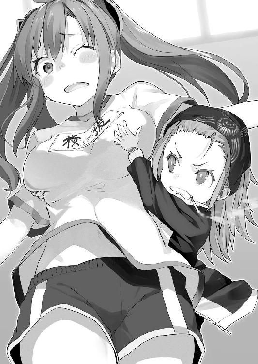
なにを言おうとしていたんだったか？
そう、シャーリーのことだ。
シャーリーの――
「ふぁんッ！ んはあッ！ せ、先生、ダメ......ダメです、おっぱい、つぶれちゃうよぉ」
おっぱい。
違う！
そうじゃない！
柾貴は頭を左右に振った。
はぅんはぅん、というシャーリーの声を意識から追い出す。
話を整理しよう――
桜坂シャーリーはレベル７の幻想具現者で、規律委員会のメンバーだ。
委員会には二人一組という制度がある。シャーリーのパートナーは、アリス・クロックハートだった。こちらも、レベル７。
チーム名は《お助け猫》といったらしい。
朝、柾貴を襲ってきた針金男を追いこんだのは、アリス。そして、捕まえたのは、シャーリーだ。
あの虚空に抜けていく閃光を放ったのは、彼女だった。威昌沼の火球を砕いたとき、壁に穴を開けた特有幻想と同じだ。
「これだけなら、話はシンプルだったんだけどなぁ......」
「はぁ......はぁ......はぁ......」
ぐったりと、シャーリーが床にへたりこんでいた。くてっ、と脱力している。
目尻に涙をためて、ウィンドウを操作した。
「はぁ......はぁ......はい、送りましたぁ」
「ケッ、三秒でやれっての」
どうやら、シャーリーと先生のやり取りは一段落したらしい。
柾貴は、まだ息を荒げている彼女に確かめる。
「シャーリーは、クロックハートさんとケンカしちゃってるんだよな？」
「はぁ......うん？ そうだけど......あれ？ あたし、アリスの名前、言ったっけ？」
「いや、いろいろと事情があって......」
「そうなんだ？ あたしにもわかるように教えてほしいな」
「難題だな。えっと......まず、ぼくは......どうやら、レベル７らしい」
「へえ？ そうなんだ。さすが柾貴だね。そんで？」
アリスに比べると、とても淡泊な反応だった。本当に彼女はレベルなんて数字としか思っていないのだろう。
「そのレベル７だとわかったせいで、クロックハートさんが声をかけてきてね」
先生の前でもあるので、授業中に校舎から出て喫茶店に行ったことや、軌道観覧車に乗ったことは端折る。
「とにかく、ぼくはクロックハートさんとパートナーの契約をしたんだ」
「ふえ？」
シャーリーが小首をかしげる。
理解できない、という顔をしていた。
「すまない。彼女とシャーリーが組んでいたなんて、そのときは気付いてなかったんだ。というか、あれが契約だったことも知らなかったんだけど......」
あの覇気に満ちたシャーリーが、まるで心ここにあらず。
呆然。
声は届いているだろうか？
「............」
「大丈夫か？」
「そんな......だから、水晶が!?」
シャーリーが左腕を持ちあげて、環端末を見る。
薔薇のレリーフのある腕輪。そこに填っていた紫色の水晶が、今は空洞になっていた。
緑川先生が、ウィンドウに表示された記録をチェックする。
「お前ら、朝の件でケンカして"パートナー解消"してたじゃんか」
「でも、今までは、水晶、消えなかったのに！」
「そりゃ、桜坂もクロックハートも別のパートナーと契約しなかったからな。"解消"を宣言しても《解消可能》な状態になるだけで、正式な解消手続きをするか、別のパートナーと契約しないと、完全には切れねえんだよ」
「え......じゃあ......あたしと、アリス......本当にパートナー解消になっちゃったの？」
「クロックハートが楠木と契約したみたいだからな――おい、桜坂のデータ、なんも記録されてねえぞ？ 音も映像も」
先生の疑問など無視して、シャーリーが悲鳴をあげる。
「そんなあああぁぁぁ――――――!!」
「シャーリー、落ち着くんだ」
「ううぅ......アリスとは、パートナー解消されちゃって......しかも、柾貴が、アリスのパートナーになっちゃって......」
「すまない。もっと調べてから話を受けるべきだった」
「なんか、すごく、うわあああああ!! って気持ちだよぉ!!」
どうやら、いろいろな感情が渦巻いているらしい。シャーリーが頭をかかえて床に転がる。子どもみたいに。
「うわああああああああ――ん!!」
「シャーリー、聞いてくれ。クロックハートさんと、よく話し合ってみよう」
「ふえ？」
「ぼくの聞いた話からすると、お互いに誤解があるように思う。まず会ってみるべきだ。長くパートナーとしてやってきたんだろ？ 大切なのは信じる気持ちだよ」
「う、うん......そうだよね！」
床に転がっていたシャーリーが起きあがろうとする。
そのお尻を緑川先生が踏んづけた。
「ふっとぷれす！」
「ぎにゃあぁ!?」
ぐにぐに、と緑川先生の小さい足が、シャーリーのお尻を押し潰す。一応、靴を脱いでいるところが大人だ。
「お前、なんも記録されてないじゃねえか！ 環端末のデータ、間違ってねえか!?」
「え？ あたし、さっきの三分間くらいの、ちゃんと送りましたよ」
「ああん？ どういうことだ？」
「や～、お尻、踏まないでくださいよ、みっちゃん先生ぇ」
そういえば――と柾貴は思い出す。
「威昌沼ってのが、環端末を使って記録を残さないようにする、とか言ってましたね」
「あ？ なんだそりゃ？」
「いや、ぼくも、よくわからないですけど......」
「威昌沼か......ちょっと話を聞いとくわ。お前ら、もう行っていいぞ。さっさと帰れ。なんか用事があるんだろ？」
「あ、はい！」
勢いよくシャーリーが起きあがる。
足を乗せていた緑川先生が、飛ばされた。
ぽーん、と。
「うぎゃあああぁぁぁぁぁぁ――――」
階段の下に落ちていく。
柾貴は、ギョッとしたが――先生がくるんと空中で一回転して、サーカスかと思うくらい華麗に着地した。
「このやろ、桜坂！」
「さようなら、みっちゃん！ また明日！」
「てめぇ、この、てめぇ！ 気をつけて帰りやがれー!!」
「はーい」
変わったコミュニケーションを取る二人だった。
お互いに笑顔でいるから、きっとこれでいいのだろう。
柾貴は、シャーリーに腕を掴まれる。
「帰ろ！」
「うん......あっ、ちょっと、待った！ 制服に着替えないのか!?」
「あぁ、そっか。そういや、カバンも教室だね！」
更衣室と教室に寄ってから、柾貴はシャーリーと校舎を出るのだった。
浮遊学園都市カナンは、管理塔を中心として道路が放射状に広がっている。
中央から伸びる幹線道路を円形の環状線が繋いで、蜘蛛の巣のような形になっていた。
その幹線のひとつを走る通学バスに揺られること十五分。
シャーリーの案内で辿り着いたのは、デザイナーズマンションの建ち並ぶ高級居住区だった。
外縁を囲む森林公園まで徒歩で三分といったところか。
駅前や中央の喧噪から離れた、静かな場所だった。
「クロックハートさんは、ここに住んでるのか？」
「うん」
ため息が出るような高級マンションだ。
本物かイミテーションかはわからないが、大理石の玄関に、複数台の監視カメラ。人工知能の受付が自動ドアを管理している。
しかも、玄関前には警備員がおり、シャーリーが「こんにちは！」と挨拶すると敬礼で応えた。
柾貴も会釈する。
シャーリーはインターホンを押すことなく、ドアの前に立った。
天井から電子音声が降ってくる。
『お帰りなさいませ、お嬢様』
今では人間の声と遜色ない合成音声は実現されているが、壁から生身の人間の声がするのはホラーだ、と誰かが気付いて以来、この手の人工知能には意図的にぎこちない電子音声が与えられていた。
「ただいま！ 今日は友人がいるの」
「あ、こんにちは......」
『かしこまりました』
ここにきて、ようやく柾貴は気付いた。
「なあ、シャーリーもここに住んでるのか？」
「そうだよ。言わなかったっけ？」
「言ってないよ。クロックハートさんの家に行くとは聞いてたけど」
玄関をくぐりながら、あっ、と口を開ける。
「あたし、アリスと一緒に住んでるの。それも言ってなかったね」
「ルームシェアというやつか」
「最初はアリスだけが住んでたんだけどね。あの子、放っておくと、学校にも来ないし、食事もしないし、ずっと音楽を聴きながらお茶してんのよ」
「はは......そんな感じだな」
浮世離れという言葉は生ぬるい。
柾貴には感情を見せてくれて、ようやく対話することができたが......初めて会ったときなど、彼女自身も特有幻想の産物かと思ったほどだ。
シャーリーとエレベーターに乗り、最上階の三十階へ。
「カナンって背の高い建物が多いよな。エレベーターに乗るのも飽きてきたよ」
「土地が狭いもん。もう、どこに行ってもエレベーターだから慣れちゃった。あ、階段のほうがよかった？」
「エレベーター大好きだよ！」
「そう」
ちょっと残念そうな顔をされた。
必要とあれば、いくらでも階段くらい上るけど、今日は階段でのトラブルが続いているので、できれば避けたい。
最上階でエレベーターを降りると、もう目の前が玄関扉になっていた。
このフロアが、すべてアリスの部屋ということらしい。マンションというより高層ビルの最上階にある一軒家といった趣だ。
柾貴にとっては、こんな造りのマンションがあることさえ新鮮な驚きだった。
人工知能がシャーリーを認識し、自動的にドアのロックを解除する。
「あがって、あがって、あがって」
「おじゃまします......」
シャーリーの家を訪ねるのは初めてではないが、他の女子の部屋に入ったことはない。アリスの部屋でもあると思うと、少なからず緊張する柾貴だった。
分厚いコバルトブルーのドアの向こう側は、玄関というよりロビーになっている。赤と黒のチェッカー模様の絨毯が敷かれ、靴のまま入るようになっていた。
シャーリーが奥へと進む。
「アリス～～～!!」
柾貴は躊躇いがちについていく。
帰路のバスの中では落ち着いて見えたシャーリーだったが、やはり、パートナー解消のことが、かなり気になっている様子だ。友人の名を呼びながら、駆け足で奥に進む。
「アリス！ ちょっと、話があるんだけど！」
言いながら、ピアノのような光沢のあるミルク色の扉を開けた。
中は、お伽噺の世界だった。
白黒チェッカー柄の床に、壁は赤一面、白一面、黒一面、あとは窓。閉じられたカーテンには大きな猫が笑っている。
天井には、夜空の星がまたたきプラネタリウムみたいになっていた。
大きなベッドと、鏡台がある。
鏡の前に座っているのは、金髪の女の子だった。
ちょうど湯上がりだったのだろうか、左手にクシを持っている。
空中に浮遊式ドライヤーが浮かび、髪に風を当てていた。
「......騒々しいです、シャーリー。あなたは、いつも、そう――」
振り向いて、固まる。
シャーリーの肩越しに、柾貴はアリスと目が合った。
彼女はショーツこそ穿いていたが、上すら着けていない、ほとんど生まれたままの姿だった。
流れる金髪に隠された胸元は、控えめながらも丸みを帯びてふくらみ、真っ白な肌は透き通る雪のよう。
芸術品のごときくびれに、聖地のようなおへそ。
肋骨の浮かぶ脇腹に小さなホクロがあった。
下腹部は水色のショーツでおおわれ、まるいお尻からは、触れたら折れてしまいそうなほど細い脚が、すらりと伸びている。
「..............................」
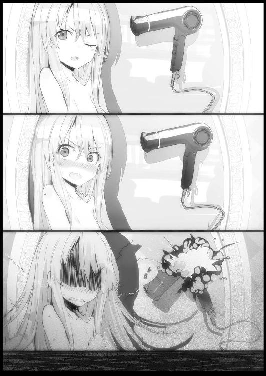
微動だにしない彼女の姿は、よりいっそう人形のような印象を強めていた。
もっとも、動けないのは柾貴のほうも同じである。
あまりのことに脳が固まっていた。
硬直している二人を交互にシャーリーが見る。
「あれ、どうしたの？ 柾貴？ アリス？ もしもしぃ？」
ぱたぱた、と手を振る。
わずかに早く意識を取り戻したのは、柾貴だった。あわてて視線を引きちぎり、部屋の中が見えない位置へと引っこむ。
「ご、ご、ごめん!!」
謝罪の言葉への返事は――
アリスの悲鳴だった。
ただし、破壊音を伴って。
部屋から馬の首が飛び出してきた。
チェスの駒だと気付いたのは、すこし経ってからだ。
クルマに撥ねられたかのように勢いよくシャーリーが吹っ飛ばされる。
「ぎゃんっ!?」
廊下の壁に叩きつけられた。
柾貴は思わず叫ぶ。
「シャーリー!?」
「来ちゃ、ダメ！」
制されて、柾貴は駆け寄りかけた足を止めた。
部屋からアリスの絶叫が聞こえる。
「いやああああああぁぁぁぁぁぁぁ――――――――!!」
時計の針の音がした。
カチッ、カチッ、カチッ、カチッ......
どこからか、ギィ......と扉の軋みが聞こえる。
Ｐｕｏｏｏ～というラッパの音がした。騒がしい歌声や大勢の笑い声が、だんだんと大きくなる。
《妖精進撃》がやってきた。
最初に現れたナイトは、いつの間にか消えていて、続いてポーンとビショップとルークが、アリスの部屋から飛び出してくる。柾貴よりも大きいくらいの巨大なチェス駒たちだ。
先ほど吹き飛ばされたシャーリーが、壁に片手をついて立ちあがる。不敵に笑って拳を構えた。
「こんのおぉぉぉ、砕き散らせ！ あたしの拳!! スタァァァ、ブラストォ――ッ!!」
まばゆい輝きを放つ右拳を叩きつける。
チェス駒を砕いた！
「ちぇいあぁぁぁ――――ッ!!」
アリスの部屋から溢れ出る特有幻想の妖精たちを、情け容赦なく粉砕していく。
柾貴は唖然として、唐突に始まった異能力による戦いを見つめていた。
衝撃波が広がり、壁や床にヒビが入る。
あわてて叫ぶ。
「な、なあ、それ危なくない!? 部屋が壊れちゃうんじゃ......!?」
「そうだよ！ 落ち着きなよ、アリス！」
「あなたが悪いんです！ シャーリーのバカ!!」
「なんですとぉ!? バカって言ったほうがバカだからね!?」
まるっきり、子どものケンカだった。
ただし、被害は尋常ではない。
「待つんだ、シャーリーも落ち着いてくれ！ そもそも、ノックしなかった、きみも悪いんだし......」
「うっ!?」
何十体目かの幻想の存在を殴り倒したシャーリーが、うめき声をあげた。
柾貴はアリスにも声をかける。
「クロックハートさん、約束もしないで来て悪かった！ 迷惑なら、ぼくは帰るから、もう怒らないで欲しい！」
「............」
ようやく、幻想の妖精たちが溢れ出してくるのが止まった。
すさまじい子どものケンカもあったものだ。
ひどい状況になっている。
壁も床もボロボロだ。
特有幻想の持ち主たちを人々が浮遊学園都市に隔離したのもうなずける惨状だった。
ひと昔前のビルなら、建て直しが必要になっていた。
しかし、このマンションは幻想具現者が暴走したときを想定した頑強な造りで、フロアごとの交換修理が可能な設計であるらしい。
三十階部分を丸々交換する、とのことだった。管理人が妙に慣れた様子だったから、もしかしたら、こんなことが頻繁にあるのかもしれない。
結局、柾貴たちは二十七階にある別室へ移動することになった。
「クロックハートさん、ひとつ訊きたいんだけど......」
「......なんでしょうか？」
柾貴の問いに、アリスが目を合わさずに答える。
「何階ぶんの部屋を借りてるんだい？ あ、分譲なのかな？」
「......一階から三十階までです」
「全部!? このマンション、全部がクロックハートさんの家!?」
アリスがうなずいた。
シャーリーが説明を付け足す。
「最初は一軒家だったの。だけど、アリスは周りが騒がしいのが苦手だし、こんなふうに部屋が壊れちゃうことがあるからさ」
「......壊す人がいるのです」
「あたしのせい!? いつも癇癪を起こして幻想具現化すんのは、アリスでしょうが！」
「......マンションの壁は対幻想装甲で要塞化してあります。この壁を壊すのは、いつもシャーリーです」
「なにおぅ」
柾貴は呆れてしまう。
「せめて、家を壊さないように抑えられなかったのか？」
「......手加減は苦手です」
「特有幻想って、イメージだから、強くするのと同じくらい、弱くするのも難しいんだって。先生が言ってた」
「なるほど。それなら、なおのこと、もうケンカはしないほうがいいよ」
「は～い！」
「......何部屋も潰す気はないです」
案内された二十七階のリビングは、さすがに被害が出ていなかった。
本棚のうえに置かれたヌイグルミが倒れていたくらいで、それもアリスの手によって起こされる。
タキシードを着たウサギで、手には時計を持っていた。よく見たら、最近では珍しいアナログ時計になっている。
部屋には、静かなクラシック音楽が流れていた。オーケストラではなくヴァイオリンの独奏だ。
三角形のテーブルには、ティーカップが三つ、ティーポットが一つ用意された。
アリスは貝殻を開いたような形の座椅子に腰掛ける。シャーリーは座布団も使わず絨毯にべた座り。
柾貴にはやわらかいクッションが与えられた。
黙りこくったアリスの顔には『不機嫌』と書いてあるかのようだ。
当然ながら、もう服は完璧に身につけている。朝着ていた青いドレスではなく、今は白黒チェッカー柄のジャンパードレスに半袖のブラウスを合わせていた。胸元には赤いリボンを結んでいる。
憮然とした表情のままアリスが紅茶を口にする。
「......柾貴くん」
「なに？」
「先ほど、あなたは何も見ていません......いいですね？ 見ていません」
「あ、ああ......そうだね。もちろん」
「よろしい」
うなずくと、アリスは表情を隠すようにうつむいてティーカップを口元へ運んだ。
そして、話題を転じる。
「......シャーリーは、特有幻想の名称を叫ぶの、どうにかならないんですか？ 子どもじみてると思います。恥ずかしいです」
「いつも言ってるけど、必殺技は名前を叫ぶものなんだよ～」
「非論理的です。理解できません」
「アリスこそ、もっと順番を考えて妖精を出しなよ――あ、お菓子ある？ 盾になる妖精を最初に出して、左右から速いやつで囲むとかさ」
「シフォンケーキを買っておきました......いつも言っていますが、妖精たちは勝手に出てくるのです」
シャーリーが冷蔵庫を開けて、ケーキを取り出す。
「おっ、三人ぶんあるじゃん！ ナイス！ せっかくの必殺技なんだから、コントロールを覚えなって」
「フォークも持ってきてください......シャーリーこそ不必要に光を飛ばすのは、やめるべきです」
「にははっ、なんか殴ると飛ぶんだよね！ はい、フォークね。こっちが柾貴のぶん」
ありがとう、と言って受け取る。
シャーリーが座って、三人ともシフォンケーキに手をつける。
「ん......なかなかの味です......シャーリーのせいで、また部屋がダメになりました。ちゃんと弁償してください」
「ええぇっ!? 元はといえば、アリスが《妖精進撃》を使ったせいでしょ？ ふわぁ、これ美味しいね」
しばらく、二人とも会話を中断してケーキを食べる。
柾貴も頂戴することにした。
たしかに美味しい。これほどの店が近くにあるとは侮れない。アリスにクレームブリュレの味を誇った柾貴だったが――もっと精進せねば、と思う。
半分ほど食べたアリスが、またティーカップを傾けて。
「"元は"を言うのなら......ノックもしないでドアを開けたシャーリーにこそ、非があります」
「ノックしないのなんか、いつものことじゃん？」
あっという間に皿を空にしたシャーリーが、ほどよくぬるくなった紅茶を一気に飲み干す。
いつもなのか――と柾貴は内心でツッコミを入れたが、口にはしなかった。
アリスが横目で、チラリとこちらを見た。
「......いつもは......柾貴くんがいません」
「ああ、そう！ 話、聞いたよ！ どうして、柾貴とパートナー契約したわけ!?」
「......わたしとしては、シャーリーが柾貴くんと親しげであることが不思議です。今日、転入してきたばかりのはずなのに」
「あたしら幼馴染みだもん」
「......え？」
柾貴はうなずいて、話を引き取る。
「ぼくたちは同じ小学校に通ってたんだ。七年前にシャーリーだけがカナンに転校して、今になって、ぼくも」
シャーリーが頬を膨らませる。
「なにも言わずに、パートナーを替えちゃうなんて、ひどいじゃないの、アリス！」
「............シャーリーのほうから"解消"を宣言したはずです」
「そんなの、よくあることじゃん！ いつも、晩ご飯には仲直りしてるじゃん！」
「......そう思ってるのは、あなただけです......いつも、すっかり忘れたような顔をしているから仕方なく合わせていました」
「えっ!? じゃあ、あれやこれや、まだ気にしてたの？ 三十回くらいの、ぜんぶ？」
シャーリーが何かを思い出すように、視線を彷徨わせる。
アリスがため息をついた。
「......今朝で、三十六回目です。去年、パートナー契約をしてから......三十六回も解消しました」
「ちょっと待った！ アリスのほうから言い出したこともあるよね!? なんか、あたしだけ一方的に悪い感じになってない!?」
「シャーリーが壊しすぎるせいで、いつもわたしまで怒られます」
「今朝、教室をダメにしたのは、あんたのバカ猫とバカ鳥でしょうが！」
「ひどいです......シャーリーにだけは、バカなんて言われたくありません......」
「よくわかんないけど、今のは悪口だ！ そんな感じがした！ ふきー!!」
ギャイギャイと言い争う。
とりあえず、特有幻想をぶつけ合うようなケンカではないので、柾貴は放っておいた。
ゆっくりとケーキと紅茶を味わう。
口のなかに広がるシフォンケーキのほどよい甘味と、鼻孔に抜けるベルガモットの香り。
至福！
「ああ、美味しいなぁ」
「柾貴も、ちゃんと聞いててよね！」
シャーリーが目を逆三角にする。
アリスも睨みつけていた。
「......部外者のような顔をしていました。疑問です」
「ん？ もう話してもいいのか？」
「なにか言いたいことがあるなら、遠慮しなくていいのに」
「......生きて帰りたければ、言葉を選んだほうがいいです」
二人が見つめてくる。
思わずたじろいだ。
睨まれて恐いということはなく、むしろ、逆というか......
どこまで本人たちに自覚があるのかわからないが、アリスとシャーリーは柾貴が今までに会った誰よりも容姿が際だっている。アリスの青玉のような瞳と、シャーリーの琥珀色の瞳が並ぶと、なおさらだ。
柾貴は照れてしまって、つい視線を逸らした。
「えっと......ま、まず、過去のいざこざについては、ぼくは知らないし......水に流せとも言わないよ。でも、いろいろあっても同居してるくらいだ。そこまで仲が悪いわけじゃないんだろ？ 完璧な人間なんていないんだし、許してあげられないもんかな。お互いに」
「む......」
アリスが考えこむ。
シャーリーのほうは、けろりとしていた。
「あたし、そもそもケンカの理由とか、いちいち覚えてないんだよね」
「きみはそういう性格だね」
「にははっ」
「くっ......わたしは独りで悩んでいたというのに」
アリスが疲れたような声を出した。徒労感が漂っている。
「それじゃあ、過去のことは置いておくとしよう。次は、現状の確認だ――ぼくは、アリスのパートナーとして契約しており規律委員会に《予備登録》されている。緑川先生にお願いしておいたから、もしかしたら、もう正式に登録されてるかもしれないけど」
「......わたしは、柾貴くんのパートナーであり、当然ながら、正式な規律委員です」
ふふっ、とアリスが嬉しそうな笑みを浮かべる。
花が咲くような微笑み。
この表情には見覚えがあった。柾貴の手持ちが少ないと話したときの、アレだ。咲く花は、きっと黒い薔薇だろう。
シャーリーが苦いものを噛んだような顔をしていた。
「ううぅ......あたしはパートナーいないし、たぶん、規律委員会も予備登録か支援隊になっちゃってるよ。二人一組って決まりだから」
「ふふっ......柾貴くん、どうかしら？ この紅茶、なかなか香りがいいでしょう......イングランドの専門店から取り寄せています」
「えっ、そうなのか。どこの店だい？」
「フォートナム＆メイソンです」
「それ英国王室御用達の高級店じゃないか。すごいな」
「ちょっ!? あたしの話、聞いてた!? あたし、けっこう寂しい状況じゃない？ 二人が何を話してるかもわかんないし」
シャーリーが涙目だった。
アリスのほうは、いつになく上機嫌だ。
「......紅茶について話せる相手がいるのは悪くありません。シャーリーなんて、なにを飲ませても同じです」
「ええっ!? 美味しいかどうかは、わかるよお！」
「そこらの店でティーバッグの紅茶を飲んでも"美味しい"としか言わないです」
それは酷い、と柾貴は思う。
「茶葉は良くてティーバッグが悪いとは言わないけど、さすがに味は別モノだろう」
「わ、わかるもん！ だけど、美味しいのは、美味しいでしょ!?」
「......では、今日の紅茶はどちらだったかしら？」
「うっ!?」
シャーリーがたじろぐ。
そういえば、ケーキを食べた勢いのまま豪快に流しこんでいた。あれでは、味わいもなにもないだろう。
柾貴は苦笑する。
「まぁ、いいじゃないか。テイスティングより、美味しいという一言のほうが、ぼくは大切だと思うよ」
「......それは、そうですが」
「じゃあ、現状を確認できたということで――最後に、これからの話をしよう。はっきり言って、ぼくの特有幻想は、きみたちのような実用性のあるものとは根本的に違うんだ。カナンに来て、他の人のを初めて見て、正直、驚いてるよ」
子どもの頃に、シャーリーの特有幻想は見ていたのかもしれないが、それを理解できていなかった。右拳が光ったり、閃光が飛んだりはしなかったし。
「......根本的に違うというのは......戦闘向きではない、ということですか？ 移動系とか探索系？」
「それはそれで使えるんじゃない？」
彼女たちの言葉に、柾貴は首を横に振った。
「いや、そういうのとも違う。とにかく、特有幻想で規則違反者を捕まえるのは、ぼくには無理だと思う。だから、規律委員会の仕事は、今まで通りにクロックハートさんとシャーリーが組んでやったほうが効率的なんじゃないかな？」
二人が顔を見合わせる。
つん、とアリスが視線を外し、シャーリーが唇を尖らせた。
「......それは、柾貴くんとパートナーを解消して、シャーリーと契約しろという意味かしら？ わたしと組みたくないなら、回りくどい言い方をしなくてもいいです」
「ぼくは、クロックハートさんに選んでもらって光栄に思ってるよ」
「......それ」
「えっ？」
「......おかしいです」
「なにが？」
ジトッとアリスが睨んでくる。
「......シャーリーは名前で呼ばれています。わたしも柾貴くんを名前で呼んでいます。なのに、どうして、あなたはいつまでも"クロックハートさん"なんですか？ 暗に距離を置きたいという意味ですか？」
「いやいやいや、それは......今日、会ったばかりだし......」
「いいんです......王というのは孤高なものです」
彼女が窓の外へと視線を流した。
シャーリーが、ケラケラと笑いだす。
「あははっ、アリスってば、まだ王とか言ってんの!?」
「......事実ですから。パートナーに名前で呼ばれないくらいには孤独な――」
柾貴は降参を認めた。
疎遠にしたくて苗字で呼んでいたわけではない。
「ああ、わかった！ ぼくとの契約のことはともかく、名前で呼ばせてもらうよ！」
「......当然です。シャーリーは名前で呼んでるんですから、わたしのことも名前で呼ぶべきです」
妙なところで対抗心を燃やしている。
もしかしたら、とんでもなく負けず嫌いなのかもしれない。
シャーリーのことは、子どもの頃から名前で呼んでいるから慣れているが、女子を名前で呼ぶなんて落ち着かない。
とはいえ、今さら恥ずかしいとは言えない雰囲気だった。
「じゃあ......えっと......ア、ア、アリス......さん」
「......さん？」
「あ、いや――ア、アリス......どう、かな？ これでいいかい？」
顔が熱くなる。
言わせておいて、彼女のほうも頬をほんのり染めていた。
「......はふぅ......これは、思った以上に......」
「どうした？」
「......いえ。まったく問題ないです。あるはずがありません。絶対に」
アリスが顔を赤くしたまま澄まし顔をするが、かすかに口元がひくついていた。
シャーリーが、柾貴の肩をつついてくる。
「ね、ね！」
「ん？ どうした？」
「なんか、今みたいな感じで、あたしの名前も呼んで！」
「名前？ どういう意味があるんだい？」
「いいから！」
「んん？ シャーリー......これでいいのかな？」
「違うよ！ なんか、ぜんぜん違うよ！」
意味がわからなかった。
話が延々と脱線しそうだったので、軌道修正する。
「とにかく、パートナー契約のことだ。移動中に規律委員会の規則をチェックしたけど、支援隊なら一人でも大丈夫らしい。ぼくには、そっちのほうが向いてる気がする」
「あ、じゃあ、あたしと一緒に、そっちでがんばろうか？」
シャーリーの提案に、アリスが噛みつく。
「あんなのは下働きです。レベル７のやる仕事ではありません」
「下働きじゃないよ。いつも言ってるけど同じ委員会の仲間だよ。役割が違うだけ」
「......わたしのパートナーを奪う気ですか、シャーリー？」
「奪う？ 言わないでおこうと思ってたけど、やっぱり言わせてもらう！ 柾貴のこと、騙して契約したでしょ!?」
「..................なにを言っているのか非論理的です」
アリスが表情を隠すようにティーカップを口元へ持っていく。
ビシッとシャーリーが指さした。
「ごまかした！」
「柾貴くん、おかわりはいかがですか？」
「ちょっと、アリス！ 柾貴は、あたしの幼馴染みで、学園の案内だって、あたしが先に約束してたのに！」
「......幼馴染みだからといって所有物ではないでしょう......それとも、婚約でもしているのですか？」
「なっ!?」
シャーリーが絶句する。カァッ、と頬が赤くなった。
「いや、そういう約束とかは、べつに、してないっていうか、柾貴とは、そういうんじゃないっていうか......」
「......そ、そうでしょうとも」
言っておいて、アリスのほうも恥ずかしそうな顔をしていた。
柾貴はティーカップをソーサーに戻す。わずかに、キンと涼やかな音がした。
ちょうどクラシックの曲が変わる。
「きみたちは、本当に話題の脱線が多いな」
「......シャーリーが悪いんです」
「女の子なら普通だよ！」
「ぼくの提案はどうなるんだい？ アリスとシャーリーが組んだほうが、うまくいくと思うんだけど」
「......前提に疑問があります。柾貴くんは特有幻想について知識に乏しい。レベル７と判定されておいて実用性がないというのは、説得力がありません」
「あっ、そうだよね！ 見てみないとわからないよ」
二人の意見は、もっともだ。
柾貴は腰をあげる。
「わかった。危険なものじゃないから、今から見せよう」
「手品ショーみたいでわくわくするね」
「......屋上に出ますか？」
「大丈夫。あと、手品はできないよ。まぁ、満足してもらえるといいんだけど......」
深呼吸する。
目を閉じて、しばらく集中の時間が必要だった。
柾貴はオーケストラの指揮者のように両手をあげる。
「ようこそ――」
世界が幻想に上書きされていく。
一瞬前までアリスとシャーリーの家のリビングだった場所は、空の高い屋外へと変わっていた。
周囲には薔薇が咲き乱れ、上品な香りに満ちている。
風が吹くと、祝福のように花びらが舞った。
薔薇園である。
柾貴たちは薔薇の花壇に囲まれた、円形に区切られた場所に立っていた。円の広さは、ちょうど端から端まで五メートルといったところか。さほど広くはない。
胸の高さの花壇に囲まれているものの、一カ所だけ、草のアーチがあって、そこから先には薔薇の散歩道が続いていた。
「ようこそ、ぼくの世界へ」
笑顔を見せた柾貴は、白と黒の燕尾服を身につけている。手には銀のトレイを持っていた。
アリスは驚愕の表情で、はっきりとわかるほど驚いていた。
いきなりシャーリーが円形の広場から、アーチをくぐって散歩道に出る。
「すごいね！ これ、どうなってんの!?」
「......幻覚......ではないですね。これは、実物としか思えません。もうすぐ夕方だったはずなのに、こんなにも明るい......夏の陽射しもない。ここは、どこ？」
「カナンは夏で、もう夕方だったな。ここは、ずっと昼間だし、ずっと過ごしやすいよ。雨も降らない」
「アリス～～～!! 薔薇！ 薔薇がいっぱい～～～!!」
どこまで行くのか、というくらい薔薇園の奥まで行ってるシャーリーが、遠くから大きな声をあげた。
見渡す限りは一面の花園で、ずっと遠くにツタの絡みついたフェンスが見えている。
「一度、行ってみたけど、フェンスまでは二十分くらいかかる。よじ登ったら外に出られるのかもしれないが、門は見当たらなかったよ」
「......転送系の特有幻想ということですか？ わたしたちを、カナンから、どこか異国の地へ？」
「最初は、ぼくもそう思ったけど、たぶん違う。理由は、こちらを見てもらえば」
柾貴が視線を向けると、芝生のうえに、テーブルが現れていた。
草を編みこんだようなデザインの木製の丸テーブルだ。同じ意匠のイスが二脚。
一瞬前まで、なかったはずなのに。
アリスは、いつもの無表情に戻っていた。
「......まるでお伽噺の魔法です。しかし、わたしたちを転送できたなら、テーブルを転送してくることも可能でしょう」
「まぁ、座ってくれ。すぐお茶を運んでくるから。ケーキは二つ目は多いよな。クッキーにしておこうか」
アリスがイスに腰掛けた。
柾貴は手にしていたトレイから、水の入ったグラスを置き、ナプキンを広げて、ティースプーンを並べた。
自分は給仕なので、二人ぶん。
息を切らせてシャーリーが戻ってくる。
「はぁ......はぁ......すごいよ、アリス！ けっこう広いよ！」
「見ればわかります」
「おいおい、頭に葉っぱが乗ってるぞ、どこを走ってきたんだ？」
柾貴は彼女の髪に絡んだ小さな葉を取る。
「つい、草むらを覗きこんだり」
「薔薇のトゲで顔に傷など作らないでくれよ？」
「あははっ、大丈夫だよ。薔薇のトゲって毒とかないから」
「そういう問題じゃないんだ。今から、お茶を出すから座ってくれ」
「はーい」
イスに座ったあとも、シャーリーはキョロキョロしている。
柾貴が胸ポケットから、指先でつまむ小さなハンドベルを取り出し、振った。
チリン、と呼び鈴が鳴る。
「......給仕がいるのかしら？」
「これを見れば、ぼくの特有幻想が転送ではない、とわかってもらえると思うよ」
ピョコン、ピョコン、と気の抜けた音が近づいてくる。
二人とも草のアーチに視線を向ける。
現れたのは、人間の子どもくらいの大きさのウサギだった。
ただし、二本の後ろ足で器用に立って歩いている。赤色のチョッキを着て、胸には蝶ネクタイを結んでいた。
前の足で銀のトレイを持ち、ちゃんとティーポットとティーカップを運んでくる。
「わぁぁぁ！ かわいいぃぃぃ！」
シャーリーがはしゃいだ声をあげた。
柾貴は嬉しそうにうなずく。
「よかった」
「..................」
アリスは無言だった。
何か気に入らなかっただろうか、と不安に思う。
近くまで来たウサギから、柾貴はティーポットやティーカップを受け取った。テーブルに乗せるには、ちょっと背丈が低すぎるからだ。
テーブルにティーカップを置いて、ティーポットから慎重に紅茶を注いでいく。
紅茶は、この注ぎ方ひとつで味が変わる。
「どうぞ」
「あ！ 薔薇の香りだ！ そうでしょ!?」
シャーリーの言葉に、柾貴はうなずく。先ほどの会話があったからか、彼女も味わおうとしているようだ。給仕した者としては喜ばしい。
今回は薔薇のフレーバーティーを選んでいた。
ティーカップを口に運んでも、アリスは黙りこんだままだった。
顔を見ても、表情が消えている。
「..................」
「あの、アリス、どうした？」
どこか遠くを見ているような様子だった。上の空というか、起きたまま眠っているかのよう。
「............あ......」
「なあ、大丈夫なのかい、アリス？」
「......夢の国？」
「なにを言ってる？」
柾貴は小首をかしげる。アリスが頬を染めた。
「......な、なんでもないです。と、とにかく、たしかに、この場所は特有幻想のようです。場所というか、もう世界そのものが」
「ああ、そうみたいだ。他の人たちのも、こんな感じなのかと思ってたよ」
ナイナイ、とシャーリーが手を横に振る。
アリスも同感のようだった。
「......こんな壮大な特有幻想は初めて見ました。しかも、レベル７のわたしたちを抵抗の余地なく巻きこむなんて」
「招待する相手は、ぼくが選べるみたいだな。人数が増えるほど大変なんだけど」
「それに、わたしたちは座っていたはず......この場所に呼ばれたとき、もう立ちあがっていました」
「そういやそうだね」
柾貴はうなってしまう。
正直、細かい理屈はわからない。
「うーん、なんとなく、自分のイメージしてる庭園レストランに、呼べるみたいだ。そのとき、芝生に座ってるっていうのは、妙な感じだろう？」
「......わたしが具現化する幻想は、お伽噺のキャラクターです。薔薇園を具現化するのと、すこし似ています」
「そうだな。ちょっと趣味が近いかもしれないな」
シャーリーが手を挙げる。
「あたしは!?」
「きみのって、右拳から光線が飛ぶんだよな？」
「うん！ なんでも貫通するんだよ！」
「......なんら類似点はないです」
アリスがピシャリと言い切った。
ぐっ、と反論しかけるシャーリーだったが、どうやらなにも思いつかなかったらしい。
別のウサギが持ってきたクッキーを柾貴がテーブルに並べた。
役目を終えたウサギたちは、広場の端でちょこんと並んで立つ。じっとしていると大きなヌイグルミみたいだった。
クッキーは焼きたてで、美味しそうな香ばしい匂いに満たされる。
二人が瞳を輝かせた。まずシャーリーが口に放りこむ。
「おいしいね！ おいしいね！」
「......これも、幻想？ どこかのお店の味なのかしら？」
大丈夫そうだとわかると、アリスも手をつけた。
本当に理屈はわからないんだけど――と柾貴は前置きして。
「たぶん、ぼくが作ったことのあるクッキーだと思う。今まで作ったことのある料理しか出せないんだ」
「......えっ!? このクッキーを柾貴が作れるの？」
「道具があればね。だから、広いキッチンが欲しいんだよ。もっとレパートリーを増やしたいし」
「そういえば、柾貴は料理が得意だったよね。プリンとか」
「ははは、子どもの頃は混ぜて冷やすだけだったな。懐かしいよ」
やがて――
クッキーは皿のうえから消え、ティーカップは空となる。
庭園のテーブルを囲んで、少女たち二人が夢見心地の夢を見ていた。
一人は背筋を伸ばした姿勢のまま、余韻を楽しむかのようにティーカップをなでている。もう一人は、イスの背もたれに身体を預けて空を見ていた。
「いやぁ、極楽だねぇ」
「......こんな特有幻想があるのですね」
「喜んでもらえたなら、よかった」
「あ、そういやさ、ここの名前って、なんていうの？」
「名前？ 決めてなかったな。ぼくは《薔薇園》と呼んでいるけど」
「え～なんかフツーすぎるんじゃない？ ウサギレストラン、でいいんじゃないの!?」
「一応、薔薇が特徴だと思ってるんだけど......」
「じゃあ、ウサギバラレストラン！」
「ちょっと誤解されそうな響きだね、それ」
ちなみに、バラ肉とは肋部分の肉のことである。
端で聞いていたウサギたちが、後ずさりした。
アリスが首を横に振る。
「......ナンセンスです。ウサギとかレストランとか薔薇園とかよりも、この世界そのものが特有幻想であることに着目するべきでしょう」
「え～、じゃあ、アリスはどんな名前がいいと思うの？」
「......異世界に招待する門......つまり、ゲート......そう......ゲート・オブ・ラビット」
ウサギが入ってる!? 大人気だな、ウサギ！ と柾貴は心の中でツッコミを入れた。
「まぁ、呼び名は、どうでもいいんじゃないか？」
「よくないよ！」
「......大切なことです」
「そうか？ あ、そろそろ時間だな。あまり長くは居られないんだ」
遠くから鐘の音が聞こえてくる。
カラーン、カラーン、カラーン......
「なんか、これって、ウェディングベルみた――」
シャーリーの言葉が言い終わらないうちに、周りの景色が変わった。
元の部屋にいる。
アリスとシャーリーの家のリビングだ。目の前には三角形のテーブルがある。
柾貴は指揮者のように挙げていた手を下ろした。
「どうだったかな？」
「にゃひゃああああ！ すごかったよ、柾貴！」
シャーリーが満面の笑顔だった。彼女は床にべた座りで、あぐらをかいている。学園の制服でスカートのままなので、ちょっと目のやり場に困った。
「......悪くなかったです」
アリスは座椅子に腰掛けていた。彼女が視線を上げて、棚のうえのウサギのヌイグルミを見る。手に持たれたアナログ時計を確認した。
「......ちゃんと、時間は流れてます」
「夢や幻の類じゃないと思うよ。お腹も膨れてるだろ？」
「......そうですね」
「にははっ、今日は美味しいもの、いっぱいだね！」
「......柾貴くん、今のをバスや電車の中で使ったら、どうなりますか？」
「戻ったときは、ずっと乗ってたのと同じことになるよ。運転手まで招待するのは、ちょっと危ないかな」
バスも電車も人工知能のアシストがあるから、事故は起こらないだろうけれども。
アリスが考えこむ。
「......それでは、例えば、シャーリーが本気で柾貴くんを殴ろうとした場合ですが」
「嫌な喩えだな」
「《ゲート・オブ・ラビット》に自分だけ逃げることは可能かしら？」
「できると思うよ。ただし、使うには集中する時間が必要だから、殴られる瞬間に逃げこむのは、無理だけどね」
「......緊急回避としては、いまいちです」
やはり、実用性という意味での評価は低かった。
ポン、とシャーリーが手を叩く。
「じゃあ、犯人を招待しちゃえばいいんじゃない？ 逃げられないでしょ!?」
「あのフェンスの向こう側に行ったことがないから、どうだろうな？」
「試しに行ってみたら？」
「帰ってこられなかったら、どうしよう？」
「うわ～やだ～!!」
「......行方不明者を出すわけにはいかないです。わたしたちは、処刑者でも殺し屋でもなく、規律委員ですから」
「そういうことだね」
納得してくれたかな、と柾貴は二人を見る。
アリスがため息をつき、シャーリーが肩をすくめた。
「......これほど、絶大な特有幻想は見たことがありません。レベル７と認めるに、なんの躊躇いもありません......しかし、規律委員会の仕事には向いていないでしょう」
「ぶん殴ったほうが早そうだよね！」
「わかってくれたか。それじゃあ、今まで通り、きみたち二人が――」
「......お断りです」
「「えっ!?」」
アリスの言葉に柾貴もシャーリーも驚いた。
彼女は座椅子から立ちあがると、別の階にあるという自分の部屋に向かう。
「......柾貴くんは、わたしのパートナーです......あなたは特有幻想を使わずにやってみると言いました。一度も試さないうちに辞める気ですか？」
「そういうわけじゃないけど......」
「......わたしがパートナーでは、不満ですか」
「とんでもない！」
「でしたら"これからの話"は、お終いです......」
「えっ、いや、でも......なあ？」
「ちょっと、アリス。あたしは!?」
当然ながら、シャーリーが黙っていない。アリスが冷たい視線を返す。
「......わたしはなにも譲るつもりはありません」
「あたしだって、なにを言われても、これだけは譲るつもりない――桜坂シャーリーは、アリス・クロックハートの友達だよ！ それだけは、変わらない！」
バンッと彼女は自分の胸を叩いた。
言われたほうは、ぽかん、としている。
「な......!?」
「ケンカしても、パートナーじゃなくなっても、放っておけないって思うのは変わってないから！」
「......あなたは......愚者です。無断でパートナーを替えられて、幼馴染みを取られて、それでも友達ごっこですか」
「関係ないって。友情ってのは自分の損得で出したり引っこめたりするもんじゃないの。大切なのは、あんたが、あたしを必要としてるかどうか！ それが友達でしょ！」
シャーリーが快活に肩を揺らす。
アリスは唇を噛んで、背を向けた。
「......やっぱり......あなたは、バカです。変な人です。異常者と言ってもいいです」
「そ、そこまで？」
「もうパートナーではないですが......部屋は余ってるので、出ていく必要はないです......さようなら」
彼女はリビングを出て行く。
シャーリーが片手を振って見送った。
「おやすみぃ」
「あ、もう寝るのか？」
「......はい」
「そうか。じゃあ、また明日だな。おやすみ」
柾貴の言葉が終わると同時に、ドアが閉まる。
まだ夕方だから、寝るには早い時間だと思うのだが、仕方ない。
「ああやって、一度、部屋に入っちゃうと、もう明日の朝まで出てこないんだよね」
「そうなのか」
「柾貴はどうする？ 泊まってく？」
「おいおい......もちろん帰るよ。パートナーの件は、もっと話し合ったほうがいいと思うけど、今日はもう無理そうだね」
「だね！ じゃあ、また明日。あっ、送ってこうか？」
「それ、普通は逆だからね」
「そう？」
玄関まで見送りしてもらった。環端末があるので、一人でも迷うことなく帰れるだろう。
また明日な、と柾貴は片手を挙げた。
またね！ とシャーリーが応える。
子どもの頃と変わらないな、と柾貴は思った。
幕間 intermission
『生徒指導室』と書かれた部屋に、一人の男子が入る。
筋肉質で体格がよく、短く切りそろえた髪と角張った顔の男だった。睨みつけるような威圧感のある目つきをしている。
威昌沼だった。
彼の眼光を向けられても、指導室で待っていた男は、なんら怯む様子がない。
背広に白衣を着た、丸眼鏡の男だった。
「やあ、待っていたよ」
「緑川に呼び出されて、あやうくアプリが見つかるとこだったぜ」
「必要のないことをしゃべるからだ。職員会議でも話題になったが......まぁ、証拠がなければ処罰もない」
「そうだけどよ......」
「私に頼みがあったのでは？」
男の声はおだやかだったが、威昌沼は明らかに動揺していた。
室内の空調は完全に制御されているにもかかわらず、額に浮いた汗を袖でぬぐう。
「あんたに貰ったヤツで、俺はＡ組でもトップに立てた。偉そうなクロックハートと、桜坂は別格だけどよ」
「そうかね」
「だが、あの野郎は、レベル７だったんだ！」
「楠木くんか。彼の特有幻想は興味深いな。実用性という点では疑問だが......あれほど影響力のあるものは――」
「俺じゃ勝てないのか!?」
「ケンカかね？ それは知らないな。能力を使うならば圧勝だろう。君の特有幻想は戦闘向きだからな」
ぐっ、と威昌沼が詰まる。
歯噛みした。
「あの野郎には、いつも桜坂が一緒にいるんだ。ときどき、クロックハートもいるしよ」
「レベル７の三人組か。なかなか、面白いことになってるな」
「俺に、もっと能力があれば......」
「桜坂くんを越えるような大きな能力があれば？ どうするんだね？ その能力が欲しいのかね？」
威昌沼が病的な目で、白衣の男を睨みつける。
「......欲しい」
「くくく......まだまだサンプルの数に不満があったところだ。協力しようじゃないか、迷える子羊のために」
「だ、だけど、もう金は......」
「いいさ。今まで、だいぶ研究資金を協力してもらったからな。これは、サービスにしておこう」
「マジかよ!?」
白衣の男が環端末を振り、ウィンドウを開いた。
電卓のアプリケーションを起動し、何桁もの数字を入力していく。
「腕を出したまえ」
「はい！」
威昌沼が興奮した様子で左腕を出した。蛇のレリーフのある環端末が填っている。
白衣の男の環端末には、林檎に天使の翼のついた模様があった。
接触させる。
データの直接転送を報告するウィンドウが開いた。
「くくく......よく味わいたまえ、それが世界の真実へと至る《知恵の実》だ」
第４章 スターブラスト・シャーリー
――どうしてこうなった？
柾貴はバス停から校舎玄関までの短い道のりを、自問自答しながら歩いていた。
周りからの刺さるような視線が痛い。
左手には日傘がある。
ただし、フリルがいっぱい飾られた少女趣味な黒い日傘で、自分の頭上に広げているわけではなかった。陽射しを遮っているのは、アリスのためだ。
「なぁ、アリス......きみ、立体映像の日傘を持ってなかったかい？」
「......今日は、黒色の気分です」
「そういや、あれは白だったかな」
立体映像なら、そのへんも簡単に変えられそうなものだが。
今朝、バスでアリスとシャーリーと一緒になった。家の方向は同じだから、それは自然なことだったのだが。
バスを降りたところで、「......持ってください」と日傘を渡された。さほど校舎玄関まで距離はないし、なにか意味があるのかもしれないと思い、引き受けたのだが。
たしかに、意味はあった。
柾貴の立場が周囲に知れ渡ったことだろう。
どう見ても下僕だった。
学園でも一番というくらい有名な女の子に日傘をさしているだけでも、かなり悪目立ちする。輪をかけて状況を酷くしているのが、右手を引っぱっている少女だった。
「柾貴、今日、お昼、どうする？ あたしはね、五十三階のビュッフェがオススメ！」
「なあ、シャーリー、手を引っぱるのやめないかい？」
「にははっ！」
笑って流された。
柾貴の右腕を抱えこむように持って、シャーリーが前を歩いている。彼女は放っておくと、どんどん早足になっていく。
アリスはマイペースにゆっくりと歩いており、つまり日傘を持っている柾貴としては、後ろからシャーリーを引っぱるような形になるわけで。
「ああ、アレに似てるな」
「うん？」
「......なんですか？」
「近所の大型犬の散歩。腰をやっちゃったおじいさんの代わりに引き受けてたんだけど、もう家から出たらすぐに走り出そうとしてリード引っぱって、大変だった」
「へー、しつけのなってない犬だねぇ。そんで、なにが似てるの？」
「......バカ犬です」
こんな会話でも、周りからは仲が良さそうに見えるものらしい。
教室に着いた途端、男子が集まってきた。
「あ、あの、楠木さん」
「あれ？ この学校では、男子も"さん付け"なのか？」
「いや......敬意というか......」
「おかしなこと言うなぁ。普通に呼び捨てでいいよ。なんなら"柾貴"でも」
「い、いや、そんな、無理です！ 楠木さんは、桜坂さんやクロックハートさんと仲いいんですか？」
なぜか敬語だった。
まだ親しくなれてない、ということか。転校生というのは馴染むのが大変だ。
「規律委員会のパートナーになったんだ。ぼくとしては、アリスとシャーリーが組んだほうが効率的だと思うんだけど」
「ッ!?」
「あ......えっと、今のは......その、つまり......」
つい名前で呼んでしまった。
そそっ、と波のように彼らが引いていく。
「お、おい、呼び捨てにしたっ！」「"アリス"って呼んだよな!?」「おいおい！ クロックハートさんに聞こえたら殺されるぞ!?」「楠木サン、パネエ！ レベル７って本当だったんや！」「桜坂さんとは幼馴染みらしいけど、まさかあの女王までとはなぁ」「女王のパートナーか......王だな」
その日のうちに"キング"という渾名がつけられた。
大変遺憾である。
菓子作りが趣味ということもあって、前の学校では"パティシエ"とか"クッキー"とか親しみのある愛称で呼ばれていたのに。
こんなことではいけない。
クラスメイトの男子たちに、柾貴はフレンドリーに話しかけることにした。休み時間に、五人ほどが溜まっているところへ行き。
「あのさ、よかったら、昼食を一緒に取らないかな？」
「えっ？ あ、キング......学食ですか？」
「普通に名前でいいんだけど。うん、桜坂さんが五十三階のビュッフェに行きたいようだったから、一緒にどうかと思って」
人前では名前呼びしないように心がける。
しかし、クラスメイトたちは、及び腰だった。
「それって......クロックハートさんも一緒なんじゃ......？」
「あ、ああ、たぶん」
放っておけないと言っておいて、独りで食事をさせるような性格ではあるまい。柾貴だって同じだ。友人なのだから。
ぶるぶるぶる、とクラスメイトたちが首を横に振る。
「キングの気持ちだけいただいておきます！ ちょっと、それは無理っていうか......僕らには場違いっていうか――なあっ!?」
同意を求められて、周りもうなずく。
「そっすね！ いやぁ、ヘルキャットと昼食とか、命知らずすぎるわ！」「ちょっ、おまえ!?」「バカヤロ！ 俺らを巻きこむな！ スンマセン、キング！ こいつバカで！」
柾貴は手をひらひらと振る。
想像していた以上に、《お助け猫》は怖がられているようだ。
できるだけ愛想よく笑顔を振りまく。
「はは......す、すまなかったね。あの二人は、ちょっと落ち着きないもんな......気持ちはわかるよ。えっと......また今度にでも」
転校前に想像していたのと違うなぁ、と柾貴は肩を落とした。
前の学校の友だちに"キングって呼ばれてる"と知らせたら、爆笑されるか、いじめを心配されてしまいそうだ。
クラスメイトたちから離れて、自分の席に戻る。
次の授業の用意をしようと椅子に座ったとき、環端末が点滅した。
「なんだ？」
ウィンドウを開く。
メールが届いていた。
『昼休み、２８０８教室に来てもらえませんか。相談があるので一人でお願いします』
送信者は――南島都子。
誰だっけ？ と柾貴は首をかしげる。
すこし考えて、クラスメイトの女子だと思い出した。
今朝、改めて自己紹介があったものの、まだクラス全員の名前は覚えていない。
しかし、初日の体育のときに話しかけてきた一人だったので、彼女のことは覚えていた。
教室を見渡すと、三つほど離れた斜め前の席に座っていた。
見ていると、彼女が振り向く。
肩までの髪に、ヘアピンを留めている。やわらかい雰囲気の女の子だった。
このクラスにいるということは、かなりの特有幻想を持っているはずだが、町ですれ違っても気付かなさそうな、そんな普通の子だ。
彼女の表情は、すこし陰っている。たしかに悩みがありそうな雰囲気だった。
「ふむ......」
昨日、ちょっと会話しただけの間柄だから、相談があると言われても、まったく見当が付かないけれども――頼りになると期待してメールをくれたのだろう。無下にするのは申し訳ない。
柾貴はシャーリーに『昼に用事ができた。すこし遅れそうだから先に食べててくれ』とメールを飛ばした。
昼休み――
シャーリーは一緒に行きたがったが、相手のあることなので遠慮してもらった。
アリスのほうは気にする様子もなくエレベーターに向かう。
柾貴は彼女たちが上行きのエレベーターに乗るのを見送ったあと、すぐ下に向かうものに乗った。
二十八階で降り、指定された２８０８教室へ向かう。
このあたりは、大半が空き教室となっていた。放課後にはクラブ活動などで使われているようだが。
「あ......ここは......」
柾貴は２８０８教室に来たことがあった。
廊下の一番奥の左側にある教室――針金男に追い詰められた場所だった。
アリスの特有幻想により、天井と壁が壊されたはずだ。
ドアには黄色いテープが貼られて立入禁止になっている。ただし、一部が剥がされていて、わずかに開いていた。
相談のある女子が？ と釈然としないものを感じる柾貴だったが。
「まぁ、入ってみればわかることか」
ドアを開けた。
誰もいない。
無事だった備品は持ち出されたらしく、転がっていた机や椅子はなくなっていた。瓦礫と化した階間と壁の建材と、潰された机や椅子だった残骸があるばかりで。
廃墟と化した教室の中央に、チカチカと光る銀の腕輪が落ちている。
「なんだ、これ？」
不安定な足場なので、転ばないように注意しつつ、進む。足元で瓦礫や他の物が砕ける音がした。
腕輪を手に取る。
草花のレリーフをあしらった環端末だった。
パートナー契約の証である水晶も付いている。薄く黄色い水晶が。
「誰のだろ？」
「――南島のもんさ」
「ッ!?」
背後から男の声がして、柾貴は振り向く。
入ってきたのは、威昌沼だった。青ざめた顔をした仲間たち三人もいる。
「お前を呼び出すためによ、ちょっと借りたんだ」
「なるほど。ぼくを呼び出したのは、きみだったわけか」
柾貴は拾った環端末をポケットに押しこむ。後で返しておいたほうがいいだろう。南島が浮かない顔をしていたのは、これが原因だったに違いない。名前を騙られてメールを送られてしまうのでは、不安になって当然だ。
「南島さん、嫌がったんじゃないか？」
「あいつは俺の言うことには逆らわねえよ。軽く殴ってみろって。ビービー泣いて言うこと聞くぜ」
「..................おまえッ!!」
柾貴の胃の底が熱くなった。
首筋が総毛立つほどの怒りを覚える。
威昌沼がせせら笑った。
「残念だったなぁ、女からの呼び出しじゃなくてよぉ！」
「どうやら、昨日のことで懲りてなかったみたいだな......ずいぶん、きつく言われてたのに。反省する気もなしか......」
「ハッ！ レベル７の余裕か？ 強気じゃねえか」
ドアが閉じられた。
ご丁寧に鍵まで掛けられる。
階段のときと同じで、一対四。ただし、相手側の三人は、前回とだいぶ様子が違う。
威昌沼の陰に隠れている、といった感じだった。
「おい！ お前ら、なに、ビビッてんだ!?」
「だって、楠木はレベル７ですよ？」
「俺らには無理ッスよ、威昌沼サン......あいつ、ケンカもツエーし......」
「この壁とか天井とか見たら、レベル６の鉄砲くらいの能力なんか、大したことないっていうか......」
威昌沼が仲間の胸ぐらを掴みあげた。
「んだと、お前!? 俺の能力が大したことないって!?」
「あっ、いや、威昌沼サンは６っていっても特別っていうか......レベル７みたいなもんじゃないですか......」
「みたいなもん？ 結局、俺のほうが下だってことじゃねえかよッ!!」
「く、苦し......スンマセン！ スンマセン！」
すっかりいじめの現場だ。
規律委員会に連絡しようと、柾貴は環端末を振ってウィンドウを出す。しかし、通信アンテナのところに×が表示されていた。通話もメールも選択できない。遮断されているようだ。
威昌沼は妙なアプリで、こういう小細工ができるらしい。おそらく、録音録画にも妨害が入っているのだろう。先日の階段のときと同じように。
柾貴は拳を握った。
戦うしかない。
しかも、今回は間違いなく相手は特有幻想を使ってくるだろう。
――命懸けになる、か。
柾貴は眼鏡を外して、胸ポケットへとしまう。
ちょっと視界はぼやけるが、気兼ねなく全力が出せる。
幻想具現者と事を構えるのは、これで三度目だ。最初は驚くばかりだったが、だいぶ慣れてきた。
「もうやめておけ、威昌沼......嫌がってる人を巻きこむもんじゃない。ぼくのことが気に入らないんだったら、ぼくに言えばいいだろう？」
「ケッ！ こんなときまで善人面か!? いいぜ、望み通りお前から燃やしてやるよ！ 俺の気に入らないもんは、全て焼き尽くす!!」
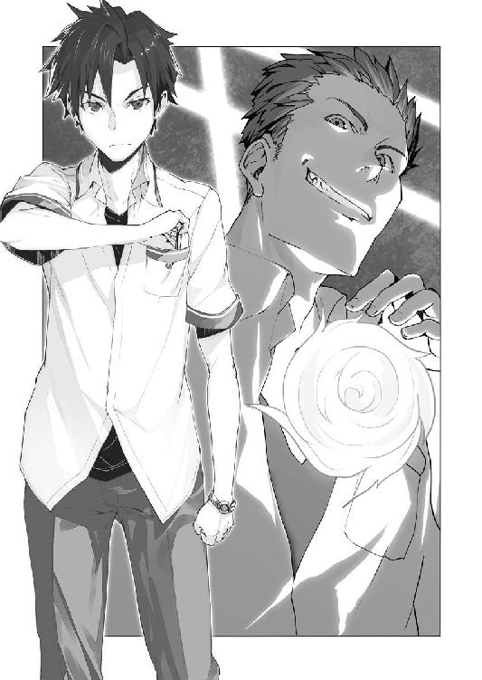
威昌沼が胸ぐらを掴んでいた仲間を投げ捨てた。そして、柾貴に向かって右手を伸ばす。
「死ィィィねッ!!」
「そう簡単には――」
すでに足元は確かめてあった。柾貴は左方向へ走る。威昌沼の右手の外側へと回りこむ。人間の手は内側へ向けるよりも外側へ向けるほうが、ずっと遅い。
真っ赤に燃える火球が、真横を飛んでいった。
かすかに髪が焼ける。
柾貴の背後で爆発が起きた。
教室に備え付けられていた黒板代わりの大型モニターが、大破した。
かなりの威力だ。
鉄砲玉なんて生やさしいものではない。自動車くらいなら粉々にしそうな破壊力があった。
たしかに、シャーリーの《スターブラスト》に比べれば弱いのかもしれないが、当たれば生身の人間など、ひとたまりもない。
「きみは、どうかしてるぞ、威昌沼！ そんなもの、ケンカで人に向けるなんて！」
「これはケンカじゃねえ！ ......制裁だ!!」
間合いを詰める。
火球の威力は明らかに脅威だ。
当たれば、命はない。その事実が緊張と動揺を生む。
心拍数が跳ね上がった。
しかし、じっとしていたら的にされてしまう。死なないために、動いた。
柾貴は飛び道具を持たない。とにかく近づかないと一方的になる。
「シャーリーにこだわっているようだが、どうして彼女の考えを理解しようとしない!? きみはレベルを誇示したり、不正義な行いをしたり！」
「ハッ！ 俺が気に入ってんのは、あいつがレベル７だからだ！ ついでに、顔と身体もたまんねえ！ 足りない頭の中なんざ、知るか!!」
「ぐっ......おまえ......ッ!!」
「心配しなくても、すぐに手に入れてやるよ！ お前を始末したあとで！」
「させるかッ！」
柾貴は、あと三歩といった距離まで迫る。
威昌沼が二発目の火球を放った。
先ほどと同じく熱を帯びた火の玉が、飛んできた！
避ける。
「くそ！ ちょこまかと!!」
「撃つ直前に、動きが止まってる。発動には集中が必要だもんな。やっぱり、おまえは、強くない！」
柾貴は手が届きそうな距離まで詰める。
拳を放つ直前。
威昌沼が引きつった表情を一転させて――べろんと舌を出した。
「なあああぁぁぁぁぁんてな！」
相手が左手を広げる。
今まで放っていた火球は囮で、左手からも撃てたのか!? 柾貴の眼前に、威昌沼の左手があった。
「クハッ！ 俺の勝ちだな！ オラッ、土下座しろよォォォッ!!」
「......やっぱり、撃てないようだな」
「なに!?」
「あれだけの威力だ。目の前で爆発したら自分も危ない」
「ザケンナ！ んなことねえ！」
「アリスもシャーリーも......自分の特有幻想の威力を大幅には調節できないらしい。大きすぎる力で周りに被害が及ぶとわかっていても、抑えられない。どうやら、かなり難しいことみたいだ」
「俺は違うんだよ！ 撃てるんだ！」
「距離を詰めてからの二発目も、一発目と同じ威力だった。あの距離でも爆発による危険はあったのに」
「うっ......ぐくっ......!!」
柾貴と威昌沼の戦いを壁際まで離れて見ていた男たち三人が、うめく。
「マジかよ!? そんなとこまで見てたんか？」「大砲の弾みたいな火の玉が頭のすぐ横、飛んでってるときに......!?」「やっぱ、レベル７なんて人間じゃねえ。おかしいよ!!」
威昌沼が震える。
「くそ......う、撃てる......撃てるって言ってんだよ！」
「特有幻想を使わなければ、ぼくのほうに分がある。降参しろ。そして、やったことを償うんだ」
「ぬがぁ......!!」
彼は動物のようなうめき声しか出せないほど興奮して、顔を真っ赤にした。
そのとき――
ガタガタ、とドアが音を立てた。
誰かが外から開けようとしているらしい。鍵が掛かっているので開かないが......
爆発音がしたから、他の生徒たちが異変に気付いたかもしれない。あるいは、先生か。
すこし静かになってから――
ドアが吹っ飛んだ。
派手な音をたて、ひしゃげたドアが宙を飛び、教室を横切って、あやうく壊れた壁の外まで届くところだった。
廊下側から、にょきっ、と白い脚が伸びている。
つまり、ドアを蹴り壊したのだ。彼女が。
「柾貴、無事!?」
顔を出したのは、シャーリーだった。
「ああ......ドアの近くにいなくてよかったよ」
「ん？ あっ、そうだね！」
あけらかんとして、彼女は笑った。
威昌沼が顔を引きつらせる。
「どうして、ここが......そうか、楠木が前もって呼んでいたんだな!?」
「いいや、ぼくは一人で来た」
「危ないことがあるかもって言ってんのに、柾貴は無謀だよ」
「そうだな。昨日の今日で、こんなことになるとは思わなかった」
この場所を見つけてくれたのは、おそらく、シャーリーの後ろにいる女の子だった。
「......柾貴くんの位置を追跡していたら、ここで情報が遮断されました」
アリスが静かに語った。
すこし気になる。
「なあ、他の人の居場所って、そんな簡単に調べられるもんなのかい？」
「......時と場合によります」
ごまかしたアリスにかわって、シャーリーが暴露する。
「規律委員会本部に"不審な行動をしているので緊急事態としてモニターするように"と要請したんだよ」
「職権乱用!?」
これが騙しではなく、本当に女子と二人きりになっていたら、そのあたりも全部、筒抜けだったわけか。
「まぁ、今回は助かったけど」
「そう？ なんか勝っちゃったみたいだけど？」
柾貴は握りしめていた拳を緩め、笑みをこぼした。
いくら威昌沼が粗暴な男でも、この状況で悪さはしないだろう。
彼の仲間の男三人も、観念した顔をして、うなだれている。
決着したと思っていた。
窓側の壁と天井のなくなった瓦礫だらけの教室で、大型モニターまで破壊されている。
後ろ側の戸口にシャーリーがいて、その後ろにアリスがいた。
柾貴は中央にいる。
すぐ近くに威昌沼がいた。特有幻想まで使って大暴れしていたが、今は力なくうつむいている。
教室の前側のドア近くには、威昌沼の仲間三人が固まっていた。柾貴を囲むために連れてこられたものの最初から戦意喪失している様子だった。
映像や音声の記録は妨害されているようだが、特有幻想を使った証拠は残っている。
あとは、規律委員会に連絡してお終い。
解決した――はずだった。
威昌沼が左手の環端末に触れる。ウィンドウが開いた。
画面に踊るのは、天使の翼のある林檎――
Do you eat an apple?
Please touch, if it is as a wish!
くくく、と彼が低い笑い声をあげた。
威昌沼の顔を見た柾貴は、その病的な目つきに嫌な予感を覚える。
「なにしてる？」
「お前をブッ殺して......それから......絶望と憤怒に狂った桜坂をいたぶってやろうと思ってたんだがな......」
「まだ、そんなことを言ってるのか？」
「これから始まるんだよ、俺は!!」
威昌沼がウィンドウの中の林檎を叩いた。
Yes! You ate an apple!
Welcome to "truth in the world"!!
ビクンッ、と彼の身体が震えた。
ただならぬ様子に柾貴は身構える。
シャーリーが、教室の隅で怯えている三人に叫ぶ。
「なんかヤバイ感じがする！ 早く逃げて！」
男たちが悲鳴をあげて、教室の前側のドアを開けようとする。ガタガタとドアを揺らした。
「あれ!? なんだ!?」「おい、早くしろ!!」「開かないんだよ!!」
そういえば、この教室のドアには外からテープが貼ってあった。前側のドアに貼られていたものは切られていない。
ぐぐぐ、と背中を仰け反らせた威昌沼が、鼻歌を歌いはじめる。
楽しそうに。
愉快そうに。
リズミカルに。
穏やかな表情をしていた。
何かいいことがあったような、そんな余裕の笑み。
「おい、楠木」
「な、なんだ？」
プレッシャーは感じるが、あえて距離は取らなかった。どんな態度を取ろうと、威昌沼は威昌沼だ。特有幻想は火球であり、遠距離専門。安全なのは手の届く距離のはず。
「お前、もしかして、自分が勝ったとか思ってないか？」
「否定はしない......そちらの能力的に、近づいたら、ぼくの勝ちだった」
「さっき、目の前では使えない――と言ってたよな」
「ああ......」
「忘れてくれ。さっきまでの俺は弱くてゴミクズだった。さっきまでは、な」
「なにを......言ってる？」
その態度から、ハッタリではない、と柾貴は察した。
シャーリーが叫ぶ。
「柾貴、逃げて！」
「ッ!?」
後ろへ飛び退く。
威昌沼が両手を肩幅で開いて、右手と左手を向かい合わせにした。その両方から同時に火球を生み出す。
見ていた全員が息を呑んだ。
爆発。
骨も残るまいと思うほどの爆発が起きた。
衝撃波を受け、柾貴は吹っ飛ばされる。
「うあぁぁぁっ!!」
散らばっていた瓦礫のうえに転がり、肩や脚に激痛が走った。
シャーリーが何か叫んだが、轟音に掻き消される。
男たち三人の悲鳴も。
幸いだったのは、この教室が壁も天井もなくなっていたことだ。もしも、もっと閉鎖された空間だったなら、部屋の中にいた者たちは、重大なダメージを受けていたことだろう。
哄笑が聞こえてきた。
爆発の煙が薄れた部屋のなかに、無傷の威昌沼が立っていた。
その顔には自信が漲っている。
「クハッ！ すげえ威力じゃないか！ しかも、爆発を受けても傷ひとつないぜ！ 完璧だ!! 俺の能力は、今、完成したんだ！」
「いったい......どういうことだ？」
柾貴は瓦礫のなかから起きあがる。
派手に打ち付けたせいで、肩と脚を打撲した。制服が破れて、血も出ている。
シャーリーが駆け寄ってきた。
「大丈夫!?」
「無事ではないけど、大丈夫だよ。それより、気をつけてくれ。さっき、また妙なアプリを起動していた。たぶん、それの効果だ......別人のようになってる」
「うん、別人みたいに強いね！ レベル７くらいかも」
彼女が柾貴をかばうように前に立って身構える。
威昌沼が鼻で笑う。
「俺がレベル７だと？ 違うな！ 俺は、その先へと辿り着いた！ この世界の支配者になるのだ!!」
大仰に右手を掲げた。
ずっと戸口の廊下側から見ているだけだったアリスが、教室の中へと入ってくる。
「......下らないことを言います」
「なんだとぉ？」
アリスの目つきも声も冷え切っていた。
シャーリーもうなずく。
「レベルなんてどうでもいいし！ 支配者だなんてバカみたいだよ！」
まったくだ、と柾貴は思う。世界の支配者だなんて子ども向けのＴＶ番組でしか出てこない。
アリスが言葉を続ける。
「......本当に下らない戯れ言です......この世界の王は、わたしだというのに」
「「えっ!?」」
柾貴とシャーリーの声が重なった。
そういえば、アリスは、そういう子だった。彼女は大まじめに主張しているから困る。
威昌沼が開いた右手をアリスへと向けた。
「ハッ！ それなら、楠木の前に、まずお前から消し飛ばしてやる！」
「......王に挑むのですね？」
「俺は変わった。もうレベル７に怯える必要はねえんだよ！」
「......思い上がった愚か者に、教えてあげましょう。わたしの妖精の前には、その程度の変化など些事に過ぎぬと」
アリスがポケットからトランプを取り出す。それを撒き散らすと、ラッパが鳴った。
どこからともなく、時計の音がする。
カッチ、カッチ、カッチ......
大勢の足音がする。ぺちゃくちゃとした甲高いおしゃべりの声と、笑い声と泣き声と鳴き声とが、だんだんと大きくなってきた。
キィ......と扉が軋む。
《妖精進撃》が始まった。
アリスの前に、なにもない虚空から巨大な猫が現れる。ニタニタと笑っているのはチェシャ猫だ。
体長六メートルの大猫が、パンチを見舞う。
威昌沼が右手を広げた。
「爆ぜろ！」
放たれた火球が、猫パンチの当たる直前にチェシャ猫を吹き飛ばした。
ギャー、と猫らしくない悲鳴をあげて、現れたときと同じように消え去る。
いや、空中に笑った顔だけが浮いていた。
ガバッと口を開く。
威昌沼が左手を伸ばして、その中に火球を叩きこんだ。
再び爆発が起き、今度こそチェシャ猫は消える。
そのときには、もうアリスの前にトランプの兵隊がならんでいた。
「構えぇぇぇ、筒!!」
鉄砲のように掲げたのは、ガチョウだった。開いた口から、ＢＡＮＧというアルファベットが飛ぶ。
威昌沼が火球で応戦するが、火球はＢＡＮＧの文字とぶつかって爆発する。広がった爆炎を目がけて、いくつもの文字の弾が撃ちこまれる。
トビウオも飛んでいく。
でっかいネズミが地を這って相手に向かっていった。
応戦するのは、無数の爆発。
「うおおおおおぉぉぉぉぉぉぉ――――――!!」
威昌沼が叫んだ。
戦力は拮抗している。特有幻想の消耗戦。
押し切れるのか？ 柾貴は不安になり、アリスのほうを見た。
彼女はゾウガメに腰掛け、トランプの兵隊にクジャクの羽で扇がせていた。たしかに、爆炎のせいで、かなり室温が上がっているが......
「だ、大丈夫なのかい、アリス!?」
「......柾貴くんにも知らしめが必要かしら？」
「えっ？」
「......わたしを誰だと思っています」
「じゃあ、勝てるのか？」
「......当然です」
つい、とアリスが威昌沼を指さした。奥の手がある、ということか。
「......シャーリー、撃ちなさい」
「なっ!?」
戸惑ったのは柾貴だけで、シャーリーは「おっしゃあ!!」と元気いっぱいの声をあげた。
「や、やれるのか、シャーリー？」
「にははっ、任せて！」
彼女が野球の投手みたいにふりかぶる。
「せぇぇぇのッ!! スタァァァ――ブラストォォォォォ――――――ッ!!」
妖精たちが突撃し、威昌沼が迎撃の火球を撃ちまくっている、その戦場に向けて、まるで太陽が落ちてきたかのようなまばゆい閃光が走った。
熱は感じない。
それなのに、触れた妖精たちは、瞬時に存在を消滅させる。
威昌沼が両手を広げ、絶叫しながら火球を生みだして――それらが、なんの効果もなく光に飲まれて消えた。
「ぐおぉぉぉっ!?」
表情を引きつらせた威昌沼の、頭の横を閃光が抜ける。
外した!?
その光が消え去らぬうちに、シャーリーが駆けだして間合いを詰めていた。
「てぃぃぃやああああッ!!」
跳び膝蹴りが、威昌沼の脇腹にめりこんだ。
「はごぁぁぁッ!?」
体重が軽いせいか、シャーリーの決め技はハイキックや膝蹴りが多かった。だから、最後の攻撃には驚かなかったが......
柾貴は目を丸くしていた。
「自分で撃った閃光のなかを、突進した!?」
アリスが肩をすくめた。
「......《スターブラスト》の効果は閃光の放出。閃光の発生時間は〇・五秒。そのとき、シャーリーのほうは制限なく行動可能で、重ねて撃つこともできます」
「なんだそれ!?」
「......ちょっと火球が強くなったところで......些事なのですよ。嘘偽りなく」
威昌沼の特有幻想がパワーアップしたことについて言っていたのを思い出す。たんなる挑発かと思ったが。
「あれは本心だったのか。たしかに、ちょっとくらい威力が上がって近距離で使いやすくなったとしても、シャーリーの特有幻想に比べたら、たいして意味ないな」
圧倒的な破壊力を持つ閃光を無制限に生み出せ、そのなかを自分だけが移動できるのだから。
「......彼女に自覚はありませんが......あれは反則のようなものです」
「たしかに」
威昌沼が泡を吹いて倒れる。
シャーリーが両腕を交差させて、何だかよくわからない勝利のポーズを取った。
アリスが微笑する。
「......反則のように強い......わたしの六六七番目の駒です」
「おいおい、友達だよね!?」
「......友情とは素晴らしいです」
「き、きみは、本当に壊れてるなぁ......」
「ふっ......王に凡庸さなど不要です」
「困ったもんだよ」
視界を巡らせると、教室の角に固まって、ガタガタと震えている男三人がいた。巻きこまれなかったようでなによりだ。柾貴は安堵の吐息をつく。
「なんにしても、助かったよ......ありがとう。ぼく一人だったら、パワーアップした威昌沼には勝てなかったよ。アリスとシャーリーのおかげだ」
「......べつに......シャーリーだけでも勝てました」
「そうかい？ シャーリーは強いけど、火球からぼくや三人を守るのは無理だろう？」
「ん......まぁ、そうかもしれません」
「妖精たちを盾にして守ってくれてたじゃないか」
「あ、あれらは......勝手に出てきて勝手に振る舞うので、わたしは知りません」
「そうかい？ アリスの意志がまったく伝わらないのだとすると、ぼくやシャーリーが攻撃されても不思議はないと思うんだけど？」
アリスが頬を染めて、そっぽを向いた。
顔を隠すかのようにして。
「......ええ。次はそうなるかもしれません。わたしは危険なので、近寄らないほうがいいです。身の安全は保証しかねます」
柾貴は苦笑する。
これ以上は彼女が怒りそうなので言うのをやめておいた。
改めて、心の中で感謝する。
シャーリーが威昌沼の腕輪を外した。
妨害していたアプリケーションが停止したらしく、通信が回復する。
柾貴は胸ポケットから眼鏡を取りだした。顔に掛ける。
状況を知った他の規律委員と先生たちが駆けつけて、ようやく事態は収束するのだった。
幕間 intermission
背広のうえから白衣を着た男は、暗い部屋のなかでウィンドウを開いて、ぶつぶつと何事かをつぶやいていた。
サブウィンドウの時計が、サイズを変えて大きくなる。眼鏡に映りこんで光った。
「ああ......もうそんな時間か......」
予定していたタスクの実行に許可を出す。
とあるネットワーク上の空間だった。
多重のセキュリティにより厳重に秘匿されている。
その空間に、白衣の男のキャラクターが投影された。四角い頭のロボットである。
人間と見分けがつかないような高精度なロボットではなく、古いブリキのオモチャみたいなデザインで腹にメーターがついていた。
すぐ近くに、少年の姿を模したキャラクターが現れる。髪は青色で、頭が大きくデフォルメされており、腹にポケットがついていた。
『やあ、ドクターロボ』
もう一体、女性が現れる。こちらも頭が大きくデフォルメされている。それと同じくらい胸と尻も大きく強調されていた。
『こんばんは、みなさん♪』
次はペンギンだった。人間の形すらしていない。しかも、ふわふわ浮いている。
『チッス！』
白衣の男はウィンドウのコンソールに指を滑らせる。
ロボからフキダシが出た。
『コンバンハコンバンハ おひさしぶりデス』
現実世界にいる白衣の男は凍ったように無表情だったが、ネット上のロボットはニコニコと表情を変える。ネット上ではフレンドリーだった。
女性『今日もカレシからメールも電話もない......』
少年『そのうち来るよ！』
ペン『......』
少年『ロボ、最近、がんばってるじゃん！』
ペン『目立ってますな～』
ロボ『そうかな？ 研究成果は出てきたから、今度、発表シマス』
少年『楽しみ！』
ペン『はらへった......』
少年『焼き鳥、食べたい！』
ペン『ガクガクブルブル』
女性『ちょっと目立ちすぎてません？ ロボさん』
ペン『......』
少年『そうかもしれないね！』
ロボ『目的のためには、仕方ないとオモイマス』
女性『そっちの校舎には、凄腕のブレイカーがいるんでしょ？』
少年『やばいね！』
ペン『ガクガクブルブル』
ロボ『ワハハ、大丈夫デス。しょせんは高校生、強いだけでバカだから』
ペン『バカなら安心ですな～』
少年『それならいいけど、慎重にね！』
女性『気をつけてください......』
ロボ『ワカッテイマス』
女性『こちらの計画をジャマなんかしたら......』
ロボ『ワカッテル』
女性『頭ぐちゃ～ってしちゃう、から』
ペン『......』
少年『僕はロボもみんなも信じてるけど、見つかったら処分はしかたないよね！』
画面を見つめ、白衣の男がつぶやく。
「ふん、私を過小評価しおって。そんなことだから、お前たちは世界の真実に辿り着くことができないのだ。私が到達者となり、人類の導き手となるのを見ているがいい」
ロボ『ミナサン アリガトウゴザイマス』
第５章 規律委員会
三日後――
昼休み、柾貴たちは規律委員会の本部に呼び出されていた。
本部は校舎の地下にある。
もっと物々しい場所を想像していたが、予想に反して畳の敷かれた広いだけの部屋だった。二十畳くらい。壁は白い土壁で、柾貴たちは部屋の中央に集まっていた。
畳の上で正座すると、柾貴は不思議と心が落ち着く。
シャーリーは制服姿でスカートなのに片脚だけ立て膝で、その膝を肘置きにしている。他の人であれば、だらけているだけに見えるかもしれないが、虎がリラックスしているような、そんな野性味が感じられた。
アリスは膝をかかえて、なぜか体育座りをしている。
三人が並んで座り、向かい合う形で緑川先生があぐらをかいていた。相変わらずジャージである。
全員の前に緑茶が出ていた。
柾貴は静かに湯飲みを持ちあげると、ズズズ......と飲む。
シャーリーが手をつけないのは猫舌だからだ。彼女は冷めてから一気に流しこむのを好んだ。
アリスは音を立てて飲むのに抵抗があるらしく、それがマナーだと知っているはずだが、静かに飲んでいた。
柾貴は湯飲みを置いて、周りを見渡す。
「ちょっと意外ですね」
「なにがだ？」
緑川先生がタバコを咥えた。
現在のタバコは、火を使わずに煙も少ない。中毒性や健康被害は格段に控えめになっているものの、未成年者の喫煙は固く禁じられている。小学生にしか見えない彼女が咥えていると、妙な感じだった。
「本部って、もっとコンピュータとか並んでる場所をイメージしてました」
「昔はあったんだけどな。結局、立体映像で出したほうが便利なんだよ。必要な情報のあるウィンドウを自在に大きくできるだろ」
緑川先生が手元に表示したウィンドウのひとつを指先ではじく。
そいつは四メートルほど離れた位置に飛んで、六十インチくらいの大画面になった。
「まぁ、実際にはモニターに比べると発色とか甘いんだけど、アタシらの仕事は映画鑑賞や写真の評価じゃねえからさ。素早い情報共有が最優先だ」
「そうですね」
「委員会の連中が、それぞれ自分の端末を使ってるから、ジャマくせえもんはどかしちまった」
「たしかに、長い時間モニターを見続ける仕事でもないですし、合理的ですね」
「......椅子がないのも、合理化かしら。居心地が悪いです」
アリスが独り言のように言った。
緑川先生がタバコを揺らしながら答える。
「状況によって集まる人数が違うし、メンバー同士で話し合うこともあれば、誰かの発言に注目することもあるからな。そのたびに椅子を持ってガタゴトやってたら遅いし煩せえし、日本人なら畳と緑茶だろ」
「......あなたの趣味です」
「かったるい顧問なんかやってんだから、部屋くらい好きにさせろっての！」
どうやら他は後付けで、主な理由は趣味らしかった。
柾貴は苦笑する。
そういやよぉ、と緑川先生が部屋の奥に行き、戸棚から何かの書類を持ってきた。今時、紙の書類とは珍しい。
「楠木は本部に来るの、初めてだったよな？」
「はい」
「これ委員会の登録申請書な。この時代に紙書類なんて、カナン教育委員会の連中、アホだろ」
「はは......まぁ、必要なものなら書きますよ」
久しぶりに、紙にペンで記入する。
緑川先生が大型化したウィンドウに、ある病室の映像を表示した。
「んで、これが今日の議題な！」
「あ、威昌沼だ」
シャーリーに気絶させられてから三日経ったが。
「......まだ意識が戻っていないのかしら？」
「そうらしい。うさんくせえアプリの話とか、いろいろ聞き出したいとこなんだがなぁ」
「......また、やり過ぎです」
「えええ!? そこまで強くは蹴ってないよ!?」
「......このように犯人は供述しており」
「あたしが犯罪者!?」
「まあまあ、二人とも。昏睡してるのは蹴ったのが原因じゃないかもしれないし」
柾貴の言葉に、緑川先生がうなずく。
「いい勘してんな。医療班の話だと、アプリで脳内いじったらしくて、その後遺症で起きないらしい。どう考えても違法モンだな」
アリスが目を細めた。
「......ＡＰＰＤですね」
「うむ」
カナンでは生徒全員に環端末が与えられているが、学園外でも似たような装置は普及している。そうした端末を介して、脳に特定の信号を送ることで、麻薬に類似した効果や、作用・副作用を与えるアプリケーションだ。
世界的に製造・流通・使用が禁止されている。
緑川先生が別のウィンドウを次々と開いていった。
「こっちも威昌沼の症状と同じような感じだ。そういや、こいつも桜坂が捕まえたんだったか」
柾貴にも見覚えのある相手だった。転校初日に追い回してきた針金みたいに細身の男だ。
眠っている。
「みっちゃん先生、あたし、この人は蹴ってないよ？」
「ああ、壁だけ吹っ飛ばして降参させたんだったな。お前、威嚇に校舎を壊すのやめろよ。コメディー映画のセットじゃねえんだぞ。けっこうパネル交換だけでも高いんだからな」
「にゃははは！」
「笑ってごまかすなっての！ 全部、規律委員会の予算から出てんだ。お前のパンチで、アタシのオヤツが大ピンチじゃねえか！」
「みっちゃん、セコイ。そこは自分で払おうよぉ」
「やだ。カナンのお菓子、高いからな」
多くの生活必需品を地下工場で自給自足するカナンだったが、嗜好品であるスナック菓子は、本土から空輸されてくる。結果、輸送費のせいで割高になっていた。
「アタシは、毎日、オレオを食べないと死んじゃうんだよ」
「戸棚にリッツならあったけど？」
シャーリーが赤色の箱を持ってきた。ぱかぱか開けてしまう。
「バッ!? バカヤロ！ そいつは、アタシの昼食だ！」
「そうなんだぁ......ボリボリ」
「食べるなよ！ なんで、食べた!? なあ、なんでだ!? アタシのって言ったろ!?」
本気で涙目だった。
アリスがため息をつく。
「......いい大人が」
「緑川先生、リッツで怒らないでください。昼食なら、このあと、ぼくらと学食に行きましょうよ」
「なんだと、リッツでマジ切れしちゃダメなのかよ!? ナビスコに謝れ！」
「......帰っていいかしら？」
「いや、ちょっと待て。これからだ」
ようやく話が戻る。
先生の昼食だったリッツは、お茶請けにされ、全員の前にならべられた。
よく考えると――規律委員会の予算で買っているのなら、これが正しい使われ方だろう。
緑茶に塩味のスナック菓子は、なかなかの組み合わせだった。
「医療班のほうでも、ＡＰＰＤという線で調査してる。第十三校舎だけじゃなく、カナン全体のネットを精査中だ。特有幻想を強化するなんて聞いたこともねえが、その可能性もあるしな」
「可能性？ 威昌沼は本当に強くなってましたが......」
「環端末の記録が妨害されてたからな。世界中の学園都市にまで調査を要請するには証拠不十分ってやつだ。警告くらいは出したけどな」
浮遊学園都市《楽園》は日本の領海にあるが、他の国も、それぞれ浮遊学園都市だったり、地下だったり、山奥だったりに幻想具現者たちの施設を持っている。
レベル３くらいだと転校や観光に制限を受けないが、それ以上のレベルになると国防や治安維持の問題から、なにかと手続きが必要になる――らしい。柾貴は海外に行ったことがないから聞いた話だ。
アリスはイングランドが祖国だと言っていた。
日本に来てから幻想具現者になったのか。それとも何か事情があってカナンに転校したのだろうか。
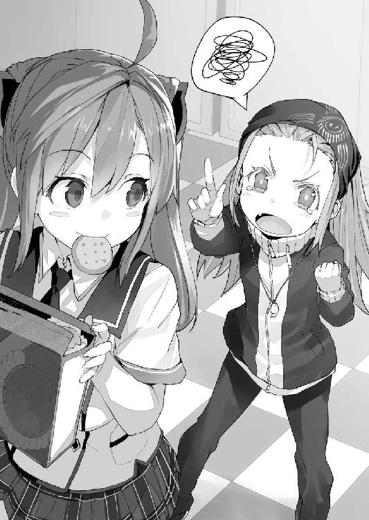
そのアリスがつぶやく。
「......ＡＰＰＤを愚者に与えたのは、だれ？」
「まぁ、そいつが問題だな」
緑川先生がうなる。
シャーリーはボリボリとお菓子を食べていた。
柾貴は考える。
「うーん、やっぱり、この校舎の人じゃないかな？ これだけ続いてて、他の校舎では事件が起きてないんだから」
「......第十三校舎には、生徒二七九〇人、教師一八〇人、職員二〇三人がいます」
生徒は全員が幻想具現者。教師は半数が幻想具現者。職員は一般人だ。みんな環端末は持っている。
お菓子をかじりながら緑川先生がぼやく。
「約三〇〇〇人の容疑者な。こいつは規律委員会の手にゃ余るわなぁ。はむっはむっ」
柾貴は膨大なリストに頭を悩ませる。
「ＡＰＰＤを渡した可能性がある人物は、絞りこめませんかね？」
「......ネットに痕跡があれば、ここまで面倒な話にはなっていないでしょう」
「だな。ネットを経由して渡してたら学内サーバーに記録が残るけど、んな証拠が見つかってたら苦労してねえし」
「......直接接触です」
「だよなぁ。ＡＰＰＤのアプリが環端末に残ってれば、まだ調べようもあったんだけど、ご丁寧に自己消去してやがったし。ムカつく！」
「......位置情報の記録から、会ったであろう人物が特定できないかしら？」
「どんだけ遡るんだ？ いつ受け取ったかなんてわかんねーぞ」
それについては、心当たりがあった。
「事件の当日か、前日の放課後じゃないですか？」
「ん？ あ、そういや、お前ら前日にも揉めてたな。あんときは持ってなかったのか？」
「断言はできませんけど......持っていれば、あのときに使っていたと思うんです」
「むむむ......だとすると、けっこう絞れてくるぞ」
「それと、ぼくが転校してきた初日の事件......彼も、そのとき誰かと会ってたと思うんですよ。ぼくが環端末を付けてなかったから記録はないですけど、誰かと話してるような声が聞こえたんです」
「相手は見てないのかよ？ 独り言だった可能性は？」
「絶対ではないですけど......もう一人の声は、かすかに聞こえました」
「ふぅむぅ」
緑川先生が位置情報の一覧を開き、時間と場所で候補者を絞りこんでいく。
うなずいた。
「一人、候補いる」
「おおっ!?」
「楠木柾貴、おまえだ――――――!!」
「ええええっ!?」
「......まさかの犯人です」
「犯人が柾貴だったなんて!!」
「おいおい、アリスとシャーリーまで......やめてくれよ。だいたい、最初の事件のとき、ぼくは環端末を持ってなかったじゃないか」
「にははっ、冗談、冗談」
「......自分で渡したＡＰＰＤで死にかけていたら世話はありません」
「かんべんしてくれ」
緑川先生がウィンドウを蹴飛ばす。
「いねぇぇぇんだよ！ 犯人が複数だったら、マジでお手上げだぞ、にゃろ！」
「犯人は位置情報を妨害できるんですよね？ 偽の情報に書き換えられたりは？」
「無理だな。環端末の信号を校舎内のセンサーで拾ってる形式だから......ダミーは可能だけどよ」
「あっ！」
「なんだよ、リッツなら、もうねーぞ？ 戸棚の奥のチップスターに手を出したら、マジで殺すからな。あれは自腹だ」
「誰かと会話できるくらいの時間を一人でいて、しかも、動いていない人物はいませんかね？」
「むむむ......そいつは検索条件がめんどうだな。もうやめね？」
「先生、そこはがんばりましょう！」
「わ、わかってんよ。言ってみただけだって。ええっと......」
小さな指が立体映像のコンソールを叩く。
「該当者が多いなぁ......こんだけ大きな学園なのに、ぼっち多すぎだろ」
緑川先生がうなる。
手詰まりか。
そのとき、柾貴は、ふと思いついた。
「あの......生徒と職員を除外した場合......どうなります？」
「ほぅ、どうして教師が犯人だと思うんだ、楠木？」
「えっと......生徒や職員が、あの威昌沼に特有幻想を強くするアプリを渡すかな？ と」
なるほど、とアリスがうなずいた。
「威昌沼はレベル絶対主義者。低レベルはゴミクズ扱い。非能力者の職員たちなんか人間とも思ってないです。そんな腹立たしい相手に、結果はどうあれ、特有幻想を強化するアプリを渡すなんてありえません」
普段からバカにされている非能力者の職員たちや、粗暴に振る舞われている周りの生徒たちが、彼に力を与えるとは考えにくかった。
もしも、ＡＰＰＤを使用した戦いで、アリスとシャーリーが勝てなければ――柾貴は殺され、その後、どうなっていたかは想像もしたくなかった。威昌沼の身勝手な欲望を満たしたに違いないのだから。
威昌沼としても、ＡＰＰＤを渡した犯人を信用していなければ、貰ったアプリを使おうとは思わなかっただろう。
緑川先生の目つきが変わっていた。
ウィンドウに表示されている人数が減っていく。
「おい、楠木......そいつは、当たりかもしれねえ......二人のＡＰＰＤ使用者に信用されててもおかしくない教師で、該当する時間に単独でいて、ほとんど動いてない。そんなヤツが、第十三校舎三一七三人のなかに、一人だけいやがる」
柾貴はウィンドウに表示された名前を見つめて、息を呑んだ。
シャーリーが、キュッと拳を握る。
アリスは、もしかしたら何か思い当たることがあったのかもしれない。小さくため息をついただけだった。
緑川先生がウィンドウを殴る。立体映像なので、なんの抵抗もなく消え去った。
「あんの、バカヤロウが！」
空き教室のドアをノックする。
「入りたまえ」
「..................」
無言のまま開き、中へと入った。金色の髪の女の子、アリスである。
待っていたのは、二年Ａ組の担任――梁谷玄先生だった。
「相談があるそうだね？」
「ええ」
「意外だな、君が私を頼るなんて」
「......時と場合によるかしら」
「お役に立てるといいが」
場所は、２８０４教室だった。二十八階の閉鎖されていない空き教室だ。
午後六時――
もう放課後で、陽が西に沈みつつある。
遠くから、アリスと威昌沼に破壊された２８０８教室の修復工事の音が聞こえていた。アリスのマンションと違い、部屋を丸ごと交換できるような設計にはなっていない。破損した柱を補修して、壁と天井を作り直しているところだ。
アリスは窓の外を眺めた。
「......最近、手駒が勘違いをしています」
「手駒？」
「......桜坂シャーリーといいます。王であるわたしになにかと意見してきたり、身勝手に振る舞ったり......あまつさえ、わたしの部屋を壊しました」
「そいつは酷いな」
「......万死に値します」
「私に、ケンカの仲裁をしろ、ということかね？」
「......知らしめる必要があります。わたしが王であることを」
「穏やかじゃないな」
「......賛同できないなら、この話は、ここまでです」
しばし、梁谷が考えこむ。
アリスは無表情に窓の外を眺めていた。
「もうすこし、具体的な話を聞こうか」
「......シャーリーの《スターブラスト》は、優雅さに欠け、粗暴で、冒涜的と言ってもいいほどですが......王であるわたしに届く可能性がある、と認めざるを得ません」
「まあな。桜坂は戦闘に特化したタイプだし、そのうえ、レベル７だ。カナンどころか、世界中の学園都市を探しても、そうはいないだろう」
「......だとしても、戦えばわたしが勝つでしょう。しかしながら、わたしは王であり、いかなる戦いであろうとも、美しく気品を持って圧倒的でなければなりません」
「そうかね」
梁谷が肩をすくめる。
呆れた、といった感情を露にしていたが、アリスは咎めなかった。
「......あなたに、その手伝いをさせてあげます」
「はは、いや、私は戦闘方面の特有幻想は苦手でね。せいぜい、夏場に扇風機の代わりになるくらいで」
「......あなたはレベル５の下のほう。戦力としては期待してません。ただ、おもしろい物を持っていると聞きました」
アリスの言葉に、梁谷が顔を痙攣させる。
「ッ!?」
「......王に隠し事など無意味です」
「な、なんの......ことだか......」
絞り出すような声だった。
アリスは超然とした態度を崩さない。
「......シャーリーを圧倒するのに、あなたの持っている物を使ってあげよう、と言っているのです」
「いや、それは......」
「この場で、名前を言ったほうがいいですか？」
梁谷の顔がひきつり、考えこみ、睨みつけたり、泣きそうになったり、めまぐるしく変わる。
どれほど悩んだのだろうか。
歪な笑みが浮かんだ。
「ふっ、ふふふ......ぐふふふふ......」
梁谷が左手を振り、ウィンドウを開いた。
高速で操作する。
サーと耳の奥で鳴るようなノイズが広がった。
「......何かしら？」
「念のため、というやつだ」
「......映像と音声の記録の妨害、だったかしら」
「ああ。そして、これが、君の欲しがっているものだ」
梁谷が左手を伸ばしてくる。環端末には、林檎に天使の翼のついた模様があった。
アリスも左手を出す。
白い人形のような腕だ。填っている銀色の腕輪には、薔薇のレリーフが彫られている。
梁谷の指が、彼女の白い肌のうえを這った。
「......その行為は、必要なのかしら？」
「あ、いや、いいじゃないか......協力に見返りがあっても」
「......王に褒美をねだるなら、まず成果をあげるのが下僕というものです」
「ぐっ」
「......死にたいんですか？」
「はは、わかったよ。だが、渡した後には......」
アリスが冷たい目で見つめる。
梁谷が唇を歪め、右手で汗をぬぐった。
「そいつは一回かぎりで自己消滅する消費型アプリだ。これは自作品でね。私を殺したら、二度と手に入らない。桜坂に勝ちたいんだったな。そのあとも、強い能力は必要になるだろう？ 私のことを軽視しないほうがいいのではないか？」
「......それを判断するのは、わたしです」
アリスの言葉を肯定と受け取ったのか、梁谷が環端末を接触させる。
小さな電子音。
「くくく......受け取りたまえ。それこそが世界の真実へと至る《知恵の実》だ」
アプリケーションがコピーされた。
直後――
規律委員会が誇るプログラマー集団が五時間で作り上げた特製のトラップが起動する。
アプリケーションを凍結して自己消滅できないように拘束し、同時に解析して違法性を判断するシステムだ。
凍結は《成功》そして判定は《違法》だった。
会話ウィンドウが開く。
そこに現れたのは、緑川先生だ。梁谷へと詰め寄る。
『こんんんの、腐れ教師がァ！』
「なっ!? 緑川!?」
『規律委員《お助け猫》突入ぅぅぅぅぅ――――――!!』
ウィンドウ越しの絶叫と同時に、教室のドアが蹴り破られた。
いつもの通り、シャーリーが乱入する。
「てやあああ――ッ!!」
その後から、柾貴も追いかけた。
ルール通りに宣言を行う。これが柾貴の規律委員としての初仕事だ。
「梁谷先生、ＡＰＰＤ製造流通の容疑で拘束します！ 執行は規律委員会法に基づいており、異議のある場合は九十日以内に申し出てください。なお、抵抗の意志を示した場合、治安維持法の適用により、防衛措置が取られる可能性があります」
柾貴は特有幻想では戦力にはなれない。だから、それ以外のところで役立とうと思い、まず規則を頭に叩きこんでいた。
シャーリーが腰に手を当てて胸を張る。
「はりー先生！ 見損なったよ！ 生徒たちにエーピー......ほにゃららを渡して、人殺しやら、眠ったままやら！ とにかく、絶対に許さないッ!!」
「......抵抗すると、死にます」
これが、アリス＆シャーリー《お助け猫》の口上だった。
けれども、相手も一筋縄ではいかない。
梁谷の表情には余裕があった。
「くくく......どうしたんだ、君たち。私に何の容疑がかかっているって？ まぁ、拘束するというなら受けようじゃないか......しかし、間違っていたら、罰走くらいじゃ済まさないから、覚悟しておきたまえ」
やはり、もう証拠は彼の環端末からは消えているのだろう。
ウィンドウのなかで緑川先生が歯噛みした。
『チッ......研究室のＰＣを調べたが、授業で使う資料ばっかだな。開発ツールやデータはどこかに隠してあんだろう』
アリスが左腕を掲げる。環端末を指さした。
「......証拠なら、ここに」
「うん！ そうだよね！ はりー先生から渡されたから持ってるんだもん！」
「くくく......何の話かな？ 私が誰に何を渡したと？」
「......録画録音の妨害アプリでしたか」
「悪いが、君たちがなにを言ってるのか、さっぱりだな。妙な難癖をつけるのはやめてもらおうか！ いくら規律委員でも失礼じゃないかね!? 私がなにか違法行為をしたと言うなら証拠を出したまえ!! 証拠を!!」
柾貴は尋ねる。
「つまり、証拠があったら、やったことを全て認めてもらえますか？」
「ああ、もちろんだ！ 君たちの環端末に証拠が記録されているというならね！」
「わかりました」
目配せすると、アリスがドレスのポケットから、ペンサイズの機械を取り出した。
スイッチを押す。
サーと静かなノイズが流れ――
『......何かしら？』
『念のため、というやつだ』
『......映像と音声の記録の妨害、だったかしら』
『ああ。そして、これが、君の欲しがっているものだ』
『......その行為は、必要なのかしら？』
『あ、いや、いいじゃないか......協力に見返りがあっても』
『......王に褒美をねだるなら、まず成果をあげるのが下僕というものです』
『ぐっ』
『......死にたいんですか？』
『はは、わかったよ。だが、渡した後には......』
『............』
『そいつは一回かぎりで自己消滅する消費型アプリだ。これは自作品でね。私を殺したら、二度と手に入らない。桜坂に勝ちたいんだったな。そのあとも、強い能力は必要になるだろう？ 私のことを軽視しないほうがいいのではないか？』
『......それを判断するのは、わたしです』
『くくく......受け取りたまえ。それこそが世界の真実へと至る《知恵の実》だ』
梁谷の顔面は蒼白になっていた。
顔の皮膚は痙攣し、指先が震える。
汗が噴き出していた。
「な......に......？」
「......あなたは、バカにしすぎました」
アリスの言葉が、ある意味、全部なのだが、柾貴は補足しておく。
「生徒たちは、先生が思ってるほど考えなしじゃないんです。何度も同じ方法で記録を妨害されたら、対策を練りますよ。解決方法はシンプルで、環端末以外の記録装置を持っておくってものでしたけど......それについて先生は警戒してませんでしたね」
「あ、ぐっ......ううぅ......」
うめき声は獣のうなり声のようでもあった。
それから、ぶつぶつと独り言をつぶやく。
ずっと腰に手を当てて立っていたシャーリーが、前に進み出た。
「よくわかんないけど、そんなわけで、逮捕だ！」
梁谷が天を仰ぐ。
「......この......糞ガキ......どもが」
「はりー先生？」
彼が左腕を振った。
ウィンドウが開き、そこには『暗号通信』の表示。
次に、見覚えのある映像が映った。
天使の翼のある林檎――
柾貴は叫ぶ。
「押させたらダメだ！ シャーリー!!」
「うん！」
シャーリーが駆け寄る。
梁谷が鼻を鳴らした。
「やはり、愚かだな、桜坂くん。今は特有幻想を撃ちこむべきだったのだ。君たちは唯一の勝機を逃したぞ」
もうすこしで手が届く、というところで、シャーリーが見えない壁に当たった。
梁谷が身動きさえしてないのに、吹っ飛ばされる。
教室の壁に背中を打ちつけた。
「ぎにゃッ!?」
「ッ!? シャーリー!?」
柾貴は駆け寄る。こんなことが、アリスの部屋でもあったのを思い出す。
あのときと同じように、すぐ彼女は立ちあがり、身構えた。
「大丈夫！」
「よ、よかった」
「......あきれた頑丈さです」
そう言いつつ、アリスが安堵したように、ため息をついた。
梁谷が肩をゆすって、せせら笑う。
「私がレベル５の幻想具現者だと忘れたのかね？ もちろん、君たちはレベル７だ。状況がどうなろうと敵ではないと思っているのだろう。その傲慢さに苛立つ日々とも、これで決別だ」
彼は右手をウィンドウに落とした。
天使の翼のある林檎を食する。
さらに、彼の周りに何枚ものウィンドウが開いた。それら、全てに《知恵の実》がなっていた。
「ふはははははは!! 私の脳は世界の真実へと辿り着く！」
右手を横薙ぎにして、全ての林檎を食らいつくす。
まだ、あのＡＰＰＤは解析されていない。複数の使用が、どういった効果を及ぼすのか、柾貴たちは知らなかった。
もしも、特有幻想のパワーアップという効果が重ねて作用するのなら、とんでもないことになる！ 柾貴は身震いした。
同じことを考えたのだろう、ウィンドウ内の緑川先生が声を荒げる。
『撤収！ 《お助け猫》撤収しろ！』
「......お断りです」
アリスが平坦な口調で返した。
彼女には恐怖感というものが欠落しているのか？
『バカを言うな！ 相手の戦力がわからないのに、戦うんじゃねえ！』
「......あんなものを......逃がすわけにはいきません」
『そんな無茶をさせるわけにはいかねえんだよ！ いくら規律委員でもな！』
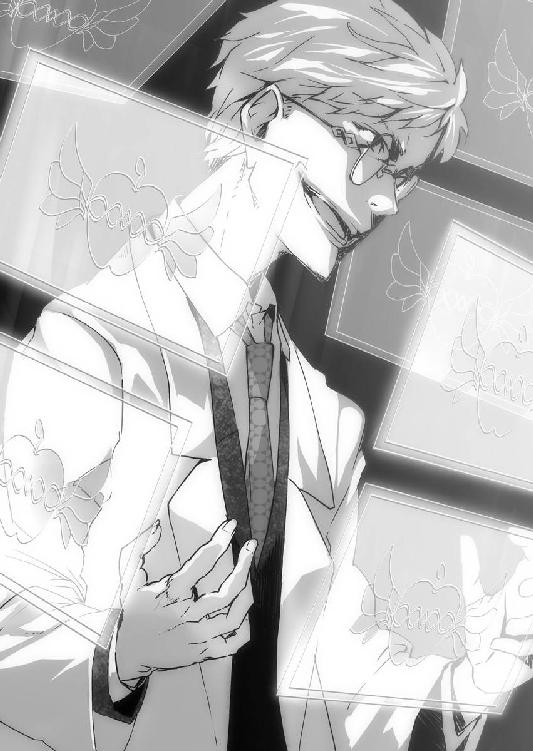
「......違います」
『なにッ!?』
「......わたしが戦うのは......このアリス・クロックハートが、世界の王だからです」
そう言ってアリスは緑川先生のウィンドウを閉じた。
教室の壁際に視線を投げる。
「......柾貴くん、逃げたほうが安全です」
「当然、お断りする。危険だとわかってるところに、パートナーと幼馴染みを残しておけるもんじゃない」
「......そう」
最悪の場合、自分の特有幻想で二人を連れて避難することも考えていた。
瞬時に使えるタイプではないので、相手の攻撃によるが、なにかできることがあるなら、柾貴は留まるつもりだった。
「......シャーリー、もしかして、寝てるんですか？」
「起きてるよ！」
「......全力でやりなさい」
「オッケー、まかせときなって！」
シャーリーの右手が、まばゆく輝いた。
「くくく......真実へと辿り着いた私に......たかがレベル７ごときが、勝てるわけがないのだッ!!」
梁谷が右手を振ると、衝撃波が襲ってくる。
普通ならば、壁に叩きつけられて潰されていたかもしれない。
アリスがポケットからトランプを取りだし、放り投げた。
それが、《妖精進撃》の始まりだ。
巨大なウミガメが現れて、盾になってくれた。壁やら窓やらは砕け散ったけれども。
シャーリーが拳を振る。
「とりゃあああ!! スタァァァァァ――ブラストォォォォオオオオッ!!」
閃光が走った。
応じて、また梁谷が右手を横薙ぎにする。
特有幻想の衝突が起きる。
閃光は――
あらゆるものを貫いた。
梁谷の横を抜けて、ビル群の合間を走り、空の彼方へと伸びていく。
「なん、と!?」
彼が表情を引きつらせた。
その閃光のなかをシャーリーが、駆けていく。
「りゃらららあああ――――ッ!!」
「ばか......な......なぜだ!? 私は神にも等しい力を手に入れたはず！」
シャーリーが右拳を叩きつける。
「そんなら！ あたしの拳は、神様だって、ブン殴るんだぁぁぁ――――ッ!!」
ぐしゃっ、と梁谷の顔面が歪んだ。
吹っ飛ばす。
壁まで。
ところが、梁谷の身体は窓へと向かう。
「ご......ががが......おのれ！ 化け物めがぁぁぁ!!」
相手は窓から、校舎の外へと身を躍らせた。
ここは二十八階だ。落ちたら、いくらＡＰＰＤで強化されていても、ただでは済まないはず。
しかし、梁谷の身体は宙に浮いた。
特有幻想の種類は一人一つで、例外は発見されていない。複数の効果があるように見えても、効果の応用だ。
おそらく、衝撃波を生みだした能力を使って、浮いているのだろう。
梁谷が空を飛んで逃げようとする。
シャーリーが振り返った。
「アリス！」
「......もう来ます」
西日を遮り、校舎に大きな影が落ちた。
巨大な翼をはばたかせ、やってくる。鷹の上半身と、ライオンの下半身をもつ、グリフォンが！
重機のような爪を校舎に突き立て、留まる。
「やっと、出番がやってきた！ やっぱりオレ様、役立てる！ やっつけ仕事はやらぬから、やっかいごとなら任せとけ！ さあ、乗れ、すぐ乗れ！」
「もう乗った！」
アリスをお姫様だっこしたシャーリーが、グリフォンに飛び乗った。
「......自分で乗れます」
「よっと！」
遅れずに柾貴も飛び移る。
こんなとき、シャーリーが柾貴を心配することはなかった。他の人たちからは頼りなさそうに見られがちな柾貴だったが、彼女だけは信じてくれている。
飛んで逃げる梁谷を、アリスが指さした。
「......追いなさい」
グリフォンが校舎の外壁を蹴りつける。翼を大きく広げて、空へと飛び立った。
「ＯＫッ!! イイイイイイイイイヤッホォォォォォォォォォォ～～～～～～～!!」
森の木々のように伸びるビル群を縫って梁谷が飛行する。
それを追いかけて、矢のごとき速度でグリフォンが飛んだ。こちらのほうが速いが、サイズが大きい。狭いビルとビルの間に入られると、迂回するしかなかった。
「あああ!? 逃げられる！ 逃げられる！ がんばれ、鳥！」
「......小さくなれないのかしら？」
「やっとやっとで、もう限界......こりゃ、やっとれん......ぜぇ、ぜぇ......」
「バテるの早いよ!?」
「あっ、降りてくぞ！」
柾貴は指さした。
梁谷が地上に向かっているのがビルの合間から見えた。
次に見えたとき――
彼は地面に降りていた。
カナンの管理塔の近くだ。つまり、浮遊学園都市のほぼ中央に来たことになる。
バスなら二十分はかかる距離が、一分もかかっていないのではないか。
梁谷が足元へと衝撃波を放つ。
破片が飛び散った。
穴が開く。
さらに、一撃。
地表を支える頑強多重の土台を砕き、穴を貫通させた。そこに、飛びこむ。
柾貴は指さして。
「地下だ！ 地下に逃げた！」
シャーリーが、グリフォンの後頭部の羽根をつかんで叫ぶ。
「鳥！ 突っこめぇぇぇ――!!」
「やっぱり、やっちゃう～～～!?」
グリフォンが梁谷の入っていった穴を目指して、地面に急降下しはじめた。
柾貴は悲鳴まじりの声をあげる。
「穴が、小さすぎるよ！」
「わかったァ！」
シャーリーが地面に向かって、閃光を放つ！
轟音があがった。
直後――
グリフォンは地下へと突入する。
視界を遮る爆煙。
そして、崩れた土台の破片が降ってくる。
いつの間にか現れていた帽子ネズミが、飛んでくる破片からアリスをかばって、チューと鳴いて消えていった。
改めて、柾貴は彼女の《妖精進撃》の使い方をどうかと思う。
「えっと......かわいかったり、会話できたりする妖精を盾にするのって、ちょっと抵抗ないかな？」
「......次の日には元通りです」
「まぁ、そうだよね。幻想なんだし」
「......本当は、わたしだって柾貴くんのような......」
言葉の続きは聞き取れなかった。
地下に降りていったとき――
衝撃波が襲ってきた！ 柾貴とアリスは、シャーリーに抱えられてグリフォンから飛び降りる。
「ＧＹＡＯＯＯＯＯＯＯ!!」
断末魔の叫びをあげ、グリフォンは消えてしまった。
柾貴たちはお互いの無事を確認する。
降り立った場所は、どうやら、工場だ。
薄暗い場所だった。
天井は、やたらと高くて二十メートルくらい。
梁谷が作って、シャーリーの広げた穴が開いている。
やたらと広いうえ、何本もある太い柱が視界を遮っている。壁が見えなかった。
何本ものベルトコンベアーがあって、ロボットたちが自動的に衣料品を製造している。
「......ここは、地下第二階層です。食料品などは第十階層より下で作られているはず。そして、一番底になる第三十階層には水の浄化施設があります」
「ふ～ん？」
「......何のために説明したと思っているんですか、シャーリー？」
「えっと、こ、壊さないため？」
「ああ、たしかに、食料品を製造する施設や、水の浄化施設を壊したら大惨事だろうね」
「......間違ってはいませんが、正解ではないです」
アリスが言い放つ。
「......わたしが言いたいのは......ここらの施設ならば破壊してしまってもかまわない、ということです」
「は～い！」
「いやいやいや、できれば、壊さないでいこう！」
柾貴の環端末に通信が入った。
ウィンドウを開く。
緑川先生だった。
『てめえら！ 無事か!?』
「はい」
『あの野郎、とんでもないとこに逃げこみやがったな！ 強力な幻想具現者が地下施設を破壊しはじめたら、シャレになんねえ！』
「ぼくたちも、それを話してました。とくに食料品や浄水施設は守らないと......」
それ以外は壊してもいい、なんて会話はなかったことにしておく。
『梁谷のやつは中央柱を下へ向かってるみたいだな』
聞いた途端、シャーリーが走りだした。
「わかった！」
「あ、おい、シャーリー!?」
声をかけたくらいで止まるような性格なら苦労はない。彼女は人間離れした速さで走って行ってしまう。
「......足の速い者を」
つぶやきながら、アリスがトランプを一枚だけ地面に落とす。
柾貴の身長よりでかいダチョウが現れた。
「......ちがう」
もう一枚を落とす。馬蹄を響かせ、鎧をつけた軍馬が走ってくる。
そいつは、アリスの目の前で停まると、不可思議にも胴のところだけがベンチくらいの高さまで下がった。
アリスが腰掛けると、ニュッと元に戻る。
すでに、シャーリーは柱の陰で姿が見えなくなっていた。
「......柾貴くん」
「もちろん、ぼくも行く！」
「......わたしたちはパートナーです。だからこそ、役割分担をするべきでしょう。あなたは梁谷を特定し、証拠を掴むことに貢献しました。あとは、わたしに任せておくといいです」
「えっ!? たしかに、シャーリーだけでも勝てそうだし......アリスも行けば間違いないだろうけど......」
先程の戦いを見る限り、強くなった梁谷よりも、さらにシャーリーのほうが強かった。
どこかで反撃してくるかと思ったが、相手は逃げるばかりだ。
柾貴が行っても、アリスの馬が遅くなったり、戦闘中に守ってもらったりで、足手まといだろう。
「......下僕にしては、悪くない働きでした」
「ぼく、きみの下僕だったのか」
「......王と並び立てる者がいるとでも？」
「は、はは......」
本当に、そう思っているなら、気遣うようなことを言わずに、黙って置いていけばいいのに。
素直じゃない。
アリスが軍馬の首をなでる。
「......行きなさい」
ぶるる、と鼻を鳴らして軍馬が駆けだした。
一人、残される。
それまで焦っていたから気にならなかったが、ガッコンガッコンとベルトコンベアーの音がして、定期的にロボットたちの動作音も聞こえてくる。意外と騒々しい場所だった。
このまま学校に戻っても、きっと問題ない。
むしろ、褒めてもらえるのかもしれない。
けれども――
「ぼくはシャーリーのように強くないし、アリスにとっては足手まといかもしれない......でも後片付けくらいは手伝えるさ」
柾貴は自分なりに急いで彼女たちの後を追うことにした。
タッタッタッ......
「クォーウ」
トットットットットッ......
「えっ!? ダチョウ!?」
そういえば、先程アリスが呼んでおいてダメ出しして放置されていた。
「......クォーウ」
ダチョウってこんな声で鳴くのか、と妙な感想を持った。
「きみも置いてかれた組か。まぁ、仲良くしよう」
鳥の表情なんてわからないが、ダチョウは柾貴の後をついてくる。
一人と一羽で、二人を追いかけた。
しばらくして、環端末が鳴動して着信を知らせる。
ウィンドウに緑川先生が表示された。
『楠木！』
「あ、どうですか？ もう解決したとか？」
『今どこだ!? まだ地下施設なら、すぐ退去しろ！』
「え？ あの......アリスとシャーリーは？」
『今、増援に向かってるが、梁谷がご丁寧に中央柱のエレベーターを壊しやがったから、しばらく時間がかかりそうだ』
先生の表情が、いつになく固い。そして、柾貴の質問が意図的に無視されていた。
ざわり、と嫌な予感がする。
「今、どうなってるんですか!?」
『............あいつらは地下第十五階層の南側にいる......ヤバイ施設があるんだ。今は防衛装置が作動してるが、梁谷に突破されたら、どうなるかわからん！ 最悪、カナンからの総員退去もありえる！』
「えっ!? いったい、なにが......」
『発電施設だよ！ 完全隔離でメンテはロボット任せの最新式。汚染ナシ事故ナシだが、テロとなりゃ話は別だ！ へたすりゃカナンが月まで吹っ飛ぶぞ!!』
「そんな......!?」
『楠木、今、どこに向かってる!? いや、どこでもいい。今すぐ学校に戻れ！』
「わ、わかりました」
『うむ』
「アリスとシャーリーを連れて、戻ります！」
『なっ!?』
「あの二人は、それを知ってて梁谷を追いかけてる。そうですね!?」
『だからって、おまえが行ってどうなる!?』
「わかりません。でも放っておけません」
『バカ言ってんじゃねえ！ 防衛装置だってある！ こっちじゃ止められねえんだよ、おまえじゃ辿り着く前に死ぬぞ!?』
「それでも......ぼくは、アリスのパートナーで、シャーリーの幼馴染みですから」
怒鳴る緑川のウィンドウを閉じた。
環端末のナビゲーションを起動する。
アリスやシャーリーの居場所はわからないが、地下第十五階層を検索すると――黒々とした領域に『Generator Plant』の表示があった。
案内を指示すると『No entry』進入禁止だ。三度の警告を了承して、ナビゲーションを開始させる。
すでに中央柱エレベーターが破壊されたことはデータに反映されていた。×印が表示され、別のルートが提案される。
――一キロメートル先の階段を二キロメートル降りるルート。
眩暈がした。
それでも、足は止めない。絶対に諦めるわけにはいかない。
柾貴は走りながら、シャーリーに連絡をした。
出ない。
次にアリスに。
ウィンドウが表示された。
あのアリスが憔悴した顔をしている。
『......なにかしら？ 今、忙しいのだけれども』
「アリス！ 無事かい!?」
『......相変わらず、柾貴くんは無礼者です。王を心配するとは、おこがまし――ッ!?』
画面がブレた。
衝撃にアリスの表情が歪む。
大量のノイズが走った。
映像が消える。
声だけが、聞こえてきた。
『......くっ』
「アリス、ジェネレータープラントにいるのか!? もしかして、そこじゃ戦えないんじゃないのか!? きみたちの力は周りを壊しすぎる」
『......だから......なんだと言うのです？』
「逃げるんだ！」
『......このように下衆な悪党を野放しにするなら......わたしに、王たる資格はないでしょう』
柾貴は拳を握る。
なんて頑固なんだ！
しかし、おそらく、シャーリーに言ったとしても似たような返事だろう、どれほど劣勢だろうと自分が正しいと思ったことを貫こうとする。
『............柾貴くん、もういいです......学校に戻りなさい』
「断る」
『......王の命令が聞けないとは......とんだ見込み違いです。あなたのような者は......わたしに相応しく......ありません』
「アリス!?」
『......さようなら.................."パートナー解消"を宣言します』
苦しげな声だった。
柾貴は胸が締めつけられる。
「そうかい、残念だよ、アリス......でも、契約の解除には両者の同意が必要だ。ぼくは、きみのパートナーを辞めるつもりは、ない！」
『............もう、間に合いません』
声が消える。
ノイズもなくなった。
柾貴はまだ地下第二階層にいる。
彼女たちは、もう地下第十五階層で梁谷と交戦しているに違いない。
「もっと......急がないと......二人とも......無事で......」
まだまだ階段は遠い。
一キロメートル先を示す地図のうえで柾貴の走る速さは、まるで止まっているかのように焦れったかった。
背後を走っていたダチョウが大きな鳴き声をあげる。
「クォォォォォーウッ!!」
「えっ!?」
ダチョウが翼をばたつかせた。
「クォッ、クォッ」
「な、なんだ......もしかして......乗せてくれるっていうのか......!?」
大きなクチバシをぱくぱくと開く。
「Ｈｅｙ、ＢＯＹ!! チンタラ走ってんじゃねえよ、俺の背に乗りな！」
柾貴はダチョウの背に乗って......
むしろ、首に掴まって、振り落とされないのが精一杯だった。
階段を駆け下りるときなど、足が何度となく壁に当たり、悶絶するような痛みが走った。
でも、速い。
おかげで、そう時間をかけずに第十五階層へと辿り着くことができた。
幅百メートル、高さ百メートルの大空洞。
まるで巨人の国に迷い込んだかのようだ。
のたくるパイプの太さは、その中をクルマが通れそうなほどだし、床には資材を運ぶためのレールが何本も走っている。
床に黄色と黒色の縞模様で描かれた帯があった。
環端末が警告を発する。
ここから先は《進入禁止区画》だ。
緑川先生の話だと、防衛装置があるはず......
空中にいくつも警告ウィンドウが表示された。
「クォーウッ！」
ダチョウがひるまず駆けていく。
黄色と黒色の帯を越えた。
警告ラインを越え、防衛ラインに入る。覚悟のうえだが、なにが起きるのか柾貴は身震いした。
そこにあったのは――
いくつもの円盤型ロボットであり、そのことごとくが破壊されていた。
梁谷の特有幻想による攻撃か、あるいは、アリスとシャーリーによるものか。
まるで巨人の国で、機械の墓場を見つけたかのようだった。瓦礫のうえをダチョウが、ふぅふぅ息をつきながら走る。
「大丈夫かい？」
「クォー」
「ナビによると、もうすこしだ......あと三百メートルほどで......」
「ク......ッ!? チイィィィッ！ 飛びやがれェ、ＢＯＹ!!」
ダチョウが身体を振り、大きく翼を開いた。
不意打ちのような動きに、柾貴は投げ出されてしまう。
「なっ!?」
足元の瓦礫から、円盤型ロボットが現れる！
まだ動けるものがあったのか。
『防衛します......防衛します......』
円盤の蓋がせり上がり、中から銃口が覗いた。重たい発砲音が響き渡る。
ゴム弾だった。
ただし、野球ボールくらいの大きさで、時速三百キロは出ている。
ダチョウが撃ち抜かれた。
苦しげな悲鳴をあげる。
「グホォォォー............ッ!!」
「ああっ!?」
「......ゴフッ......グッドラック......」
消えた。
かばってくれたのか。
アリスは明日になれば元通りと言っていたが......それでも、柾貴は悲しかった。
瓦礫に手をついて、立ちあがる。
防衛ロボットは円盤型かと思っていたが、攻撃態勢に入ると全体が持ち上がって大蛸のように見えた。
横幅は六メートルくらい。高さは三メートルくらい。円盤を支えるのは、八個の球体だった。
高速でゴム弾を撃ち出す銃口が、柾貴を捉える。
直撃したら人間の場合、どうなってしまうのだろうか？
『後退してください......後退している間は防衛を停止します......後退してください......』
機械的な合成音が流れてきた。
なるほど、戻れば見逃してくれるわけか。
柾貴は眼鏡を外して、胸ポケットに入れた。
深く息を吸う。
吐く。
「......悪いが......通らせてもらうッ!!」
駆けだした。
『前進を確認しました......防衛します......防衛します......』
重たい銃撃音が響いた。
柾貴は回避する。
警告したり、動作音だったり、これだけ予告があれば、発砲の直前に進む方向を変えるくらい難しくなかった。
脇を駆け抜けようとすると、球体を回転させ、大蛸のロボットが接近してくる。
轢き殺す気か!?
「おおおおおぉぉぉぉッ!!」
加速した。
平らな床でロボットが本来の性能を発揮していたなら、結果は違ったかもしれない。しかし、多くの残骸が柾貴に味方した。
機械の予想を上回る速度で駆け抜ける。
『防衛します......防衛します......』
発砲音。
すでに避けていた。
走る。
あと何メートルだろうか？ 全力疾走で、ジグザグに走って、辿り着くのが先か、あるいは......
前方から機械の駆動音が響いてくる。
いくつも。
「なっ!?」
『防衛します......防衛します......』
『後退してください......後退している間は防衛を停止します......後退してください......』
『ここは進入禁止区画です。すみやかに退去してください......』
半壊している個体も含めて、二十か三十か。ロボットたちの残骸を押しのけて、踏みつぶして、ぞろぞろと集まってくる。
こんな数のロボットが、まだ動けるとは！ それだけ重要な施設があるということか。
絶望に足が止まってしまう。
死ぬかもしれない。
「冗談じゃ......ない......ぼくは進まなきゃならないんだ！」
柾貴は額に浮かんだ汗をぬぐった。
前へと踏み出す。
『『『『『『『『『『前進を確認しました』』』』』』』』』』
「はぁ......はぁ......はぁ......はぁ......」
足元に血がこぼれた。
負傷と疲労で足が鉛のようだ。
ジェネレータープラントの隔離壁が、無残にも裂かれていた。
ひしゃげた扉の隙間から、中へと入る。
「はぁ......くはぁッ......はぁ......はぁ......はぁ......」
守るべき施設にダメージを与えないために、ロボットたちは防衛ラインを越えられてからは、攻撃をしてこなかった。
柾貴は力尽きたように座りこむ。
走り回ってロボットをかいくぐり、ようやくジェネレータープラントまで来た。
限界に近い。
一瞬、意識が落ちかける。
「ッ！ ダメだ！ まだ......まだ終わってない！」
立ちあがった。
歩く。
五重の隔離壁の全てが歪んでいた。隙間から中へと入り――
とうとう、ジェネレータープラントの内側へと辿り着く。
まばゆい照明に目をすがめた。
そこは金属の箱の中だった。高さも幅もトンネルよりは一回り小さいが、それでもかなりの広さがある。
入ってすぐの場所は作業スペースとなっており、その奥に筒状の発電装置が六本ほど並んでいた。電池ボックスに収められた乾電池のような様子だが、あの筒一本で相当量の電力を生み出すことができる。
発電装置の周りにはメンテナンス用の通路があり、スロープが伸びていた。この広大な施設内を移動するために、作業員は電動運搬車を使うからだ。
作業スペースには、点々と柱が立っている。
四方を照らす照明が付いているから、かなり明るいが、無機質な鉛色の世界であることに変わりはなかった。
しかも、その柱が何本も倒されている。床や壁は巨大なハンマーで叩いて回ったかのように大きく歪んでいた。
戦いが続いている。
アリスたちの姿があった。今は、巨大なウミガメを出して盾にしている。
「......いっそ......施設ごと吹き飛ばしてしまおうかしら？」
「はぁ......はぁ......ダメだよ。みんな死んじゃうもん」
シャーリーが諫めた。
あの二人は、そういう関係なのだろう。アリスは賢いが非常識で、シャーリーは難しいことはわからないが常識がある。
彼女たちと対峙しているのは白衣を羽織った男――梁谷だった。
発電装置を背にしている。
「くくく......ふははは！ やってみたまえ！ できるものなら、その強すぎる能力を使ってみせるがいい!!」
ほとんど無傷だった。
やっぱり、アリスもシャーリーもジェネレータープラントの損傷を恐れて、反撃できずにいるらしい。
柾貴は駆け寄ろうとする。
こちらを見つけたのは、梁谷が最初だった。
「ぬがッ!? な、なぜ、貴様がッ!?」
「おまえは、それでも教師か！ 学園都市の全員を人質にして、生徒を本気で殺そうとして！ 妙な実験で、何人も昏睡状態にして！」
言いながら、走る。
振り返ったアリスは驚愕の表情を浮かべ、シャーリーは笑顔になった。
「......柾貴くん、なにしに来たのです!?」
「あっ！ 柾貴！ やっと来たね！」
どうやら、本当にアリスは柾貴が学校へ戻ってしまうと思っていたらしい。まったく、自分でパートナーにしておいて信用のないことだ。酷い話だ。
そして、シャーリーは柾貴が後から来ることを疑っていなかったようだ。声もかけずに置いていって、それで信用しているのだから、酷い話だ。
いずれにしても、酷い。
到底、放っておけない二人だ。
「絶対に、助ける!!」
柾貴は走る。
梁谷までの距離は二十メートルばかり。相手が顔を歪めた。
「ううぅ......こっちに来るなッ!!」
あちらの優位は、発電装置を背負っているからだ。
柾貴の《薔薇園》に招待すれば、その状況もひっくり返すことができる。
「ぼくにも、できることが......」
しかし、梁谷は教師として、柾貴の特有幻想を隅々まで把握していた。この距離では、彼を対象にすることができないことも。
「近づく前に......死ねッ!!」
梁谷が右手を振るう。
衝撃波が生まれた。空気のゆらぎが、まるで壁のようだ。
「なっ!?」
柾貴の想定していた以上に範囲が広かった。梁谷の攻撃は何度か見て、その射程も幅も把握しているつもりだったが......大幅に強化されている。
もしかして、ここで戦っているうちにも、さらに《知恵の実》とかいうアプリを使ったのか!?
柾貴は自分の失敗を悟った。
――この衝撃波に耐えて、この身がどうなろうとも、能力だけは発動しなくては!!
「う、うおおおおおぉぉぉ!!」
「柾貴いいいッ!!」
視界に、誰かが横から飛びこんできた。
シャーリーだった。
衝撃波が届く。
「ぎゃうッ!!」
彼女の身体が吹っ飛ばされる。めちゃくちゃに髪が乱れ、赤い血しぶきが舞った。
投げ捨てられたみたいに転がってきて、柾貴の足元に倒れ伏す。
「なっ!? シ、シャーリー!?」
かばってもらったおかげで、柾貴のダメージは、ほとんどなかった。
遅れて、アリスが駆け寄ってくる。
「ッ!?」
息を呑んだ。
シャーリーは地面にうつぶせに倒れており、その周りに赤色の血が広がっていく。
動かない。
アリスが唇をわななかせた。
「......し......死んでるの......ですか？」
「そんなこと、あるわけないよ！ そうだろ、シャーリー？ なあ、生きてるだろう!?」
柾貴はシャーリーの傍らに膝をついた。彼女の手を取る。ぐったりと力がなくて、弱々しい。
べったりと手が、彼女の血で濡れた。
梁谷が声高に笑う。
「くくく......ふははは！ 死は誰にでもやってくる......たとえ、レベル７だとしても！」
アリスが敵へと足を向ける。
「......殺してやる......周りに何があるかなんて関係ない......あいつをッ」
低く鋭い声だった。
青ざめた顔色で、指先が震えている。今にも飛びかかろうとする肉食獣のごとく。いつもの冷静で冷淡な彼女とは別人のようだった。
柾貴は声をあげる。
「アリス！」
「......邪魔しないでください......わたしは、もう......」
「生きてるぞ！」
「えっ？」
引き絞られた弓矢の雰囲気だったアリスが、目を丸くして見つめてくる。
柾貴はシャーリーを仰向けにした。
脇腹から大量に出血して、高校の制服が赤黒く染まっている。
しかし、呼吸していた。
アリスが慌ててシャーリーの傍らに膝をつく。青色のドレスが血に汚れることもいとわなかった。
「......シャーリー？ シャーリー？」
「んうぅ......」
「......生きてる......ですか？」
声をかけられたシャーリーが、うっすらと目を開く。
唇から、かすかに漏れてくる声。
「もう、ダメ、かも」
「......ばかなことを言わないでください」
アリスが献身的にも、シャーリーの頭を両手で支えて、わずかに起こす。
柾貴は彼女の手を強く握りしめた。
「諦めるな！ がんばるんだ、シャーリー。きみは絶対に諦めない子だろ!?」
その血で濡れた指には、もう力が残っていなかった。
シャーリーが吐息をこぼす。
「まさ、き......」
「何だ？」
「おなかすいた......」
「き、きみ、お腹をケガしてるのに!?」
「ハンバーグ、食べたい......ラーメンと、カレーと、オムライスと、焼きそばと......カツカレー」
そこは、カツ丼でいいのではないか？ どれだけカレーを食べる気か？ というツッコミをこらえて、柾貴はうなずいた。
「わかった！ いくらでも食べさせてあげるよ！ ここで死んだら、もう美味しいものが食べられなくなっちゃうんだぞ!?」
「いやだあああああ!!」
「......ふざけないでください」
頭を支えていた手をアリスが、パッと離す。
わずかな高さだが、シャーリーの後頭部がゴチッと床に落ちた。
「痛～!?」
シャーリーが頭をさする。
アリスが立ちあがった。
「......なにを遊んでいるんです、シャーリー......お片付けが済んでいませんよ」
「ん、しょっと！」
目尻の涙をぬぐいつつシャーリーが立ちあがった。
柾貴は背中を支える。
出血が酷いし、脇腹以外の所もケガしているかもしれない。本当は休ませておきたかったが、どうせ安静になどしていられないだろう。
そういう性格だ。
「早く終わらせるしかないな」
「にははっ、そういうこと！ あたしのこと、よくわかってるよね！ さすが、柾貴！ ねぇ、これが終わったら、美味しいもの、い～～～っぱい食べさせてね！」
「ああ、わかった、約束するよ。ぼくがなんでも作ってあげる」
「にゃはぁ!!」
満面の笑みを浮かべて、シャーリーが拳を構えた。
アリスがポケットからトランプを取り出す。
「......駒は揃いました......あとは仕上げだけです」
「うん！」
梁谷が顔を歪めていた。
「君たちは、わかっていない。なにもわかっていない。嘆かわしいほどに愚かしい」
距離は二十メートルといったところか。
相手の後ろに発電装置がなければ、シャーリーの一撃で終わっているところだが。
柾貴は心臓に手を置いた。
この距離でも、充分に集中できれば、梁谷を能力の対象にできるはず。
ただし、絶対に失敗はできない。
アリスがトランプ数枚を扇のように広げて、口元に当てた。
「......あなたならできます。なんせ......わたしのパートナーなのですから」
「あ......」
彼女の頬が、ほんのり色づいているように見える。先程の"パートナー解消"は、どうやら取り消してもらえたようだ。
シャーリーが叫ぶ。
「やっちゃえ、柾貴!!」
「ああ！」
柾貴は精神を集中させる。
怒りの形相を浮かべた梁谷が、右手を横薙ぎに振るった。唸りをあげ地面をえぐるほどの衝撃波を幻想具現化する。
「させるものかぁぁぁあああああ――――――!!」
その前に、アリスはトランプを放っていた。
「......小さな妖精だったら、あなたの勝ち。大きな妖精だったら、わたしたちの勝ち......あなたの運は、この王を上回るかしら？」
「クハッ、小娘がァ、なにが王だ！ 愚者め！ 愚者め！ 吹き飛べえええッ!!」
衝撃波が迫る。
アリスに呼ばれた妖精は――
小男だった。
タキシードを着て、帽子をかぶっている、アリスよりも背が低い小男の妖精だ。
目前に迫ってくる衝撃波に、妖精が目を丸くした。
「Ｏｈ!?」
この妖精では、盾にはなりえない。
柾貴は吹っ飛ばされるのを覚悟した。せめて、ケガをしているシャーリーをかばわないと。
小男が叫ぶ。
「イッツァ！ ショォォォタイムッ！」
かぶっていた帽子を投げる。
その内側から、トランプが溢れ出した。何千何万。吹き出して、視界に広がる。
まるで壁のように。
衝撃波が当たる。
無数のトランプが風に吹かれたように散ってしまうが、相手の攻撃が柾貴たちまで届くことはなかった。
アリスが乱れた髪をかきあげ、つぶやく。
「......いい帽子です」
「ＨＡＨＡＨＡ！ そりゃそうさ！ 帽子屋の帽子は、いい帽子に決まって――」
言い終わる前に、小男が消えていた。
準備は完了。
あとは発動するだけ。
シャーリーが深くうなずいた。
アリスが横目で見ている。
柾貴はオーケストラの指揮者のように両手を広げた。
「ようこそ――」
世界が書き換わる。
危険な発電施設は消え、遠くに見えるのはオレンジ色の煉瓦のコテージ。
周囲は無機質な鉛色ではなく、緑の花壇に囲まれ、赤白黄の薔薇が咲いている。
ふんわり、いい香りが漂っていた。
風が気持ちいい。
空は抜けるように青く。
おだやかな陽光が降りそそぐ。
ここは薔薇園。
丸い広場に、今日は柾貴とアリスとシャーリーだけでなく、もう一人、いた。
ギリギリと梁谷が歯を食いしばる。
「う、ぐ、ぎ......馬鹿な」
うまく能力が発動できたことに、柾貴は安堵した。
「ふぅ、ここなら浮遊学園都市に被害を与える心配はいらないだろう」
「ううぅ......なぜだ!? 二週間前の検査では......貴様の効果範囲は十メートルだったはず！」
「ぼくは特有幻想には詳しくないけど......当然じゃないかと思うな」
「と、当然だと!?」
梁谷が表情を歪めた。
給仕姿になった柾貴は眼鏡を指先で直す。
「自分に得体の知れない能力があるって言われて、不慣れなままに試したときと、大切な人たちを守るときじゃ、ぜんぜん違うのが、当然じゃありませんか？」
「ぬっ!?」
そんなふうに人の心がわからないようだから、こんな酷い事件を起こしてしまうのだろう、と柾貴は思った。
シャーリーが拳と拳を合わせる。
「ここなら、全力でやっちゃってもいいよね！」
「......もちろんです」
「あ、あのさ、あんまり壊さないでもらえると嬉しいんだけど......壊れたら、直るのか、わからないし」
「......ふふっ......心配は無用です、柾貴くん」
「そうかい？」
「......シャーリーに......手加減なんて、できません。心配ではなく絶望を」
同時に、叫び声があがる。
「そおぉぉぉりゃあぁぁぁあああああ――――――――ッ!!」
彼女の拳が真っ白に輝いた。
光を放つ。
同時に、梁谷へと突撃していった。
まばゆい閃光の槍が、薔薇を蹴散らし、コテージを貫く。
「ああぁ......」
柾貴は目を覆った。
一瞬にして、薔薇園の四分の一が廃墟と化してしまう。
梁谷が放った衝撃波など問題にしなかった。シャーリーが突進する。そして、拳を振りかぶった。
梁谷が悲鳴にも似た絶叫をあげる。
「ぐおぉぉぉぉ！ お前たちは、私の研究の素晴らしさがわからないのか！ これこそが、正しい人類の未来であり、幻想具現者を救う唯一の道になるというのに！ その手で潰すものが約束された聖地であると、なぜ気付かない!? 災厄に焼かれし終末を避けうる大いなる希望は、この《知恵の実》の他にないのだ！ これこそが我々に残された願いッ!!」
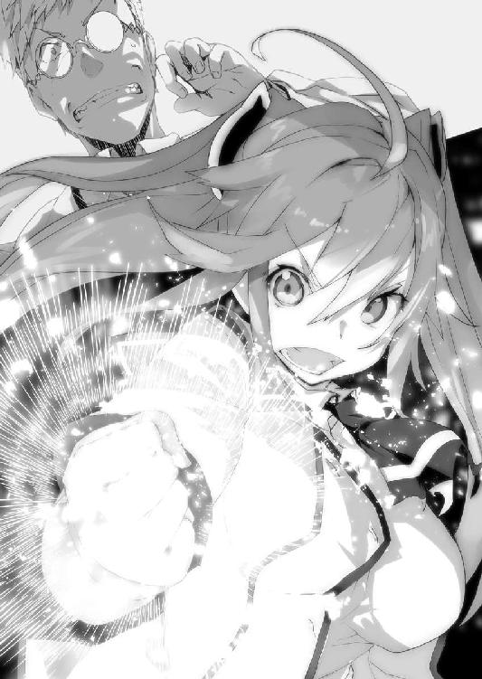
「知るかああああああああ――――――――――!!」
シャーリーの右拳が下からえぐりこむように、梁谷の腹へと叩きこまれる。
相手が悶絶した。
そのまま持ちあげ、振り抜く！
梁谷が、ふっ飛んだ。
白い閃光が天空に向かって駆け抜ける。
シャーリーが拳を突きあげた。
「ダァァァァァァ!! 悪いヤツは、どこの誰であろうと、どんな理由があろうと、あたしら《お助け猫》が許さない!!」
「..............................現在、パートナー解消中です」
「にゃあああッ!?」
シャーリーが悲しい声をあげ、アリスが涼やかな笑い声をあげるのだった。
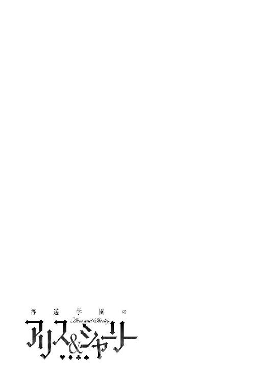
エピローグ 紅茶日和
事件の翌日――
学校はお休みで、いい天気だった。あいかわらず、外は暑い。
また柾貴は、アリスとシャーリーの部屋に来ていた。
ここには最新式のシステムキッチンがある。彼女たちがカウンターテーブルで料理を待っていた。
柾貴は料理中だ。
「いくらシャーリーでも、この量は無理じゃないか？」
「平気だって！ もう子どもじゃないんだから！ はっやく、はっやく！」
歌うように言うシャーリーは、首やら胴体やら手足やらに包帯が巻かれていた。左手はギブスで覆われている。
アリスが紅茶を傾けた。
「......わたしは一人分でいいです」
「最初から、そのつもりだよ。アリスもカレーを食べてくれ。シャーリーにはハンバーグとカレーとラーメンとオムライスと焼きそばと、カツカレー......なあ、やっぱり、おかしくないか？」
どうしても、カレーとカツカレーは同じようなメニューだと思う。
アリスが無表情で。
「......おかしいとは？ シャーリーの胃袋ですか？ それとも、頭の話？」
「いや、カレーが二つ......まぁ、いいけどね」
「柾貴もアリスも、わかってないねぇ！ カレーとカツカレーは別メニューだよ！」
「......永遠にわかりそうにありません」
一応、それぞれのサイズを小さめにして、まず前菜のスープとしてラーメンを出す。
妙なコース料理になったものだ。全部がメインだなんて。
シャーリーが箸をつける。
「わぁぁぁい!!」
「食べにくくないか？」
「にははっ、平気、平気！」
シャーリーは腹部裂傷と、あばら骨や左手に四カ所の亀裂骨折。細かい怪我は数知れずだった。
衝撃波を一発、もろに受けてしまったからだ。
柾貴をかばうために。
シャーリーの特有幻想は攻撃こそ無類の強さを誇るが、防御の効果がない。生きていたのは体の頑丈さゆえ、と医師が驚嘆するほどだった。
夜通しの集中治療により、すでに日常生活が送れるところまで回復している。数日後には痕も消えるらしかった。
「にははっ！ 心配しなくても大丈夫だよ、柾貴！ このくらいのケガはしょっちゅうだし、折れたのも左手の指だから不便じゃないよ？ あっ、そういえば、アリスは左利きなんだよね」
「......ええ」
「あれ、そうなのかい？ いつも右手を使って食事してるのに？」
今も右手でティーカップを持っている。
「......テーブルマナーですから」
「なるほど」
たしかに、レストランでは右側にフォークやナイフを並べられるし、喫茶店だと右手側に持ち手を向けてカップを置かれる。左手で食事をしようとすると、ちょっとスマートさに欠けるかもしれない。
「......慣れです」
「あっ、そういや、クシは左手で持ってたよな」
「..................ふぅん？ おかしいです......わたしがクシを使っているところを柾貴くんは、いつ見たのですか？」
「そりゃ、前に風呂上がりを......あっ！ いやぁ、わ、忘れちゃったなぁ」
「......そう」
ジトっと睨まれて、柾貴は料理に戻った。
話題を転じる。
「朝、緑川先生からの連絡をもらったかい？」
「......ええ」
「なんか、はりー先生のこと言ってたけど意味わかんなかったね。ズズズズ～～～」
「......音を立てずに食べなさい」
「なんで？ ズズズ～って食べたほうが美味しいよ？」
「......下品です」
「アリスは真のラーメンを味わったことがないんだよ！」
「......興味ありません......やはり、梁谷は意識不明だそうですね」
「ああ、威昌沼もそうだったし、あのＡＰＰＤを使ったあとは、そうなっちゃうのかもしれないね」
「にゃはぁ、恐いね......ズズズズ～～～」
「......当然の報いです」
断言するのは抵抗あるが。
「少なくとも梁谷先生は、こうなると知ってて使ったんだろう。威昌沼とかは被害者かもしれないけど......でも罪のない人たちに被害が出なくてよかったのかも――ほら、オムライスだよ」
柾貴のオムライスは、よく火をあてて、ドロッとさせずに、しっかり半円形を作る。白い丸皿に半月が浮かんでいた。
シャーリーが、ぶんぶん手を振る。
「きたあああ！」
「ケチャップどうする？ 自分でかけるか？」
「あ、ハートマーク描いて！」
「そういうのは、やったことないんだが......まぁ、やってみるか」
柾貴は見た目より味にこだわるタイプなので、正直、飾り付けは得意ではないが――
ケーキ作りで慣れているせいか、意外と上手く描けた。
オムライスにハートマーク。それだけだとケチャップが少ないので『Shirley』と書きこむ。
「こんなもんかな」
「おおっ!? これって、つまり......"柾貴は、あたしＬＯＶＥ"って意味だよね!?」
「いや、これは"シャーリーが食べるぶん"って意味だ」
「そっかぁ」
ふと横を見ると、アリスが凝視していた。
「どうした？」
「......あ、いえ......その......わたしも......」
「え？ なんだって？」
「......わた......オム......いえ......なんでも......ないです」
「アリスもオムライスのほうがよかったか？」
「......ッ!?」
瞳が輝いていた。
相変わらず、顔は無表情なのに。
「カレーは明日のほうが美味しくなると思うし、じゃあ、すぐ作るから待っててくれ。材料は多目に買っておいたんだ。この家、大きな冷蔵庫があるしな」
「......うん、待つ」
「いや～、ひさしぶりの料理だ。やっぱり、楽しいなぁ」
「......はやく」
「最新のシステムキッチンだもんな。新品みたいにピカピカだし！ こんな台所のある家に住みたいもんだよ」
「......住めばいいんじゃないかしら？」
「えっ!?」
思わず柾貴は振り返り、アリスを見る。
彼女はうつむいてティーカップを口元に。いつもの表情を隠すときの仕草だ。
シャーリーがスプーンを持った右手を挙げる。
「うん！ 柾貴もここに住めば!? いっぱい部屋は空いてるし！」
「............です」
「あ、うん、なるほど」
「規律委員会は休日でも緊急出動があるしね。チームなんだから、近くに住んでたほうが便利だと思うよ」
「たしかにな」
「こんな美味しいのが、毎日、食べられたら嬉しいよね！」
「ははは......それが本音か？ まぁ、料理の腕を褒められて、悪い気はしないけど。よく考えてみるよ」
「うん、考えて、考えて！」
「......グッジョブです、シャーリー」
「にゃ？」
食事を終えて――
小さめとはいえ五人ぶんくらいあったのに、シャーリーは本当に全部、食べてしまった。
「うぅぅ、まんぞくぅぅぅ......」
「大丈夫か？ 骨折のうえに、腹痛なんてことにならないでくれよ？」
「へいきぃ、へいきぃ。あ、お風呂に、入りたい」
「どうしたんだ？」
「たくさん食べたら汗かいちゃった。あとね、新しいシャンプー買ったの」
部屋の隅に置いてあるショップバッグは、シャーリーが用意したものらしい。
シャンプーにこだわりがあるなんて、意外と女の子らしい面もあるな、と柾貴は思った。
アリスが立ちあがる。
「......仕方ないです。手伝ってあげましょう」
「ありがとぉ」
「......ケガをしてるから、特別です。こればかりは柾貴くんに任せるわけにいきません」
ぶんぶん、と柾貴はもげそうなほど首を横に振った。
当然、手伝えない！
シャーリーの左手を覆うギブスは耐水仕様なので濡れても平気だが、左手が使えなくては右腕が洗えない。かなり不便だ。
病院や老人の家になら、身体を洗ってくれるロボットもあるだろうけど、さすがに数日のために用意してはいなかった。
いずれにせよ、お風呂を柾貴が手伝うわけにはいかない。
「にははっ！ あたしは、べつに気にしないけどね！」
「ぼくが気にするよ」
「......この家で、そのような破廉恥な行為は許しません」
柾貴は腰を浮かせる。
「じゃあ、ぼくは、そろそろ......」
「ええっ!? せっかくだし、夕飯も食べていきなよ、柾貴！」
「......カレー、残ってます」
「そうだよ。あんなに料理したのに、また自宅で夕飯を用意するなんて面倒でしょ!?」
「え、いいのかい？」
「......ええ」
「むしろ、帰らなくていいじゃん！ ずっと居れば？」
柾貴は苦笑しつつ、うなずく。
「とりあえず、夕飯は一緒に取るよ。あ、もうすこし台所を借りてもいいかな？ ケーキの材料も買ってきたんだ」
「......キッチンは好きに使ってかまいません。わたしは紅茶をいれるときしか使いませんから」
「アリスたちは料理しないのか？ どれも道具が新品同然だけど......」
「あたしら、いつも宅配か外食だよ」
「......柾貴くんが作るというので、必要そうな道具一式を用意しておきました」
「そうだったのか、ありがとう！」
「......お、大げさです」
アリスが背中を向けた。
「ぼくのために買ってくれたなんて思わなかったよ。ありがとう！ 美味しいケーキを作って待ってるから、お風呂から出たら、食べよう」
「わ～い！」
「......アイスティーも用意しておいてください」
「今から風呂上がりまでに、アイスティーかい!?」
「......瞬間冷却装置があります」
「そ、そんなものまで」
これがあれば、アイス系のデザートも作りやすいな、とか考えてしまう。
アリスとシャーリーが風呂場へと向かった。
「さて、どんなふうに作るかなぁ」
材料は買ってあって、今日は苺のタルトにするつもりだ。
しかし、苺のカットや、それに合わせた味付けなど、手作りだけに自由度が高い。
まだお腹も膨れているだろうから、ここはボリューム感よりも、さくっと食べられる軽い食感で――
ふと気付いた。
部屋の隅にショップバッグが置きっぱなしだ。シャーリーが使うつもりだったはず。
紙袋はシールされており、開けた様子はなかった。
中には半透明のボトルが入っている。
「うーん、まぁ、ドアの前に置いておいてやればいいかな？」
アリスとシャーリーが頻繁に使う部屋を変えるので、ドアには『RESTROOM』や『BATHROOM』といった表示がなされていた。
なかなか便利だ。
風呂場のドアの前に、ショップバッグを置く。
「シャーリー、忘れ物だよ！ 廊下に置いておくから、十秒くらい数えたら開けて――」
「わぁ、柾貴！ ありがとぉぉぉ!!」
ドアが開けられた。
なぜ開けた。
十秒数えたらって言ったのに――!?
「あれ？ どうかした？」
下着すらつけていないシャーリーが立っていた。迫力のあるふくらみとか、ひきしまったウェストとか、肉感のある太ももとかが、目に飛びこんでくる。
左手だけはギブスに覆われているが。
笑顔だった。
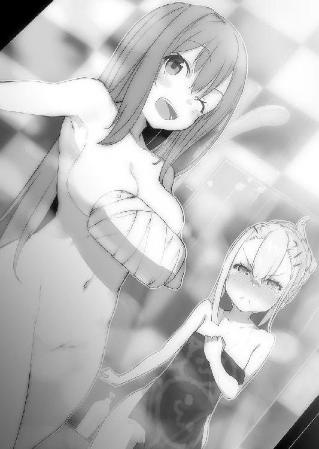
屈託のない笑みというやつだ。
シャーリーは本心から、柾貴に裸を見られることを恥ずかしく思っていないのだろう。
問題は、彼女の背後だった。
タオルで大切なところは隠しているものの......
先に浴室へと入っていたアリスが、また顔を真っ赤にしてこちらを見ていた。
あいかわらず、細くて白い身体が綺麗だった。
わずかな傷もない陶磁器のような肌。
「......あ......ああぁ......」
またも悲鳴が響くのだった。
あとがき
『浮遊学園のアリス＆シャーリー』を読んでいただき、ありがとうございました。
著者の『むらさきゆきや』です。
オーバーラップ文庫の創刊シリーズのひとつとして、こうして刊行させていただくこととなり、とても嬉しいと同時に緊張しております。
本作は浮遊学園都市《楽園》を舞台にした物語です。
そこには特殊な才能に目覚めてしまった者たち（主に成人していない子供たち）が一般社会から隔離されて暮らしています。
周りよりも遅めに覚醒したわりに最高レベルと判定されてしまった柾貴ですが、本当はお菓子作りが趣味の平和な高校生だったりします。
そして、幼馴染みで引かない媚びない省みない少女シャーリーと、自称『世界の王』である不思議な少女アリス。少年少女たちの出会いと再会の物語でした。
楽しんでいただけたなら幸いです。
ちなみに、アリスとシャーリー、どちらが本命だとか、著者は考えておりません。物語が進むうちに、なにかしら決まるだろうとは思っていますが......
あるいは新キャラが!?
そんな感じで......このシリーズは第二巻に続くつもりでいます。出せるといいな！ オーバーラップ文庫さんに期待です！
あくまでも予定ですが、無謀にも次巻の予告をしてみたいと思います――
皆様お気づきかと思いますが、今回《規律委員》でなくなっているのに《特有幻想》を使いまくった子が約一名――桜坂シャーリーの行動が、上層部に問題視されてしまいます。
そして、レベル不足を嘆く支援隊の氷梨に、近づく者が現れて......!?
柾貴とアリスとシャーリーの関係にも変化が訪れます。（予定です）
謝辞――
イラストレーターのしらび先生、素晴らしいイラストをありがとうございました。「かっこよく、メルヘンで、かわいらしく、カバーには三人とも入れて！」などなど無茶な要望を叶えてくださり、大変感謝しております。
NARTI;Sの杉本智行様、おしゃれなデザインをありがとうございました。
浮遊学園都市《楽園》のイラストを担当してくださった酒井良美様、空想の膨らむ舞台になりました。ありがとうございます。
担当編集の五十嵐様、こうして無事に刊行することができました。長かったような、短かったような......これからもよろしくお願いします。
永田編集長、レーベル創刊という重要な機会に声をかけていただいて、ありがとうございます。今後ともがんばります！
オーバーラップ文庫編集部の皆様、関係者の皆様。支えてくれている家族と友人たち。
そして、最後まで読んでくださった貴方に最大限の感謝を！
ありがとうございました。
むらさきゆきや
よろしければ、感想をいただけると嬉しいです。
オーバーラップ文庫さんでは、アンケートに応えると『あとがきのアトガキ』という、限定サイトにアクセスできるらしいです。詳しくは、あとがき後の募集ページにて！
あと、著者サイトにて簡単なアンケートを実施中です。
ＵＲＬ → http://murasakiyukiya.net/
ご意見、ご感想、応援コメントなどお待ちしております。よろしくお願いします。
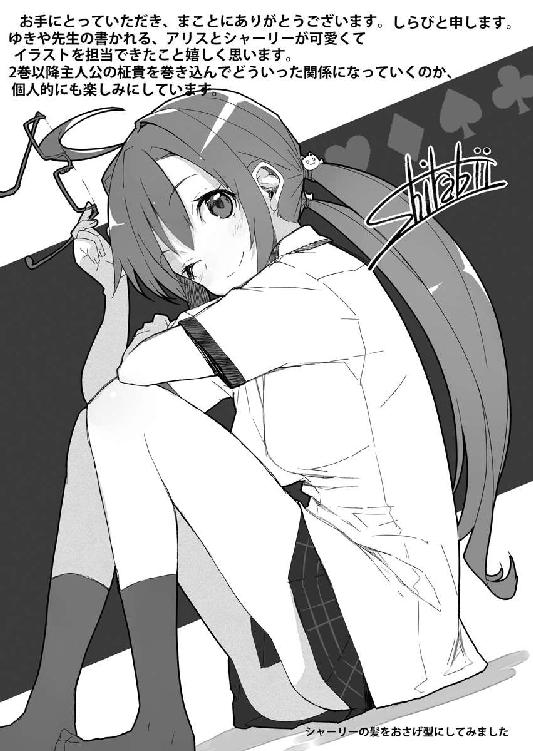
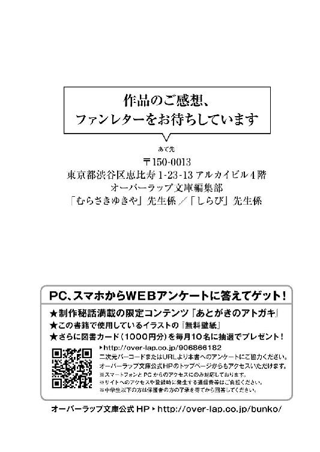
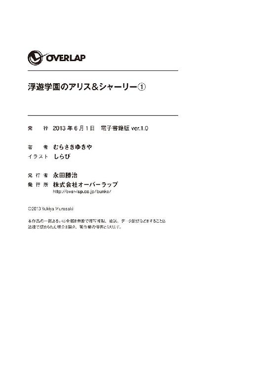